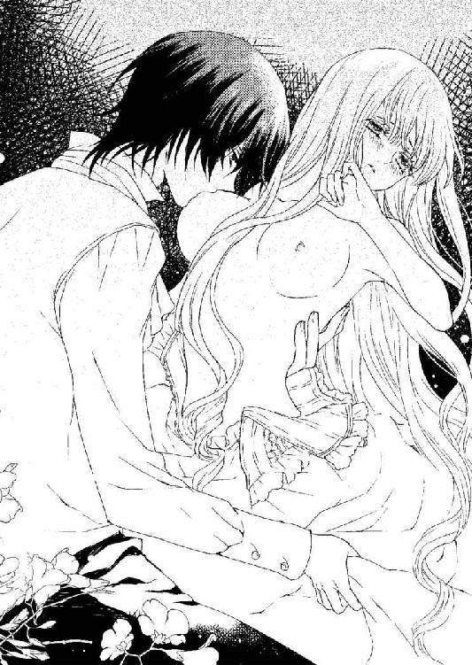

| 鳥籠の中の愉悦 貴公子の指先に溺れて (蜜猫文庫) | |
| 夜織もか | |
| 竹書房 (2014) | |
この作品は縦書きでレイアウトされています。
また、ご覧になる機種により、表示の差異が認められることがあります。
一部の漢字が簡略字で表示されていることがあります。
イラスト／ことね壱花
第一章
「僕の恋人にならないか？」
その言葉に、アンネリーゼはただ困惑した。
薔薇の茂る庭を過ぎて、少し奥まった場所に立つ木の根元。洞のように抉れている部分にすっぽりと収まって頭上を見上げると、木漏れ日がきらきらと輝いて美しい。
彼女はこの場所をとても気に入っていた。風のそよぐ音。森の匂い。それらはアンネリーゼのこれまでの人生にはなかったものだ。
それから、彼女を見下ろす貴公子然としたクラウス。
──このひとは一体何を言っているのだろう。
「......えっと。冗談、ですか？」
「本気だけど」
君こそ何を言っているんだ。そんな声が聞こえてきそう。
整った容姿はそこに浮かぶ表情もわかりやすい。アンネリーゼは彼から目を逸らすことすら忘れて、ただ首を傾けた。
「え？」
「君、想う相手はいないんだろう？」
質問の形ではあったけど、それはもうほぼ断定だった。
そして確かに、彼の言う通り、アンネリーゼには特別に想う相手などいない。
恋はまだ、したことがない。
（きっとこの先も......。そんなこと許されない）
クラウスは大木の影に腰を下ろすアンネリーゼの傍らに立ち、ただ彼女を見下ろしている。彼の背後で、屋敷の壁が遮光に照らされ輝いているのが遠目にも鮮やかだ。
空はまだ明るい。けれどその青は少しずつ薄れている。
きっともうすぐ日が暮れる。
「寒いのかい？」
「え？ いえ......」
「そう」
軽く頷いたクラウスが手のひらを差し出した。
アンネリーゼはそれに更に深く首を傾ける。クラウスの言動は先ほどから唐突すぎて、これがどんな意味なのか、何を求められているのかがわからない。
困惑と戸惑いに瞳を揺らしながら迷うアンネリーゼを見て、彼は笑った。より正確に言うと、笑いを噛み殺し損ねた。
いつも綺麗に微笑む彼の、その人間らしい表情に目を奪われる。同時に、彼の意図を察して顔が赤くなった。きっと彼の手を借りて立ち上がるべきだったのだ。
「そんなに、......その、おかしいですか？」
「いや。ただ君は、本当に──」
本当に、なんと続くはずだったのだろう。
クラウスはアンネリーゼを見つめている。どこか遠くを見つめるような、思いを馳せるようなまなざしで。
そうしてゆっくりと、その目を細めた。
「ねえ、アンネリーゼ？」
弧を描いた唇が薄く開いて、自分の名を呼ぶ。それだけなのに。
逸る鼓動。怖い物を前にしたときと同じ。目の前のものから、どうしても目が逸らせない。
不意に光が目に刺さった。
屋敷の壁に反射する遮光が眩しくて目を細めたアンネリーゼが、何度か目を瞬いて焦点を合わせると、うっすらと赤く染まった日差しから庇ってくれていたクラウスが地面に膝を突いていた。
「アンネリーゼ」
「は、い......」
どれだけ声が掠れていても。絞るように喉を震わせても。
名を呼ばれれば「はい」と返事をする。それは身についてしまった習慣で、条件反射のようになされる意味のない反応だ。
赤い遮光はすぐにまた遮られた。
クラウスが、その顔を寄せて彼女の顔を覗き込んでくる。
「真剣に考えてくれるかい。君は僕の庇護下に入るのが最も無難だと思うんだ」
「ひ、ごか？」
もしそれが愛を囁く言葉ならうっとり聞き入っていたかもしれない。そんな甘い声が、耳慣れない単語を紡いでいる。
アンネリーゼはただ彼を見つめた。クラウスが彼女へ、その身を寄せてくるまで。
（や、近......っ）
背後は大木の幹だ。逃げられない。
そのまま、木の洞と彼の腕に閉じ込められてしまう。
「クラウス、さま......」
「違うだろう、アンネリーゼ」
彼の掠れた声が怖い。
彼女はその囁きから逃れようと顔を背け、背中を丸め、ずるずると寝転ぶように身体をずらした。とにかく迫る彼から距離を取りたかった。
「僕のことは呼び捨てるように言ったと思うけど？」
さっきまでアンネリーゼの頭があった場所に、彼の腕がある。上から覆い被さるように迫られて、アンネリーゼはとっさに目をつむった。
彼の吐息が頬にかかる。
（どうしてこんな、からかうようなこと！）
そんなに自分は、彼の知る貴族の娘と違うのだろうか。
クラウスとはこの屋敷に来てから毎晩の晩餐を共にしている。そこでのやりとりは、社交辞令がない交ぜになった、なんてことないものばかりだ。
けれどアンネリーゼが何かするたび、何か話すたび。クラウスは逐一それを興味深げに見つめている。そのことに、彼女は気がついていた。
きっと目を開ければ間近にあの綺麗な顔があって、美しい瞳が楽しげに細められているんだろう。
「......できませんっ」
「なぜ？」
「だって」
彼を呼び捨てるだとか、恋人になるだとか。そんなこと許されるはずがない。
アンネリーゼは彼に見合うお姫さまではない。それどころか、本当は貴族の娘ですらないのだから。
それを彼は知らない。
こみあげてくる罪悪感に唇を噛みしめて、彼女はそっとまぶたを持ち上げた。クラウスは間近で視線が絡んでも彼女の上に覆い被さったまま、退く気配はない。
日暮れが近づき冷たくなっていた風は、もうアンネリーゼには触れなかった。代わりに彼の体温が、空気を介して伝わってくる。
「ねえ、アンネリーゼ。なぜ？」
「......ッ」
耳許でなされる囁きに、身体が震えてしまう。
つたない言葉でいくら抗っても、それ以上の言葉を重ねられてしまえば、それが彼の言葉なら、頷いてしまうだろう。自分はきっと逆らえない。アンネリーゼはそんな自分を知っていた。
クラウスの手が伸びてきて、彼女の髪を一房手に取り、口付ける。
「や......」
「きちんと意思表示しないと。相手は調子に乗るだけで、君の気持ちを慮ってはくれない」
そう囁く彼の顔に浮かぶ、優しい笑顔の仮面。
指先が髪を梳く。
ぞくりと肌が粟立った。その感覚を追うように、彼は指を髪の流れに差し入れたまま、そのつま先で頬をたどる。
「ゃ......ッ」
耳に触れるか触れないか。
髪をすくう手のひらは上向いたまま、爪の硬い感触が首筋をたどり胸元へと下りていく。ゆっくりと、焦らしながら。
その指先が胸の頂きを探すようにドレスの上をさまよう様は、妖しすぎて見ていられない。
「......あ、の。やめてください」
「だから、どうして？」
物慣れない素振りが珍しいのだ。
ただそれだけだ。
笑いを含んだ声音にそっと目をやれば、クラウスは確かにアンネリーゼの反応をおもしろがっていた。そう見えた。
彼女はそっと安堵の息をつく。彼の瞳の奥にあるものに気付かないまま。
「アンネリーゼ？」
「だって。髪、きちんとできてなくて、恥ずかしいから」
──だから、からかうのはやめて欲しい。
本当は、意地の悪いからかいより、こんなに間近から見つめられることの方がアンネリーゼには恥ずかしい。きちんとした格好をしているか自信がないからだ。
俯いて顔を隠す。そこにクラウスの手に遊ばれていた長い髪が落ちている。結ってから数時間。確実に所々ほつれているはずで、その上、ついさっき幹を枕にしてしまったのだから、後ろもぼろぼろに違いない。

比べて彼はいつ見ても身なりがきちんとしている。今も、晩餐の席で見る姿と比べればラフな格好ではあったが、突然の来客にも十分対応できる装いだ。
クラウスはアンネリーゼの言葉に一瞬目を丸くして、それから身を起こすと、改めて検分するように彼女の全身を眺めた。
その視線に怯えるアンネリーゼの髪を、彼の指がまた梳かす。
何度かそれを繰り返した後、クラウスは不可解そうに首を傾けて言った。
「僕は、......美しいと思うけど」
「そんな。......その、あの。これは、みっともないです」
ここはどうしても譲れない。
震えながら、決死の覚悟で訴える。それに返されたのは、感嘆の吐息だった。
「君は、可愛いね」
まじまじと見つめられ、告げられた言葉に、頬が赤らむ。
きっとクラウスは完璧な淑女しか見たことがないから、アンネリーゼの姿が新鮮なのだろう。彼の『可愛い』もきっと愛玩動物に向けるような意味に違いない。
（......そうよ。身の程をわきまえなさい）
アンネリーゼには、彼の言葉に胸を高鳴らせる資格などない。
わかっているのに、彼が声を立てて笑う気配に胸の奥がざわめく。
「髪が乱れてるから、駄目？ それは、斬新な断り文句だ」
クラウスはおもむろに身を起こすと、アンネリーゼの隣、大きくたわんだ太い根に腰掛けた。
くつくつと喉を震わせて笑う彼を見ながら、アンネリーゼもゆっくりと起き上がる。
「君は。そんなに気になるなら、意地を張らずに侍女の一人でも付ければいいのに」
「それは......でも、他のことに不自由はないですし」
晩餐の際にだけ、その時間を見計らって部屋の掃除に訪れる使用人の女性に頼み込んで、準備を手伝って貰っている。きちんとしたドレスはやはり一人で身につけるのは難しい。
「それに、クラウスさまがいなければ恥ずかしくないから......」
「僕がいなければ、ね」
含みを持った言い方にはっと我に返る。
彼はアンネリーゼの失言に寛容ではあるけれど、だからといって不快に思わないはずもない。
「あの！ すみ、ッ......ご、めんなさ、い？」
慌てて振り仰いだ先、アンネリーゼを見つめるクラウスの表情に不快の色はない。それどころか、作り笑いではない、楽しそうな笑みが浮かんでいた。
「いや構わない。むしろ嬉しい」
「え......？」
その目にいたずらめいた光が差す。
「ただ君にとって残念なことに、僕はしばらくここを離れる予定がなくてね。君は毎日僕に会うことになる」
「毎日って、その、晩餐の時だけじゃなく？」
「ああ。晩餐の時だけじゃなく」
どうする、と視線が笑いながら問いかけてくる。
アンネリーゼは視線を落とす。そうすれば簡単に、胸元へ落ちる乱れた髪が目に入った。
＋ ＋ ＋
アンネリーゼが長年住み慣れた屋敷を一人出されたのは、二週間ほど前のことだった。
日暮も過ぎた夜の道を、領地の端にある別邸へとひたすらに進む。馬車の中とはいえ、これほど長い時間一人きりになるのは本当に久しぶりだ。
アンネリーゼ・ティファート。
ブルンスマイアー伯爵家に訳あって身を寄せている貴族の娘。
そんな偽りの人生が始まった日のことを、アンネリーゼはきっと死ぬまで忘れない。
彼女は知らず握りしめていた両手を解いて、視線を膝の上へと落とす。白い指先が、硬く織られた厚手の生地の上をたどった。
使用人の母が日々、微笑みながらブラシを当てていた『お姫さまのドレス』。
それは幼いアンネリーゼの憧れだった。いつかあんなドレスが似合う女性になりたい。そう何度思い母に願ったかしれない。
過去を懐かしむ想いと共に、飲み込めない苦さを覚えて彼女はそっと瞳を閉じた。
母親が亡くなり天涯孤独の身の上となった直後、幼いアンネリーゼに突きつけられたのは、生地も装飾も憧れ続けたものと見劣りしない、上質なドレスだった。母がいつも、まるでドレスにこそ仕えるように丁寧に手入れをしていた、それと同等のものを身にまとえと強制されて身体が震えた。
あのときの気持ちを、まだ覚えている。
馬車の振動に合わせて光がゆらゆら揺れる。眩暈を覚えるそれから逃げるように目を閉じて、どれくらい経った頃か。突然馬車が止まった。
外は夜。おもむろに開いた扉の向こうは、薄暗い林が一面に広がるのみだ。
そんな周囲の様子を、御者台近くに据え付けられたランプが静かに照らしていた。
目の前に立つ男性のことも。
炎の揺らめきに合わせて淡く刻まれる陰影。通った鼻筋に、うっすらと笑みを象る唇。瞳の色は、きっと緑だ。けれど今は光に照らされて金色に輝いている。
アンネリーゼはその様子に目を奪われた。
幼い頃、物語を読み聞かせてくれた母の瞳もこんな風だった。
その動揺にか、疲労からか。身体をよろめかせたアンネリーゼを、青年が馬車の外へと連れ出す。間近で接する若い異性の顔に、彼女は慌てて距離を取ろうとした。
「あの、......っ」
「危ないよ。落ち着いて、アンネリーゼ」
耳許で囁かれる声が甘い。
混乱と羞恥で頭に血が上りそうだ。誰と尋ねようとして、アンネリーゼはその美貌に覚えた既視感に目を瞠った。
「まさか。......ウェイスンフェルト、さま？」
「僕を知ってくれていたのか。光栄だね。僕のことはクラウスでいい。アルベルトもそう呼ぶ」
アルベルト。その名前が呼び起こす動揺をとっさに隠して、アンネリーゼはただ瞳を伏せる。
彼に逆らってはいけない。
彼女の手を取るこの貴公子は、社交界にどれだけ疎くとも知らない者はいないだろう、この国に二つしかない公爵家の一つ、ウェイスンフェルト家の人間だ。
先頃、ベーレンス侯爵の正式な跡目としてのお披露目も済んだらしい。後々は祖父から公爵位を継ぐとの噂もある。
（とても立派なパーティだったと、あの子が......）
そうアンネリーゼに教えたのが、ブルンスマイアー家の子息、アルベルトだ。
彼女が仕える伯爵家の一人息子。世間では彼らは友人だと、そう言われているようだ。けれど表向きはどうあれ身分の差を思えば、アルベルトはクラウスの取り巻きの一人でしかない。
あくまでも主人と仕える者との関係のはずだ。
（それが、どうしてここに？）
彼を見上げようとして、足元がふらついた。疲労と、歩くことより足元を飾ることを優先したような靴の所為だ。舗装の行き届かない夜の道ではすぐに足を取られて倒れてしまうだろう。だからか、クラウスの腕が腰に回る。
恐れ多さに申し訳なさまで加わり身を固くするアンネリーゼを片腕で支えたまま、彼は馬車の扉を閉めた。そのまま彼が視線を御者に向けると、すぐに馬車が動き始める。
そのあり得ない光景に、彼女はとっさに「待って」の一言も言えない。アンネリーゼを乗せないまま、馬車は闇に溶けてしまった。
「あ......」
「馬車はこのまま走らせる。囮として」
「囮......？」
「彼は手に入れたら最後、二度と君を離さないだろうから」
首元にランタンを下げたまま、栗毛の馬がクラウスにすり寄る。
クラウスは軽く息をついて、首元をわずかにくつろげると馬の引手を掴み、首を傾けてこちらを見た。
「それとも、その方が良かったのかな」
瞳に差し込む光が踊る。
そこに柔らかい愛情を期待して、つい覗き込んでしまったが、アンネリーゼを迎えたのは何も映さない硬質な輝きだ。
（当たり前だわ。お母さまはもういない）
──この人は母ではない。
その不可思議な諦念と失望が、アンネリーゼを現実に突き返した。
生まれて初めて屋敷の外に出た。十数年振りに一人にされた。馬車が自分を置いて走り去った。
そして、目の前にいる次期侯爵。
「アンネリーゼ？」
「はい」
呼びかけに、叩き込まれた条件反射で顔を上げる。
そこにいるのは、伯爵でも、世話役のデリアでも、アルベルトでもない。クラウスはその端正な顔を怪訝そうに歪めている。
「......あ、失礼を。あの」
「君は、アルベルトのものになりたいのか？ 彼は本気だ。本気で君を──」
「あの！」
それ以上は聞きたくない。だから遮った。
アンネリーゼは己の犯した暴挙に震えたが、クラウスがそれを咎める気配はない。それにそっと息を付く。
「あの、あなたはどうして......？」
「ああ。説明がまだだったか。僕はブルンスマイアー伯爵に君を保護するよう頼まれてね。もし君がアルベルトの元に行きたいのだとしても。すまないが、それは許されない」
「そんな......！」
誰が彼の物になりたいだろう。
アルベルトだからではない。相手が誰であれ、アンネリーゼは本当は誰の物にもなりたくない。
「この先に、僕の母が使っていた屋敷がある。そこで君を保護する」
クラウスの声が頭を素通りする。
戻りたい。逃げたい。
──けれど帰る場所などない。
つるりと冷たい何かが心を滑る。慣れた諦めがアンネリーゼから、事を問い質す気力を奪った。
「この屋敷は最低限の維持しかしていないんだ。とにかく人が足りない。しばらく不便をかけると思う」
「......はい。構いません」
促されるまま階段を上がり、廊下を進む。
案内されたのは広い応接室だった。閑散として見えるのは少し薄暗いからかもしれない。正面は一面窓になっていて、広がる黒い森の影が風に揺れていた。
「疲れているだろう。すぐにでも部屋へ案内したいところだが、客を迎える支度にしばらく時間がいるとのことでね」
「はい。あの、平気です」
「ありがとう。準備が整うまでお茶に付き合ってもらえるかな。何か食べるかい？」
「いえ......。あの、ありがとうございます」
促されるままソファに腰掛けて、ひとまず笑みを浮かべる。
彼はそれに微笑みを返すと、一人窓際に立ち、暗い外へと目を向けた。使用人を待つ間、アンネリーゼと距離を置いてくれるのはありがたかった。
二人きりだ。
（どうすればいいの......）
ただ黙って微笑んでいればいい。会話は常に受け身でいること。自分の意見を述べるなどもってのほか。アンネリーゼに施された教育では、相づちの打ち方は習っても、こんな状況での気の訊かせ方など学んでいない。
彼の瞳が、窓の外の影を追うように滑った。
そんな僅かな動作ですら、美しくて息を呑む。
美しさは儚さに通じるものだと思っていたアンネリーゼにとって、儚さどころか強い存在感を覚える彼の美しさは異質で、けれど好ましい。
しばらくして、先ほど馬を引いていった従僕がティーセットを運んできたが、彼もカップにお茶を注ぎ終わるとクラウスが脱いだ外套などを回収し、一礼して去ってしまう。本当に人手が足りていないのだ。
アンネリーゼは己の手を硬く握って、彼女の斜め向こう、一人掛のソファに移ったクラウスを仰ぎ見た。
「あの、クラウスさま。お話を、聞いてもよろしいでしょうか。その......手紙には、詳しいことは書かれていなくて」
彼がこの屋敷に向かう前に手渡してくれたのは、確かにブルンスマイアー伯爵からの手紙だった。ただし、そこにはクラウスに従うようにとしか書かれていない。
クラウスが続く言葉を待つように、アンネリーゼを見つめる。
けれど、これ以上何を言えと言うのだろう。たったこれだけの言葉すら、アンネリーゼにとっては勇気を振り絞った結果だった。
じっと見つめられているだけ。怒りの気配はないように見える。これでもし彼が怒っているのだとしたら、アンネリーゼは混乱で泣いてしまったかもしれない。
「クラウス」
「......はい？」
「呼び捨ててくれて構わない。僕はそう言ったと思う。それに、そこまで恐縮されるのも少し居心地が悪いね」
微笑みながら言われたけれど、その目は笑っているのだろうか。
アンネリーゼよりずっと大きな手のひら、つま先まで整った長い指がカップの持ち手を掴む。彼は綺麗な所作で一口、カップを傾けてから、それをまたソーサーの上へと戻した。
同じく視線をアンネリーゼへと戻し、彼は改めて笑みを浮かべる。
他者に命じ慣れた者独特の雰囲気に、アンネリーゼはただ呑まれた。
「申しわけ......いえ。あの、すみません」
「ごめんなさい」
「え？」
妙にはっきりと丁寧に、唇の動きまで追えてしまえるほど、ゆっくりとなされた発音。
「ごめんなさい、がいい」
「え、っと。......ごめんなさい？」
言ってしまって赤面する。まるで子供みたいだ。
なのにクラウスは満足したように頷く。もしかして、気心が知れた間柄では、こんな幼い言葉使いをするものなのだろうか。
どんな態度を取ればいいのか。ますます迷ってしまったアンネリーゼを見て、彼は楽しそうに笑った。
「話を進めようか。その手紙、読ませて貰っても？」
「はい」
クラウスは慣れた手つきで手紙を受け取り、中身を一瞥すると、かすかに眉をひそめた。そこには数秒で読めてしまう程度の文章しか書かれていない。なのに彼はしばらく、じっとその書面から目を離さなかった。
その横顔をアンネリーゼは見つめる。
伏せがちになると睫毛の長さが際立った。顔に影が落ちるほどだ。瞬きのたびに揺れるそれがなかったら、精巧に作られた人形と言われても信じてしまうかもしれない。
とても美しくて。
（──やっぱり少し、こわい）
「ひどいな」
「え？」
まさか口に出していたかと、思わず手のひら二つ分くらい距離を取ったアンネリーゼに、クラウスこそが驚いたように目を開く。
「君は、僕が怖いかい？」
「す、みませ......ッ」
「いいんだ。でもこの距離は少し話がしづらいかな」
言われて、アンネリーゼはそっと腰を浮かせて座り直した。お詫びの気持ちを込めて、元々座っていた位置より少しだけ彼に近い場所に。
これでいいだろうと息をついて顔を上げようとした。その前に、頬に何かが触れる。
手だ。
突然の接触に身体はただ固まった。顔が上げられない。硬く目を瞑ったアンネリーゼの頬を、彼の指先が撫でていく。
確かめるように、あるいは検分するように。
（ああ、これは......）
こんな風に他人に触れられることにアンネリーゼは慣れていた。嫌だと思ったことは一度もない。けれど、好きでもなかった。
そのままその手に促され顔を上げる。まるで教師に姿勢を正される生徒のよう。けれど今、目の前にいるのは、教師でもブルンスマイアー伯爵でもない。
クラウスだ。
じっと覗き込んでくる。探るように。見透かすように。
そのまなざしに耐えられない。
「......ごめ、んなさ、い」
何に対しての謝罪なのか、自分でもわからない。アンネリーゼはただその目から逃げたかった。
その場しのぎの謝罪なんて、それこそ咎められてもおかしくない場面で、クラウスは笑った。吐息に混ぜて、かすかに。
彼の手が離れていく。
「この手紙は酷いね。彼も急いでいたのかもしれないが。これで十分だと判断したのなら、事前に何かしらの説明があったと思うんだが」
何事もなかったかのような態度。
アンネリーゼはそれに息をついて、差し出された封書を受け取り膝の上に抱え込んだ。
この手紙はどこまでもブルンスマイアー伯爵らしい。蜜蝋の色も、その筆跡も。なにより簡素すぎるその文面が。
十分な説明などないのが自然なのだ。そう言ってしまうのは簡単だった。けれど、そんな実情を他家の人間に晒してもいいのだろうか。
アンネリーゼが貴族の娘ではなく、ただの使用人だということは、きっと隠さねばならない秘密のはずだ。
「それは......その。しばらくの間、屋敷から離れるように、と」
手紙を見つめれば自然と視線が下を向く。
クラウスの様子が見えない。だから、沈黙が怖くて言葉を重ねた。
「それは構わないんです。けれど、その、数日で事足りるような状況では、ないと、私は思って。それで、けど、いつまでもここにお世話になる訳にはいきませ......いかない、し。だから。おじさまからの迎えは、いつ頃のお約束、なの......？」
「お約束なのでしょうか」と言いかけて、とっさに直す。
「特に取り決めてはないね。君のことは長期滞在を前提に預かったつもりだよ」
ティーポットのお茶は冷めてしまった。
そこで初めて迷うような素振りを見せたクラウスが、アンネリーゼにお茶を淹れ直させるかと訊いてくる。
アンネリーゼは思わず首を傾げた。何を言われたのかわからなくて。
「あの。こちらに数日の間、お邪魔するということでは......」
「違うね」
理解できない。理解したくない。
そんなアンネリーゼの様子を興味深げに眺めて、彼は口元を緩める。
「こちらからの連絡も、あちらからの連絡もしばらくは行わない。問題の一切が片づけば、当然あちらから連絡は来るだろうが。──意外かい？」
「どうして......？」
「それはどういう意味だろう。アルベルトを警戒するのは、僕もブルンスマイアー伯爵も、彼の能力には一目置いているからだ。素行は確かに、褒められたものではないが」
アルベルト。その名を聞かされると、身体が緊張で震えてしまう。
彼の話はしたくない。少なくとも今はまだ。
「......貴方は、なぜ、おじさまにご助力なさっているの？」
話を変えるべく、尋ねて良いものかわからない話題を、アンネリーゼはあえて口に上らせた。
「砕けた物言いは慣れない？」
「......なぜ、おじさまの味方をするの？」
なぜ、どうして。そうむやみに訊いて回る子供みたい。
クラウスが笑ったのは、そんなアンネリーゼの自分でも呆れてしまう言動に対してではないんだろう。
「それは、今はまだ秘密にしておこう」
そう言い彼が立ち上がるのと同時に、部屋の外から使用人の呼び声がかかった。部屋の準備が整ったと、その声はそう告げていた。
＋ ＋ ＋
静かな部屋に、かちゃりと鍵のかかる音が響く。
内鍵ではない。部屋の外からだ。
世話をする人間を付けると言われ断ったのだから、他家の、しかも未婚の娘を預かる立場として、この行動は行き過ぎとまでは言えない。
（逃げたりなんか、しないのに......）
綺麗な飾り枠の窓ははめ殺しだった。蔦の意匠が這うように窓枠を覆い、その狭間を埋める透明な窓硝子は全て、ほんの少しずつ色や厚みが違う。コンコン、と軽く叩けば、やはり部位によって音が違った。
朝になれば、この窓を通る陽光が部屋を美しく飾るのだろう。
アンネリーゼはそれを楽しみに思いながら、閑散とした部屋を見渡す。
「閉じ込められちゃった......」
ふふ、と吐息混じりの笑いがこぼれる。
──けれど、ここは安全だ。
アンネリーゼはそう確信すると、数日ぶりに思い切り息を吐いた。
彼女はまっすぐに奥の間に向かい、その寝台に腰を下ろす。軽く結い上げていた髪も解いて、屋敷から持ち出した荷箱から夜着を取り出し身に付けた。
（明日から、ここで生活するのね。......大丈夫かしら）
ここには、使用人の娘が貴族の娘に見えるよう、協力してくれる人間はいない。
教育はきちんとしてもらった。これまで引き合わされた、おそらくは貴族階級の人間だろう何名もの教師たちが、最終的には眉を顰めることもなく合格を告げてはくれた。
にも拘わらず、あるいは当然のことかもしれないが、アンネリーゼはブルンスマイアー邸から一歩も外に出たことがない。
何かがおかしいとしても、誰も指摘はしてくれない。知って当たり前のことを見て学ぶ機会もない。
（──私は、アルベルトとは違う）
同じ屋敷で育った青年を、妬むような、羨むような。
幼い頃から貴族の娘を演じる自分に不安を覚えるたび、繰り返し、反駁するように言い聞かせた言葉は、こんな時でも条件反射のように頭を過ぎる。
アンネリーゼは視界を塞ぐように手で顔を覆った。
（あの子のことは、今はまだ考えたくないのに......）
二人同じ屋敷で育ったとはいえ、幼い頃はそれほど親しい訳ではなかった。アンネリーゼは屋敷の一角に隔離されるように育てられていたし、アルベルトはあの屋敷の跡取りだ。
親しく会話する仲になったのは、彼が両親の支配を笑ってかわすようになってからだろう。
彼は悪い意味でとても貴族らしい青年だった。享楽に目がなく、人を傷付けることも平気でやってのけた。
あの屋敷の中で、ブルンスマイアー家に仕える若い女性の使用人に空々しい愛を囁いていたのを見たことがある。彼は貴族の令嬢にも同じ事を平然と行えてしまえるらしい。
どこか屈折して育ってしまったのは事実だ。
けれど彼はアンネリーゼの前では喜怒哀楽に屈託がなく、朗らかで、明るい青年だった。訪れてくれる時はいつも笑顔を浮かべていた。
それはある意味肉親に向けるような、本当の姉と弟のような。
もしかすると当初はそうだったのかもしれない。長じるにつれて、何かが変わってしまったとしても。
アンネリーゼは頭を振ると、今日着ていたドレスをクロゼットルームに運び、吊し、埃を払う。荷物からガウンを取り出し羽織るついでに、荷ほどきまでもしてしまった。
（デリアがいたら、叱られてしまうわね）
母の友人でもあった彼女は全てを知りながら、それでも使用人として、アンネリーゼのために「下働きの者がするようなことはしてはいけない」と咎めてくれる。
それを聞きながら、アンネリーゼはいつも『下働きの者がするようなこと』を繰り返した。心が落ち着かない時はいつも。
──あの日の夜半過ぎ。
廊下に響くアルベルトの怒声で目を覚ましたアンネリーゼは、デリアに促されるまま侍女の控えの間からそっと廊下へと抜けて、使われていない部屋に身を潜めた。
怖かった。
夜。寝室。誰もいない部屋。
ぞっとよみがえった恐怖に身を震わせていると、あの夜に感じた、ここにあるはずのない気配までもが脳裏に鮮明になる。荒々しかった足音。手当たり次第、扉をノックしながらなされるアンネリーゼへの呼びかけは、優しく甘くなり、そして無言になった。
それからは、ただひたすらにアンネリーゼを探し回るかすかな摺り足の音......。
それが今、聞こえた気がした。そんなはずがないのに。
「アンネリーゼ？」
「──ッ」
この声は違う。アルベルトのものではない。
それは当然のことだった。アンネリーゼはそのためにあの屋敷を後にしたのだから。今頃アルベルトは、父であるブルンスマイアー伯爵から、アンネリーゼの素性を聞かされている頃だろう。
崩れ落ちそうになる身体を必死で堪えながら、アンネリーゼは大きく息を吸って、吐く。そうして、開いたままの扉の影から居間を覗き込んだ。
そこに居たのはクラウスだった。
こちらを振り返った彼はアンネリーゼを見て、わずかに目を見張る。ガウンを羽織っているとはいえ、このような格好で客を迎えるのは不作法だったろうか。
思わず目を伏せてその視線から逃れる。それから何秒か。
「こんな夜更けに申し訳ない」
仕切り直すようにそう声を掛けられ、アンネリーゼも顔を上げた。
彼は先ほどの驚きなどなかったような平然とした様子だ。
「いえ、あの。何か......？」
「君にまだ説明していないと聞いてね。君が滞在する間、就寝中はこの部屋の外から鍵を掛けさせてもらいたいんだが、承知してもらえるだろうか」
「はい。構いません」
彼がまた目を見張る。
今度は驚きではなく、興味深げに。
「構わないのかい？」
「ええ。その、......その方が、安心、するから」
適当に取り繕えれば良かったが、当たり障りのない返しが何も思いつかない。
どうしてか、息が苦しい。それでも顔を上げていると、扉の前にいるクラウスの眉が寄った。
「アンネリーゼ。君に近づいても？」
「......なにか？」
彼はそれには答えず、たった三歩でアンネリーゼの目の前に立つ。
その手のひらが、彼女の頬を滑った。
目元の涙をぬぐわれる。
アンネリーゼが自らの涙に驚いて目を瞠った途端に溢れた涙もまた、彼の温かい指先がぬぐい取っていった。
「鍵は掛けるが、扉の前には誰かしら控えている。何かあれば声を掛けてやってくれ」
「はい......」
柔らかく優しい声だった。誰もいない方が安心なのだと、思わずその背中に本音が溢れてしまいそうなくらい。
クラウスが廊下へと続く扉に手を掛ける。
そこでまたおもむろに、彼がこちらを振り向いた。
「それから。気休め程度にしかならないが、内鍵もあるから使いなさい」
「内鍵？」
「外鍵は君を閉じ込めるためのものだ。外からの侵入者は阻まないだろう。内鍵も、扉を蹴破れば意味をなさない程度のものだが。そこまで無遠慮に音を立てる侵入者はそうはいないだろうからね」
そこまで言って、クラウスは何かを思い出したように笑う。けれどその笑みはすぐに消えて、打って変わった真剣なまなざしをアンネリーゼに向けた。
「扉を破るほどの音が響けば、僕の部屋にも届く」
「あ......りがとう、ございます」
じわりと温かい何かが胸に広がるようだった。
クラウスが目を細める。
「おやすみ。アンネリーゼ」
第二章
いくら足早に廊下を進んでも、髪がほつれる心配はない。
──クラウスさまはアンネリーゼさまの長い髪がお好きなんですよ。
だからと、今日はこめかみに近い髪をそのまま前に垂らして、後ろ髪にだけ手が入っている。この屋敷は女手が少なくて大変だと笑う年配の女性は優しくて、こんな仕事ですら丁寧だ。
（ありがたい、のよ。それはそう。......だけど）
顔を覆うように流れる髪が、周囲を見回すアンネリーゼの視界にちらついた。それはまるでクラウスに触れて貰うために残されているようで、とても恥ずかしい。
アンネリーゼとしては、歩き回っても乱れない程度にまとめられれば十分だったのだ。毎回こんなに綺麗に結い上げて欲しかった訳ではないので、明日こそはもう少し簡単にまとめてもらおうと思う。無難に、地味に、恥ずかしくない程度に。
それでも彼は言うのだろうか。
『やあ、アンネリーゼ。今日も可愛いね』
脳裏に彼の声がよみがえり、アンネリーゼは顔を赤らめた。誰も見てはいないのに、廊下の中央で立ち止まり頬を手で覆う。
（ああ。もう、また思い出して......）
恥ずかしいと言ってしまったあの日から、クラウスはアンネリーゼと顔を合わせるたび装いを褒めてくれる。どんな髪型でも、どんな格好をしていても。つまりは社交辞令だ。
なのに事あるごとに思い返しては、こうやって動揺してしまう。
廊下を曲がると、窓越し一面に中庭が広がった。
（本当に、広いお屋敷......）
観賞用の一角を除けば人の手は入っていないのだろう。東に目を向けるにつれて広がる林はほぼ自然のまま、まるで本当に森の中にぽつんと屋敷が建っているみたいだ。
邸内はいつも静まり返っている。この規模の屋敷ならばもっと人がいておかしくないと思うのに、いつ廊下を歩いてもほとんど誰ともすれ違わない。
（私一人なら、まったく構わないのだけど）
溢れかえる自然以外には何もない場所。
アンネリーゼにとっては、人目を気にせず自由に過ごせるというだけで贅沢な環境だ。
（でもクラウスさまはまだお若いのに。退屈じゃないのかしら）
アンネリーゼは階下のテラスから中庭へと降りた。肌に温かい日差しの感覚に、ふわりと心が浮き立ってくる。
毎日通っても飽きる気がしないのは、直に陽に当たることを禁じられていた期間の方がずっと長いからだろう。
風に誘われて振り仰いだ先、二階の窓を横切る人影が見えた。
彼は今日も来るのだろうか。
（クラウスさまは、......ちょっと、よくわからない）
恋人にならないか。
その提案はその日によって遠回しな言い方だったり、はっきりとした提案だったりの違いはあれど、ほぼ毎日のようになされている。そこに特別な情はないとしても、挨拶のようになされるそれが半ば本気の提案であるのは彼女も薄々気がついていた。
でもそれは、アンネリーゼが貴族の娘だという前提での話だ。それが心苦しい。
ただでさえ一方的に世話になっているのに──
（こんな、嘘までついているなんて）
連日クラウスと晩餐を共にし、最初はいつ失敗するかとびくびくしていた心は、今では罪悪感で一杯だった。
アンネリーゼにとって、ブルンスマイアーの家で嘘をつくことは単なる一つの仕事だった。戸惑いや恐れはあっても良心の呵責はなかった。屋敷の主人から命じられていることだ。あの屋敷の中で、その主人が、アンネリーゼが貴族の娘らしくふるまうことを求めるのなら、それに応えるのが道理だ。アンネリーゼは使用人の娘、彼の持ち物なのだから。
けれどここはあの屋敷ではない。
ぼんやり足の向くまま、いつもの道順で庭の奥へと進む。途中、誰もいないはずの高い生け垣の中に人影が見えたような気がして、彼女の足が止まった。
背の高い男性。とても見慣れた、アンネリーゼに似た髪の色。
「......アル、ベルト？」
「アンネリーゼ！」
立ちすくむより、まず逃げるべきだったのだ。でも彼が浮かべた曇りのない笑顔は見慣れたもので、記憶にあるあの夜の彼の姿こそが夢だったのではないかと。
そんなほんの少しの戸惑いがアンネリーゼの動きを鈍らせ、その接近を許してしまう。
二の腕を掴まれ、彼女は物陰に引きずり込まれた。
「あなた、なぜ......」
ここにいるのか。この場所がわかったのか。
そんなこと今はどうでもいい。
（捕まってしまった......！）
あの日のデリアの深刻な表情を思い出す。ひりつくような夜の雰囲気。それから覚悟を決めて助けを求めた時の、伯爵のあの苦々しい剣呑なまなざし。
「ッ離し──」
「助けにきたんだ、リーゼ」
初めて聞く、硬く真剣な声に強く打たれる。
思わず顔を上げたアンネリーゼを見つめるアルベルトの目が、どこか痛ましげに揺れていた。
「なにを言って......」
「ここに居ては駄目だ。まず逃げないと」
「アルベルト？」
「後のことはそれから考えればいい。いいから、早く！」
簡単な迷路状になっていた生垣を引きずられるようにして抜ける。もつれる足はそのまま、険しい顔をしたアルベルトをひたすら見ていたアンネリーゼは、見慣れた大木の脇を抜ける段になってようやく我に返った。
このままでは本当にここから連れ出されてしまう。
「アルベルト。ねえ、アルベルト待って！」
従順だったアンネリーゼの本気の抵抗に、アルベルトは戸惑ったように足を止める。
「リーゼ？ 説明は後でするから──」
「それじゃあ一緒になんて行けないわ。いえ、そうじゃなくても......」
伯爵の言いつけは絶対だ。
彼の意向を無視することはアンネリーゼにも、アルベルトにも許されてはいない。だから、今はこの屋敷にいることが彼女の仕事だった。
濁した言葉をどう取ったのか、アルベルトはまなじりを釣り上げた。
「リーゼ！ お前は騙されているんだ」
「騙されている？ 何を言うの、アルベルト」
「あいつらの言うことは全てが謀りだ」
そう憎々しげに吐き捨てる。その様子は悪態の域を超えていた。
「......あなた、お父さまのことをそんな風に仰ってはいけないわ」
身内に向ける言葉としては余りに酷くて、アンネリーゼは思わず彼の態度を諫めてしまう。彼との間でこれまで何度も繰り返されてきた、そのままに。
そんな彼女をアルベルトはきつく睨み付けた。真っ直ぐに向けられたのは、怒りと焦り。それから強い苛立ち。
「そんなだから、あいつらが良いように......」
「『あいつら』なんて酷い言葉は──」
「ほら、なにもわかってない！ お前のそれは、全部偽りか誤魔化しでしかないんだよ！」
「なにを......」
その剣幕と、そしてひどく真剣な声音に、アンネリーゼはやっと思い至った。
ブルンスマイアー伯爵は、息子の説得に失敗したのだ。
いや、単なる失敗よりもっと悪い。彼は父親の言葉すべてが偽りだと、受け入れることから拒んでいる。
（なんてこと......）
実の父親の言葉すら聞き入れられないなんて。
見つめ合ったまま、アンネリーゼは少しずつ後ずさり距離を取った。
「そんなことはないわ。貴方のお父さまは真実を仰ってる。私は、貴族の娘なんかじゃ」
「そうじゃない、リーゼ」
「──......ッ」
力任せに掴まれた手首が痛い。
それでも目を逸らしてはいけないとアンネリーゼは思った。
「私は、あなたの妻にもなれない。......ならない」
「リーゼ」
「帰って。きっと今ならまだ──」
「一緒じゃないなら俺はここから動かない」
「アルベルト......」
「ここにいては駄目なんだ。ここは公爵領だ。わかっているのか？ まさかクラウスの元にいただなんて......」
力任せに引き寄せられ、体勢を崩したアンネリーゼの腰にアルベルトの腕が回った。
抱え上げられようとしている。そう悟って、次の瞬間脳裏を過ぎったのは、あの夜の光景だ。
アンネリーゼがいくらありえないと唱えても意味はない。本当はわかっている。アルベルトはあの夜、確かに、アンネリーゼを陵辱しようとあの場を訪れた。
（いや......！）
今更な恐怖に血の気が引いた。
「いやっ！ クラウスさま！」
そう叫んだ途端、アルベルトの動きが止まった。
力の緩んだ彼の腕から、アンネリーゼは必死に逃れ距離を取った。本当は走って逃げたかった。けれど背中を見せてしまえば、きっとすぐに捕まってしまう。
目の前で愕然とした表情を浮かべるアルベルトは、ほんの少しの刺激であの夜の彼に戻ってしまいそうな危うい気配を放っていた。
「......クラウスだって？」
「あ、......」
なぜその名前が出てくる。向けられるまなざしがそう強く問う。
アンネリーゼは弱く頭を振った。特別理由があった訳ではないのだ。ただ、恐怖と混乱の中でその名が出たのは、きっと。
（きっと、助けてくれると言ってくれたから......）
扉が破られる音が聞こえたら来てくれると、泣いていたアンネリーゼに暗に示してくれた。それはアンネリーゼの心に深く沁みた。それがただの、通り一遍の慰めでも。今までアンネリーゼの立場や役割のために世話をしてくれる人はいても、アンネリーゼの心を気遣ってくれた人など、ほとんどいなかったから。
（でも、ここはあの部屋じゃない）
こんな林の奥からでは、どれだけ叫ぼうと声は届かない。
「アルベルト。お願い、帰って。私を連れ帰りたいなら伯爵を通して、クラウスさまに──」
「遅かったのか？ ......もう手遅れってことか」
数歩の距離など元からないも同然だった。突然延びてきた手に、アンネリーゼの身体は乱暴に地面へと引き倒される。強く掴まれた肩を地面を打ち付けられ、彼女は痛みにうめいた。
天を仰ぐと、そこにはアンネリーゼと同じように、痛みに顔を歪めた青年の顔があった。
「侯爵じゃないのか。クラウスだったのか！」
「アル、ベルト......？」
「もう、クラウスのものになったってことだろう？」
「クラウスさまがなにを──」
「あの女嫌いがッ！ どうせまともに女を抱いたことなんてないくせに！」
「......なにを言っているの？」
アンネリーゼは伯爵の命でクラウスの世話になっているだけだ。アルベルトが暗に示すような後ろ暗い関係など一切ない。
そう言い返すには、そこに浮かんだ嘲笑と見下したような目が怖かった。
彼は本当に、どうしてしまったんだろう。
目を逸らすことだけは絶対にしてはいけない気がして、アンネリーゼは必死にその顔を見つめた。視線が間近で絡み合う。そうすれば、ほんの少しだけ、その瞳の奥に動揺が見えた気がした。
アルベルトの顔が急に歪む。まるで涙を堪えるように。
「リーゼ、どうして......」
「アルベルト......？」
思わず延ばした手を掴まれて、土の上に押しつけられた。
「アルベルト？ アルベルト、いや。......ッ、いやよ、止めて！」
首筋から胸元、腹を伝い腰まで。触れるだなんて優しいものじゃない。ドレスの上から乱暴に探られて、痛みよりも気持ち悪さに涙がにじんだ。
（いや、いや、いや！）
首筋にかかる吐息に吐き気がする。
手首を押さえつける手に爪を立てれば、握り潰されるのではと思うほどその拘束に力が込められた。
「ッ......お、じさまの、話は──」
「そんなのどうでもいい」
ドレスの裾がたくし上げられ、足を触られる。手の平が這う感触に怖気立つ。
「いや！ やめなさいッ！」
「なんでだよ！ お前にとっては相手が誰でも同じなんだろ！」
「な、──」
なにをいうのか、と。
叱りつけようとして、それが単なる罵りの言葉でなく、彼が真実そう信じているのだとわかって。
アンネリーゼはあまりのことに絶句した。
「どんな時でも抗わず、従順に！ ただ笑えって。......だから俺にも優しかったのか」
「どうして......」
そんなに泣きそうな顔をしているのか。歪んだ笑みを浮かべて、まるで汚いものを見るような目でアンネリーゼを見下しながら。
「じゃあ、いいだろ」
ドレスの胸元をほどかれる。
もういっそ舌を噛み切ってしまおうと思った時だ。
「何がいいのかさっぱりだな」
鈍い音がして、アルベルトの身体が横に跳ねるようにして倒れた。
身体を押さえつけていた重みがなくなると同時に強引に引き起こされて、アンネリーゼの視界が開ける。片方だけ脱げてしまった靴の所為でよろけるも、いつかのように彼の腕が腰を支えてくれた。
それはどうしてか、気持ち悪くはなかった。
「クラウス、さま......？」
「君はまた......。僕以外の誰に見えるって言うんだ」
クラウスはアンネリーゼを一瞥し軽く息を吐いてから、アルベルトへと視線を向ける。
咳き込みながらも、のろのろと身体を起こした彼は、呪い殺しそうな目で自分を蹴り倒したクラウスを睨み付けた。
そのぞっとするようなまなざしを平然と流して、「それにしても」とクラウスは呆れを隠さず言う。
「アルベルト、君の理屈はいつもそうだ。僕にはその主張のどこに筋が通っているのか、まったくわからない」
「クラウス！ お前、騙したな！」
「騙してなどないさ」
クラウスはアルベルトの敵意など気にもとめない。
けれどアンネリーゼは違う。先ほどまでとは違い、彼の不安定さの全てが攻撃性に取って変わったような様子に、彼女は思わずクラウスの後ろへと隠れた。
それを見たアルベルトが傷ついたような顔をしても、今度は心が動かない。
「アンネリーゼ。騙されちゃだめだ。お前はここに監禁されてるんだよ、わかれよ！」
「かんきん......？」
何を言っているのだろう、と思った。二重の意味で。
確かにアンネリーゼを指して監禁されていると言う人間もいるかもしれない。でもそれは、彼女にとっては当たり前の、ただの日常だ。
それにブルンスマイアーの屋敷での日々と比べたら、今の生活はずっと自由だ。
監禁とは、閉じ込められる人間の意思を無視して行われるものだろう。
ならば。
「そんなこと、されてないわ」
「アンネリーゼ！」
その慟哭にも似た叫びに、アンネリーゼの肩が跳ねる。
クラウスの手が落ち着けと言うように背中を撫で、肩を抱いた。
「もういいだろう。どちらにせよ、君の出る幕はない」
「クラウス！ この、裏切り者！」
「僕が君が言うところの裏切り者だとしたら、彼女がいるのはここではなく父の城になるんじゃないか」
「それよりはマシって言うのか、お前が？」
「八つ当たりは見苦しいと思うが。そもそも父のお気に入りのお前が、こんな風に激高するなんて──」
「当然だろう！ アンネリーゼはその辺の女とは違う！」
静まり返った林の奥に、その残響が吸い込まれる。
アンネリーゼはただ息を呑んだ。こんな自分に特別な情を寄せてくれる人間が居たなんて、信じられなくて。
「あ......」
何を言おうとしたのだろう。本人すら意識していなかった情動を制すように、アンネリーゼの肩を抱くクラウスの手に力がこもった。
アンネリーゼの視線がクラウスに向く。
彼はじっとアルベルトを見据えていた。アルベルトもまた、クラウスを睨み付けている。
「......お前が。アンネリーゼをこんな風に育てさせたんだ」
「アルベルト？ 何を言っているの？」
「もっと早く知っていたら......」
そうアルベルトは静かに独りごちた。
これまで彼を覆っていた焦燥感はもうない。
それが失意からだとしても、納得してくれたなら。相手の態度の急変をアンネリーゼはそう受け取り密かに安堵する。
俯いたまま顔を上げないアルベルトを案じる気持ちが、まだ心のどこかにある。なぜなら、彼は大切な──
「アンネリーゼ。お願いだ、逃げてくれ。俺と一緒に！ ......なあ、姉さん！」
「あ、......」
「母親が違うだなんて関係ない。血が繋がってるから駄目だって言うなら、姉さんがそう言うなら、それでいい。諦める。でもなら、誰が認めなくてもリーゼは俺の姉さんだ。いや認めさせてやる。だから──」
震える手を差し出しながらの嘆願に心が揺れた。
その手を取ってはいけない。わかっていても、アンネリーゼは無意識に大切な弟に向かいその手を伸ばしかけた。
その手首をクラウスに掴まれ、彼女は我に返る。
瞬くアンネリーゼの瞳を覗き込み、彼はただじっと彼女を見つめていた。
「クラウス......ッ！」
殺してやる。そんな怨嗟が込められていそうなアルベルトの叫びにすら、クラウスは目を向けようとしない。
「すまないが、君は預かり物だ。行かせられない」
「でも......」
「押し倒されて、嫌がっていたように見えたのは、僕の見間違いだったのかな」
「それは......」
彼はアンネリーゼを見つめて、言った。
「君は、愚かだね」
あくまでも淡々とした声音に責める調子は欠片もない。
けれど。
──憐れまれた。
それをどうしてかはっきりと理解できてしまった。哀切が滲むまなざしはひどく優しく、けれど何かを見限ったように線を引いている。
引き裂かれるような胸の痛みで、アンネリーゼは息ができない。
違うと、なにに対する否定なのかわからなくてもそう言い縋りたいのに声がでない。
代わりに溢れそうになった涙を必死で堪える。その頬をクラウスの手が覆った。
「......クラウス、さま」
「ここで彼と行けば、それこそ誰も知らぬ場所で囲い物にされるだけだろうに」
そうなのだろうか。
──そうなのかもしれない。
デリアも、アルベルトの父である伯爵も暗にそう告げていた。クラウスすらもそう言うのなら、それが正しいのだろう。
（私はなにもわかっていない、愚かな娘だもの......）
アンネリーゼにはもう、「そんなことはしない！」と叫ぶアルベルトの声は聞こえていなかった。
「そろそろ人が来るな」
クラウスの言う通り、遠くから呼び声が聞こえる。屋敷の主を探す声はすぐに大きくなった。彼らはクラウスの居場所に当たりを付けて、こちらに近づいてくるようだ。
「アルベルト、君は帰った方が良い。屋敷に無断で立ち入ったことは不問にしよう」
「リーゼ......」
アルベルトはクラウスを見ていない。縋るようなまなざしはアンネリーゼに向いている。けれど、もうそれには応えられない。
共には行けない。それを無言の内に込める。
アンネリーゼの意思が伝わったのだろう。茂みを掻き分ける音が響くと同時に、アルベルトは身を翻して林の奥へと去った。
＋ ＋ ＋
頭がぼんやりとしていた。
アンネリーゼはおぼつかない足取りで、ただひたすら躓かないようにと足を動かす。
恐怖の対象でもあり、親愛の対象でもあったアルベルトとの突然の邂逅は、それだけで彼女の心に大きな負担を強いた。
（けど。それだけじゃなくて......）
アルベルトは何を言っていたのだったか。
なんとか思い出そうとするのに、上手くいかない。きっとそれは、この思考こそが逃避だからだ。
アンネリーゼにとっては、それよりもクラウスに向けられたまなざしの方が重かった。
（......呆れられた。がっかりさせた）
期待されたかったわけではない。失望されることには慣れている。
（なのになぜ。どうして、こんなにショックなの......？）
わからない。
目を瞬いてなんとか涙を堪える。いつもより足早になる歩み。脚に絡むドレスは土で汚れていた。
（あ、髪も......）
繋がれていない方の手でそっと確かめる。せっかく綺麗に結わいてもらったのに、乱れてしまった。それがとても悲しい。切ない。
アルベルトのような力任せの拘束ではないにしろ、アンネリーゼの手首を掴むクラウスの手は硬く、外せそうにない。
屋敷に戻って息をつく間もなく、この手が離されないまま屋敷の奥の間に連れてこられた。扉をいくつもくぐって、突き当たり、大きな窓のある部屋の中央で彼は立ち止まる。
（ここ。クラウスさまのお部屋......？）
室内は薄暗かった。
まだ午前中だ。西向きの室内に日差しは差さない。なのに採光のため広く取られた窓は、上から半ばまで覆うようにカーテンが垂れ下がっている。
この屋敷の使用人がこの手の不始末をするとは思えない。とするなら、これは敢えてこうなっているということなのだが、その理由がわからなくてアンネリーゼは戸惑う。
何かいけないものを見ているようで落ち着かなかった。
窓の向こうはテラスになっているようだ。位置的に考えてそこからあの中庭が見下ろせるに違いない。
「あの......」
手を離してもらえたら。そうしたらあのカーテンをきちんと元に戻して、どこにでもある普通の部屋にして。それから──
はあ、と。
斜め上から落ちた大きな溜息が、まとまりかけた考えを吹き飛ばす。
アンネリーゼは思わず顔を上げてしまった。凍り付いたような心臓の痛みを堪える彼女を、クラウスが静かに見下ろしている。
視線が絡んだまま何秒か。
唇を喘がせてなんとか言葉を紡ごうとするアンネリーゼに対して、彼は言葉を探すようでもなく、ただ見つめてくるだけだ。
ふ、と彼はまた一つ吐息をこぼす。
手は離されないまま、再び歩き出したクラウスの後を、引きずられまいとアンネリーゼは追う。扉をくぐると次の間はもっと暗い。寝室だ。そこにある天蓋付きのベッドを通り過ぎて、その更に奥の部屋へと扉をくぐる。
そこにも寝台があった。
他の部屋と比べればやや狭い部屋は、中央に鎮座する寝台以外になにもない。アンネリーゼの手首を掴んだまま、クラウスはその部屋の扉を閉めてまた足を進めた。
寝台の上へと突き倒される。
冷たいシーツの感触に驚いて身を起こしかけたアンネリーゼを制し、クラウスがその大きな手で彼女の頬を撫でた。
視線は絡んだまま、逸らせない。
「ねえ、アンネリーゼ」
「はい」
「......僕の恋人になろうか」
頬を撫でていた彼の手のひらが、耳の後ろからうなじへと移る。
ゆっくりと顔が近づいてくる。口付けられそうになっているのだと気付いたときには吐息がかかる距離に彼が居て、アンネリーゼはとっさに手のひらを間に差し入れた。
「ご、めんな、さい。あの。......私、確かにアルベルトの姉だけど、貴族じゃない。使用人の娘で。だから──」
「知ってる」
クラウスはアンネリーゼの手を取ると、その手のひらに唇を寄せた。口づけはそのまま手首にまで至る。
素肌に吐息が這う感覚にただ身を震わせるアンネリーゼを見つめながら、彼はそこに吸い付いた。
「──ッ」
「知っているよ。で、それが？」
「それが、って......」
恋人にはなれない。
それ以上でも以下でもない。アンネリーゼは彼のような身分の人間と対等ではないのだ。例えば万が一、クラウスがもしアンネリーゼは自分の恋人だと宣言しても、周囲の人間は誰もそんなこと認めないだろう。
（それとも恋人って、愛人ってこと......？）
現実的に考えるなら、そういうことなのかもしれない。
クラウスは優しいから、そうとはっきり告げることができないのかも。
アンネリーゼは囚われていた手をそっと取り返して、胸の前で抱えこんだ。
「クラウスさま......その、汚れてしまいます」
話を逸らして、距離を取って、それから断ろう。そう彼女は考えた。
アルベルトの手で地面の上へと引き倒されたアンネリーゼは、事実泥だらけだ。このままでは寝具も泥で汚してしまう。
「あの、だから......」
愛人だけはどうしても嫌だ。
嫌だと思う理由がある。なにもかもを許容するように生きているアンネリーゼが唯一持っている拘りだ。そう言葉を尽くせば、優しいクラウスはきっとわかってくれる。
でも、まずは寝台から離れなければ。
「ああ。髪は、そうだね。解こうか」
完全にアンネリーゼが身を起こす前に、クラウスの手がするりと髪留めのピンを抜いた。
一本、二本。ゆっくりと差し入れられた指に頭皮を探られて、最後に飾りのリボンを解かれると、するすると髪が重みに負けて肩へと流れる。それを手ぐしで整えられた。
すべて終わるまでアンネリーゼは動けなかった。
じっと息を潜めて、間近にあるクラウスの顔を見つめ続けた。
「ブルンスマイアー伯爵、君の父上と言った方がいいのかな。彼は君がここにいることを知っている」
「それは......」
今更の話だ。クラウスをアンネリーゼの元へとよこしたのは伯爵本人なのだから。
そこでふとアルベルトの言葉を思い出した。
（確か、ここは公爵領だって......）
それが本当なら、あの夜アンネリーゼを乗せた馬車は最初から、ブルンスマイアー家の別邸になど向かっていなかったということだ。
アンネリーゼが屋敷から出ることになったのは、彼女が伯爵にアルベルトの件を告げたからだ。伯爵はすぐにアンネリーゼを屋敷から出すと決め、即日実行に移した。急いでいたのは確かだ。現に世話役の人間すら連れられず、アンネリーゼは一人で馬車に乗り込んだのだから。
だが彼はその時点で馬車を公爵領に向かわせていた？
「君がここに来るのはもう少し先になるはずだった。といっても、あと数週の内だったそうだから、大した違いではないね」
「どうして、あのひとは、......私に、別邸で過ごせなんて嘘を......」
彼はそれには答えなかった。小さく笑って、静かな声で話を続ける。
「正確に言えば、君が本来向かうはずだったのはここではなく、父の屋敷だが」
「クラウスさまの、お父さま？」
「君は僕が預かった。父はもう関係ない。だから、......何も知らずこのまま穏やかに暮らしていくなら、その方が。そう思っていたんだ。だが」
髪を梳かれる。
ひたすら優しい、まるで母のような慈しみの目で。
「君は、愚かすぎる」
「あ......」
とん、と胸を押されてアンネリーゼの身体はベッドに戻った。首のリボンが解かれて、胸元の隠しボタンが一つずつ外されていく。
「クラウスさま？ ......や、あの。いやです」
「そう？ なら仕方ないね」
そこに浮かんだ優しげな笑みに、アンネリーゼもまたかすかに笑みを浮かべたが。
「我慢して」
「え？」
露わになった胸元の、鎖骨から膨らむ胸の半ばまで。彼の指先はその素肌の感触を探った後、腰を絞りを緩め始めた。
それを呆然と見守ってしまう。
背中にある結び目に指が伸びるに至って、アンネリーゼは抗おうと身を起こしかけた。けれどそれも伸し掛るクラウスに阻まれて適わない。半ばまで身を起こしてしまったことで楽に背中にまわった腕が、アンネリーゼのドレスを解いていく。
「待ってください。待って！ どうしてこんなこと！」
「君は、これまで恐らく一度も、自分の身を守ろうとしたことがない。そうだろう？」
また、断言された。
そんなことはないと言えたら良かった。けど現実は、彼の言う通りだ。その自覚がアンネリーゼにはある。
「なら。この方がいい」
目を合わせてくれたのもここまでだった。
首筋に吐息が落ちる。その間にもドレスは半ばまで脱がされて、それに抗おうとすると大人しくしろと言うように鎖骨に歯を立てられた。
ぞくりと身を走る知らない感覚に身体が強ばる。その上から塗り込められる、くすぐったさにも似た甘い刺激から逃げ出したい。
「待っ、て。どうして。お、じさまが......！」
「彼は君を、僕の家に売るために育てていたんだよ」
「え？」
わずかに身を起こしたクラウスが、アンネリーゼの髪をすくい取って口付けた。
うっすらと浮かぶ笑みに知らず身体が震える。
「──そんなこと、誰も頼んでいないのに」
冷たい目で見下ろされ、苦々しく吐き捨てられて。アンネリーゼはただ息を呑むしかなかった。
怖かったのだと思う。
冷たい視線には慣れていると思っていた。人間扱いされないことすら、自ら慣れるよう努力した。けれどそれは血の繋がりの上では父であった伯爵や、ブルンスマイアーの屋敷に古くから仕えている使用人たちに対してのみ築いた壁だったのかもしれない。
クラウスの冷たい視線は、それだけでアンネリーゼの心を折った。
どうしても耐えられなかった。抵抗するだなんて思いつきもしないくらい。
あらゆる部位を緩められて、身体にまとわりつくだけとなったドレス。その袖からゆっくりと腕が抜かれていく。
己の白い肌が露わになっていく様は、恐怖で固まっていた心を違う感情で揺さぶりだした。
（......いや。もういや）
剥き出しの肩がクラウスの前に晒される。
触れるか触れないかの彼の指先に粟立った肌も、小さな震えも、なにもかも隠せない。
恥ずかしい。
この羞恥だけでかすかに息が上がる。顔なんて上げられるわけがなかった。
クラウスの手が自分の身体の上をさまよう様子も、もう見ていたくなくて、アンネリーゼはその目を固く閉じる。
「あ......ッ」
コルセットが緩められ締め付けがなくなる。ひやりと触れる外気。もう上半身を隠すものはない。
「あ、や......」
見られている、のだろうか？
クラウスの視線を想像して肌が痛いくらいに粟立つ。どうしようもなくて腕で隠そうとしたが許されなかった。掴まれた手を引かれ、身体が中途半端に起き上がる。その背中をクラウスの手が下りていく。
「腰、あげて？」
「ゃ......」
アンネリーゼは必死で首を振った。下腹部にわだかまる布もなくなるなんて、下半身も見られてしまうなんて。もうこれ以上は本当に耐えられない。
「そう？」
「......ッ、ぁ、ん」
背後から尻のあわいに入る部分を擽っていた指が、ゆっくりと離れて背中を上る。
羞恥による混乱を更に煽るような、ぞくぞくとした未知の感覚が怖い。
彼の手が触れるところから、痛くない痛みのようなものがせり上がって、喉が震えそうになる。手の甲を押しつけて口を塞いでも、すぐに力が抜けて駄目だった。
（変な声が出ちゃ......ッ）
「ひ、あぁ！」
舐められた。
その濡れた感触にアンネリーゼは思わず目を見開いた。仰け反るように突き出した胸の頂き。そこに舌を伸ばすクラウスと、目が合う。

彼は笑って見せつけるように舌を絡め、吸い付いた。
目をつむってももう遅い。彼のまなざしが脳裏に焼き付いてしまっている。
「んん、......ッ！」
舌の這う先端を吸い上げられただけで、腹部の奥をツキリと鋭い感覚が刺す。宥めるように乳房を柔らかく揉みほぐされて、でも、舌で先端を嬲られる感覚の方が強烈だった。
アンネリーゼはなんとか逃れようと身を捩る。
「ひゃ、ぁ......んんッ」
それを咎めるように、もう片方も指の腹で抉られた。まだ柔い先端をつま先が擽り、硬くなれば擦り上げられられこねくり回されて、痛みに似た鋭い感覚に身体が跳ねた。
「や、ぁ、......いた、ッ......あ」
「それは、本当に痛みかい？」
確かめてみようか。
自分の荒い息が邪魔で、クラウスの声がとても遠い。それが少し怖くて目を開けると、涙で濡れた視界にアンネリーゼの顔を見つめるクラウスが居た。
「あ......」
彼のすぐそば、荒い息に上下する胸。その頂きが片方だけ、濡れててらりと光っている。
「やだぁ......ッぁ、......ふ......ッ......」
アンネリーゼが弱く頭をふる様を眺めながら、クラウスは手のひらで乳房を優しく揉んでは、時折赤く震えるそこに指先を滑らせた。
「......やッ」
甘い刺激に身体が跳ねる。
びくびくと、彼の手が追い立てるままに揺れる身体は、まるで彼を誘っているみたいに見えた。
（な、に。いや......こんなの）
うっすら上気する自分の身体から目が離せない。
「ッ、あ！」
彼の手がドレスをたくし上げているのは知っていた。その手が大腿を撫でているのも。けれど、その指先が──
「......ぁ......──ッ！」
クラウスの指が触れている。両股の間、誰も触れたことのない場所を。
強い痺れのような衝撃が下から上に抜けた。
甘えるような甲高い声。それが自分のものだとわかっても、どうしようもない。アンネリーゼは、痺れたようにうずく下半身からの刺激を耐えるので精一杯だった。
「ぁ......あ、ゃ、いや......だめ......」
少しでも気を抜けば、息を喘がせる唇からまた声が溢れそう。
彼の指がまたそこをなぞる。丁寧に、ゆっくりと。
そこをなぞられる度に、ひくん、ひくん、と大げさなくらい身体が跳ねた。逃げるように腰をくねらせて、それでも追ってくる指先に泣きそうになった。
そこに、ほんの少し指が食い込む。
「......ぁ、あぁっ！」
もう我慢できない。一度負けてしまえば、息をするたびに高い声が止まらない。
「ッ......な、なに......あっ！」
「ああ。まだそれほど濡れてはないけど」
触れるか触れないか。その指先に意識が集中する。
うっすら生えそろった茂みをくすぐっていた指先が、ぴたりと閉じたその表面を確かめるように撫で始めた。少しずつ、少しずつ、押し広げるように。
「......ッ、いや。......や、です。そんなところ、や。やめて、ください」
必死の懇願を、目の前のクラウスはおかしそうに笑った。止めるつもりはない。そうはっきりとその目が語っていた。
「んッ......。あ、クラウス、さま」
じりじりと焼け付く感覚にどうしたらいいのかわからない。
また胸に吸い付かれて、身体が跳ねる。
くちりと、ぬめるそこにほんの少しだけ指先が潜り込んだ。息を詰めて身体を強ばらせるアンネリーゼの表情を見つめ、クラウスは唾液をたっぷりと胸の頂きに塗りつけていく。狭間にもぐり込んだ指先で延々と柔らかいそこをなで上げながら。
「は、......ん、んん......ッ！」
喉の奥からこみあげる熱を、手のひらで抑えこむ。
アンネリーゼの両腕は自由だ。両手で口を覆っているけれど、この手で抗えないわけでもない。わかっている。己の細い指先を見て、その向こうにいるクラウスを見た。
ただ、手を伸ばして彼を押しのける勇気がないだけだ。
──私なんかが。クラウスさまに触れることなんて、許されない。
こんな状況なのに、本気で逃れたいと思っているのに、でもクラウスの美しい顔を見ると気持ちが怖じ気づいてしまう。
彼は時折身をかがめてアンネリーゼの胸の頂きへ舌を伸ばしては、赤く染まったそこを指でくすぐっていた。喘ぐ相手の様子を見ながら、強く優しく甘い刺激を送り続ける。
「はぁ、あ......ッ！ は、んぅ」
身体が熱い。
下肢を擦り上げる指の動きは一定で、優しい。なのにあんなに強かった刺激は薄れていて、もどかしく、胸を弄るようにして欲しいと願ってしまう。そんな自分が恥ずかしくて、アンネリーゼは消えてしまいたかった。
「ぅ、あ......ッ、は、......ぁ、んん──ッ」
唐突に、口を塞がれた。
驚き目を開くアンネリーゼの顔を薄目で見つめつつ、クラウスが舌を差し込んでくる。とっさに押し返そうとすれば逆に絡められきつく吸われた。
初めての口づけなのに。
息継ぎもままならなくて、息ができなくて。ぼんやり霞む意識の向こうでクラウスから与えられる刺激だけが鮮明になる。
「ぁ、あぁ......、ん、あ、あぁ......」
いつ唇が離れたのか。
気がつけば与えられる刺激に素直に喘いでいる自分がいた。
「あ、や......あ、んぁ......う、そぉ......ッ」
かろうじて、まだ、動かないようにと身体は強ばっている。けれどそれも限界に近い。今にもくねらせてしまいそうな下半身は抑えていても、震えが隠せていない。
「は、......だめ、ぁ、あ......ん、......」
彼の指はとうに下肢を割り開いて、濡れる襞を撫で上げていた。甘い感覚が直に注ぎ込まれるようで、溢れる唾液に溺れそうになる。
けぶる視界の向こう、アンネリーゼを覗き込むクラウスと目が合った。
「ほら、わかるかい？」
ぬめりをすくい。塗り伸ばされて、そこが濡れているのだとはっきり示された。指が離れても、じりじりと身を焦がす弱い痺れにも似た甘い感覚。
これが快感なのだと、アンネリーゼはとうとう認めてしまう。
「クラ、ウス、......さ、ま」
「なに？」
彼はなにも変わらない。息一つ乱していない。
笑いながら問い返してくる彼の前で、淫らな自分を晒すなんて、羞恥で意識が焼けそうだった。けどもうとりつくろえない。
半分泣きながらアンネリーゼは懇願する。
「おね、が......もっと、ぁ、......して」
「こう？」
秘裂の上部のしこりに、ぬめりを帯びた指が滑った。
「ひっ、あ......？ ああッ、......ッや、ぁっ！ やめ......っ」
優しく撫で上げられただけでじんとした痺れが広がる。その刺激が引くのを待たず、彼は二本の指でそこをくすぐりだした。
「や......や、ぁッ！ ん、あッ！」
甘い痺れは消えるどころか重なり深まる。腰が蕩けてしまう。身を捻っても逃れられなくて、それどころか芯を持ち始めたそこを彼の指に強く押しつけてしまった。
「あっ、ひ、ぁ──んんッ！」
「気持ちよさそうだね」
一度味わってしまうと、もう止まらない。
クラウスはびくびくと身体を震わせては腰をくねらせるアンネリーゼを片手で抱き起こし、そのままその手で髪を梳くように後頭部に差し入れた。
アンネリーゼの耳の後ろに唇を寄せて、そこから首筋を伝い喉元まで滑らせる。その間も下肢の責めは止まなかった。
（だめ、もう......）
なにもわからない。
ただ身体が熱くて、切なくて、助けて欲しい。
身体が自分のものではないみたいだった。下肢は重く痺れているのに与えられる刺激は貪欲に拾う。ただ擦られ撫でられているだけなのに、溢れてくる唾液が恥ずかしくて懸命に飲み込んだ。
「ぁ、は......ッ、あ、あ、......あぁっ」
クラウスが胸の狭間に口付ける。刺激を与えられなくとも立ち上がったままだった頂きが、彼の衣服に擦れて、その甘みを思い出したように身体がうずいた。
同時に下肢を探る手がその親指の腹で尖りを押しつぶす。
「ああああぁ......っ！」
頭がまっしろになった。がくがくと腰が揺れて、薄れていく感覚に必死に縋る。
どくどくと響く鼓動が耳をついた。
ぼんやりとした視界の中で、アンネリーゼの胸元から身を起こしたクラウスが、彼女の下半身を覆うドレスを取り去る。
彼の大きな手が、足先からゆっくりと肌を伝い上がってくる。足を割られて、その間に収まった彼を見て、アンネリーゼはようやく我に返った。
「あ......、クラウス、さま」
「まだだよ」
「ぁ......、ぁ、ゃ、......あぁぁ」
見られている、その羞恥を思い出す前に、また。彼の指が下肢にもぐり込んできた。
終わりが見えない。
「ッ、あ......、あ、ああっ......ッや、っん......ッ」
身体の内側を探る指は何本かまとまってはいるが、それでも指だ。なのにくびきを打たれたように身体が動かない。動かせない。
指で中を探られて、撫でられて、引き抜かれる。そしてまた入れられた。
ぐちゅりと低く響く水音が、恥ずかしい。
「......ぁ......ふ......っ......」
始めは感じていたはずの疼痛は、まだ変わらずそこにあるものの、それよりも強い甘い刺激に塗りつぶされてしまっている。
「もう、やめ......ぁッ」
彼の指が感じる場所を掠めていく。もうその刺激から逃げる力もなくて、それどころかもっとと強請るような己の身体にアンネリーゼは顔を赤らめた。
もっと触れて欲しい。
気持ち良くなりたい。
身体はもうずっと気持ちいいとしか叫ばないのに、それでももっともっとと先をねだる。クラウスに縋って身体を擦り寄せて、我に返って身を引くの繰り返し。
喉元までせり上がった快感はどんどん密度を増すだけ。もうどうしようもないとわかっていても、小さな終わりを強請ってまた腰がくねる。
「ふぁ、んん......！ ッ、ん......」
じわじわとまたアンネリーゼを追い詰める感覚がせり上がってくる。
（あ、もっと。もっと......！）
強い刺激が欲しい。
切なくてどうしようもなくてアンネリーゼは身もだえる。クラウスの手に下肢で尖りふるえるそこを擦りつけると、一瞬視界が真っ白になった。
「ああ、忘れていた。ここがいいんだったね」
「あ、ごめんなさ......あッ、あ！」
中を探る指はそのまま。親指の腹で擦り上げられて身体が跳ねた。だらしなく開いた足を更に押し開かれて、彼の指をしゃぶるそこを見られながら尖りをこね回される。
「やッまた、きちゃ......、ぁあああ......ッ」
一瞬、中に埋まる指の形までまざまざとわかった気がした。
ひくひくと身体の内も外も震えている。擦り上げられるたびに下半身から力が抜けて、なのに感覚だけは鋭くなっていく。
「もっと、あ！ ......なか、もッ、いじって──ッ」
「なら、こうしようか」
「ッ、ああぁっ！」
指が奥まで突き立てられて、思わず仰け反ったアンネリーゼの目に、クラウスが身をかがめる姿が映る。なにを、と思う間もなく中を掻くように広げられ、腰をくねり逃げようとした下肢にクラウスの舌が這った。
「だ、め......ぇっ！ あ、んんっ、やめ、ひゃん！」
優しく全体を押しつぶされて、身体の奥からどろりと何かが溢れ出す。指より柔らかくて熱い。でもその優しさが物足りないと思ってしまったからだろうか。
最も敏感な膨らみを吸われた。
「ああっ！ あっ、ひ、ああんっ！ ッ......ん、あぁ、ぁ......」
その状態のまま舌先で嬲られ、新たな刺激に身体は悦んだ。その貪欲さが信じられない。
「やっ......んぁ......ッ、もう、あ、ぁぁ......」
アンネリーゼは思わず手を伸ばした。
けど、やはりためらいが勝つ。その手でクラウスの頭部に触れ押しのけることはどうしてもできない。
「ぁあ、や、です、......ッそれ、あ、はな、して......ッ」
注がれ続ける甘い刺激を噛み殺して、アンネリーゼは涙目になりながら、その肩を指先で押した。それが限界だった。
クラウスはそれを笑ったのかもしれない。
アンネリーゼが腕を伸ばすために身体を丸めたことで、中の指の角度が変わった。
「あ、あああ！ そこ、や......あぁっ！」
何が起こったのかわからない。
真っ白になった頭で、意思から外れた身体ががくがくと腰を振っている。それをクラウスに見られている。
その双眸がじっとアンネリーゼの顔に据えられている。
徐々に戻ってくる自分がまず知った現実に、恥じ入る間も与えられない。
「あ、あぁ......」
まだ軽く痙攣しているそこに、埋まったままの指がうごめく。
極められされるのもこれで何度目か、アンネリーゼはもう覚えていなかった。これまでより更に深い快楽の極みに突き上げられても、まだ終わらない。
アンネリーゼはとうとう己に負けた。
「も、おねがい......。いれてぇ」
そっと腕を持ち上げて、クラウスの身体に縋る。胸元に下りるところだった彼の頭を抱えて、視線を自分に向けるように促すと、彼と間近で目が合った。
なんて畏れ多いことをしているのだろう。そんな風に心が揺れるも、微笑んだ彼が頬を撫でてくれるだけで、そんな畏れは溶けてしまう。
アンネリーゼにだって男女の営みのおおよそは知っていた。
それを、目の前の男性と交わしてはいけないこともわかっている。でも。
（終わってくれるなら......）
どろどろに溶かされた身体は全身が重くて、指先を少し動かしただけで震えてしまう。クラウスに触れているのはアンネリーゼの方なのに、逆に指先に触れられているような。この痺れもまた弱くはあるが快感なんだろう。
「おかしく、なっちゃう......」
「すまない。こういうことには慣れてないんだ」
やりすぎてしまっただろうか。
そう言いながら、クラウスはアンネリーゼの髪を梳く。その刺激にすら快感を覚えて、下肢で食む彼の指を鮮明に感じた。
信じられない。
この部屋に入るまで、この身体は確かに自分のものだと思っていた。なのに。
「クラウス、さま。おねが......」
自分が端からどう見えるかなんて気にならなかった。ぐずぐずと鼻を鳴らしながらアンネリーゼは目の前のシャツのボタンを外す。他にどうすれば良いのかわからない。
クラウスの顔は見られない。
なかなか言うことを聞かない指先がそれでも動いて、少しずつ彼の素肌が露わになる。アンネリーゼは自分がしでかしている行為に泣きそうだ。
「あ、あああ！ そこ、や......あぁっ！」
目覚めかけた理性は、下肢に埋められた指の動きで失せた。
宥めるように襞を撫でながら指が引き抜かれる。
「は、はっ、あ......ッ！」
下肢に押しつけられた熱に、伏せていた顔を上げてしまった。
薄明かりの中、彼の瞳は光を集めたみたいに輝いている。アンネリーゼを見つめる瞳だ。
それが細められ、吐息が溢れる唇がそっと動く。
「アンネリーゼ......」
はい、と反射で開きかけた唇からは、吐息しかこぼれなかった。
くちゅりと、錯覚かもしれない音が聞こえた気がした。ずっと指を咥えていた場所に押しつけられる熱。
怖い。なのに甘く疼く身体は期待している。
意識して抑えないと、腰が淫らにくねりそう。胸が喘いで、吐息に熱がこもる。
けれど、彼はなかなか進めてくれようとはしない。滴る愛液を自身になすりつけるように、指で蕩けたそこを刺激するだけだ。
「は、も、はやく」
おねがい。早く。早く。
言葉で懇願することしか知らないアンネリーゼは、ただ目の前のシャツに指で縋りながら続きをねだった。
「も、やぁ......ッおねが......い」
「名前。呼べるかい？」
「ッぁ、あ、......クラ、ウスさ......ま？」
「まあ、いいよ......。今は」
ぐ、と体重をかけられる。
一息に奪ってくれた方が楽なのに、ゆっくりともぐり込んでくる熱が、二人の行為をまざまざと知らしめる。
「......ぁ......っ......ッ」
指とはまったく違う質量に押し広げられて、鈍い痛みに息が詰まった。
「やはり、まだ辛い？」
「や、やだっ。抜いちゃ......ゃでっ！」
いってしまう。アンネリーゼは慌てて目の前の身体を引き寄せた。目を瞠ったクラウスの顔を見て、自らの行為に気付いたけれど、羞恥より安堵が勝った。
身を寄せてきたクラウスが、優しく笑う。
「力抜いて。息をして、そう」
「あ、ぁ、......あぁ......」
必死で息を吐いた。そうすれば彼も、アンネリーゼが願った通り身を進めてくれる。
少し荒れた吐息に滲む濃厚な色、それが肌で拾えるくらいすぐ間近に聞こえた。
じわじわと身の裡が埋まっていく感覚より、傷を広げるような痛みより、少しずつ乱れていくクラウスに意識が向いてしまう。
「ぁ、ああ......ッ！」
ぐ、と彼の性器が指も届かない最奥を抉る。痛みともつかない衝撃に思わず逃れようと腰をくねらせるが、クラウスの手が腰を掴まれた。
思い切り突き入れられる。
「──ッ、ひゃ、あッ！ そこ、や......ッ！」
「逃げるのは、駄目だ。許さない」
「そん、......ちが、ッあぁ！」
中を確かめるように小刻みに揺すられて、傷の上を撫でるような痛みが走る。それに意識を集中させて、なんとかやり過ごそうとしたが無駄だった。
「ああっ！ や、あ......」
ぐじゅりと。ゆっくり引かれたものが、また奥を叩く。
痛みはあった。でも、押し開かれる疼痛に縋りたくても、それを押しのける強い衝撃に抗えない。
腰を引けばまたクラウスに掴まれてあれがくる。そう学んだ身体が律動に従順になっていく。
「ッ、あ、あ、......んッ」
軽く揺すられてその心地よさに酔うと、より長く引かれてまた突かれた。指で探られるよりよほど慎重なその動きに、痛みとないまぜになる甘い疼き。
クラウスから与えられるそれを、ただ受け止めて身を震わせるアンネリーゼがどう見えたのか。彼の手が身体をまさぐりだした。
「んぅ、は、......あ、あ、ぁ......んんっ」
二人の間に差し込まれた手が胸を揉む。その頂きごと手のひらに掴まれ、捏ねられて、覚えのある刺激に身体のこわばりが溶けていく。
そのまま、優しいだけの刺激で良かったのに。
硬くしこったままの尖りを、摘まみ上げられた。
「ああ......ッ！」
痛い。そのはずが、真っ白になるくらい良かった。下腹の奥がざわめいて、咥えたままのクラウスを締め縋る。
曖昧に捉えていたものが、彼の一部だと。そうわかるくらい鮮明に。
「ぁ、は......、あ、あ、......ッ」
違和感や疼痛が違うものに塗り替えられていく。その間もずっと揺すられている子宮の奥から何かくる。
これ以上は嫌だ。身を離そうと縋っていた腕を解いて胸元へ引いたが、胸を愛撫するクラウスの手は引きはがせない。
「や、......ッど、して、ぁっ......」
クラウスは身を起こしてアンネリーゼの胸へと顔を埋めた。下からすくいあげるように舐め上げられて、先端への愛撫を期待したのに、その舌先は焦らすように硬くしこるその周囲をくすぐるだけだ。
「あ......ぁ......ッ」
それでも徐々に甘い疼きが下肢へと走る、そこに更に熱を煽る異物を銜え込んでいるのに。
「あ、んんッ、や、っあ、あッ、あぁ、ッ」
悦ぶようになかが震えた。
親指で乱暴にこねくり回され、摘ままれて、身体が仰け反る。
「──ッあ、ひ、あ......あ、ああ！」
ずっと、下腹部の深いところを甘く疼かせるだけだったその刺激が、今はそこから更に快感を走らせて脳を焼いた。
「僕は、ここが......好きだな」
彼は囁きながら身を起こした。
「なに、ぁあっ......あ、あ......んんっ......やッ」
クラウスが離れていく。アンネリーゼはぼんやりとした視線を彼へと向けた。視線が絡むと彼は微笑んで、腰を揺らめかす。
「ぁ、あ、あ、......ん、んん、ぁ......あ、ぁッ」
少しずつ、でも確実に下半身の動きが大胆になっている。
「でも君は、ここが、好き、なんだっけ」
するりと彼の指先が腹部を滑り下りていく。
「や、ああ......ッそ、っな、ゃ......ッ！」
繋がる部分を指が撫でた、それに驚いて強ばった身体に、衝撃。
「ぁああ──ッ！ あ、あ、あ！ やぁっ！」
意識にも上らなかった下肢の尖りは、ずっと彼の指を待ち望んでいたらしい。膨らみを優しく撫で上げられたあと、ぬめりを塗すように輪郭を辿られ、押しつぶされた。
「あぁああッ！ や、だめ......ッそこ、だめぇ」
軽い絶頂の後も止まない指の動きに、アンネリーゼはただむせび喘いだ。延ばしてもクラウスに届かない手を折りたたみ、喘ぐ口元へとやったが、指先が開いた唇で遊ぶだけに終わる。
「ッ、ぁぁあ......、あ、ああっ......ッや、あぁ、んん......ッ」
仰け反り、息を荒げながら、許しを請うように彼の腰に内腿を擦りつける。その大腿を抱えられて、腰が彼の膝に乗り上げた。深くなる交合に身じろぎすらできない。過ぎた快楽に脱力した身体を、クラウスは揺さぶった。
「ぁあ！ あ、あぁッ！」
ぬめりを帯びた熱がアンネリーゼの中を擦り上げ、奥を突く。一定のリズムでなされるそれは、彼女が必死になっても追いつけない。
だから更にその先があるとは思わなかった。
「ぁぁああッ！」
腰を掴まれ足が完全に宙に浮く。奥を突かれる衝撃に仰け反る背中だけがシーツに付いた状態で、何度も何度も穿たれた。
「や、だめ。もう、や、あ、ああ、あぁッ！」
「は。やめるな、と言ったのは、誰だい」
クラウスの声が耳に触れる。でも、何度も身を焼く快感に邪魔されて、理解できない。
ただぼやける視界の向こうで彼が笑うのがわかった。
きゅうと身体の奥が引き絞られて、瞬間奥を抉る衝撃に目の前が弾けた。
「ああぁ──ッ！ ......あっ、あぁ！」
「ッ、そんな、締めるな」
膝裏を押し上げられ、ずるりと半ばまで引き抜いたそれがまた音を立てて戻る。ぐちゅり、くちゅり。大きく脚を開かされ、まるで聞かせるためのような軽い挿入にもはっきりとした快感を覚えてしまう。
「あ、ごめ、な、さ......ッ！ あっ、あっ！」
「ああ。善いみたい、だね」
「ッ、ひぁ、ああんっ！」
入り口近くで遊んでいたそれが、不意に奥までずんと突き入れられた。そこで何度か、確かめるように突いて、軽く引いてはまた突き入れられる。
「そこ、や......だぁっ！ やだっ、きもちい......ッ」
「は、ねえ、気持ちいい？」
クラウスの声に、喘ぎもだえながらがくがくと首を振る。
絶え間なく与えられる刺激に気が散って、アンネリーゼは自分が何を口走っているのかも理解できない。
「は、ぁあっ！ あっ、ひ、あっ！ ッ......ん、ああん！」
だらしなく開いたまま、閉じられない唇から唾液が零れて指を濡らす。ああ、と思い出しかけた羞恥もまたクラウスの一突きで霧散した。
揺さぶられて、ただひたすらそこから生まれる甘い感覚を追う。
「ぁ、あ、あ、......ん、ああ、ぁ......あ、あぁッ......ぁ、は、あ、あ、......ッ」
白い脚が薄暗い室内を泳ぐように揺れている。彼の動きに合わせて、拍子を打つ甘えた声は自分のものだ。
クラウスが口の端をあげてこちらを見ていた。アンネリーゼを激しく揺さぶりながら、どこか余裕の滲む笑みが近づいてくる。
口付けられるのかと思った。
けれど彼の唇は濡れたアンネリーゼの指に触れ、その舌が指先を舐る。溢れた唾液をぬぐうように。
そこにあるクラウスの瞳は、小さなランプの明かりを受けてまるで金色に輝いていた。
笑っているように見えた。けれど、本当にそうだろうか。
「──汚れたら、綺麗にしてあげる」
「ぁ......」
「すべて、僕が」
「ッぁ、あ、ああぁ──ッ！」
指で、下で、何度も追い立てられた絶頂。それが突然目の前に開けてふるえる身体を、貪り続ける熱はさらなる極みに追い立てる。
「あ？ だ、め......ぇッ！ あ、んんっ、やめ、ッあ、あ......ッ」
責めが止まない。
極みに達した。そう思ったのに終わりが見えなくて、アンネリーゼは目を見開いた。けど瞳になにも映らない。やめてと叫びたいのに掠れた甘い声しか溢れない。上手く息も吸えなくて、それが決まりのようにただ突き上げのたび声が漏れる。
「だめ、あ、あ、......もぅ、ああぁ、......や、む、......っり、んぁッ！」
どう足掻いても逃れられない。
硬く腰を掴んで離さないクラウスの腕に手を縋り、荒く息をつく彼へと必死に目を向ける。
「クラ、ウス、さまぁ......」
「は、......くッ」
「──......ッあ、ああッ！」
一際強く奥を抉られて、最奥に感じる濡れた感触にアンネリーゼはぞくりと背筋をふるわせた。二度、三度と揺すられてじわりと中に広がる暖かさ。
追い詰めるようなこれまでとは少し違う、けれどそれも間違いなく快感だった。
＋ ＋ ＋
今は昼か。それとも夜か。
アンネリーゼはゆっくりと瞬きを繰り返す。
目が覚めたのだから、自分は今まで眠っていたのだろう。
じわり、じわり。鼓動に合わせて下肢から熱のような痛みが上る。ただ、痛みより違和感が勝るようで、それが少し居たたまれなかった。
（え、っと......）
室内は先ほどまでと変わらないように見えた。たぶん、クラウスの奥寝室だ。部屋を移動させられていないのは、寝乱れよりも酷い寝台の状態を見れば一目瞭然だった。
耳を澄ませてもなにも聞こえない。ならば夜かとも思うが、この屋敷は元々人の気配がとても薄いのだ、とアンネリーゼは思い直した。
はあ、と息をつくと喉が痛む。
起き上がろうにも、上手く四肢に力が込められない。アンネリーゼは身体を横たえたまま、ゆっくり辺りを見回した。
「クラウスさま......」
ここにいないのを確かめてから、口の中でそっと呟く。少し寂しかったから。
「アンネリーゼ？ 起きたのか」
「あ、......」
「起き上がらなくていい」
アンネリーゼはクラウスの腕に横抱きに抱え上げられ、部屋を出た。
連れてこられたのは、隣室の、ほぼ中央に据えられた寝台の上だ。窓を覆うカーテンの隙間を縫って、日差しが室内に差し込んでいる。やはりまだ、夜ではなかった。
（ベッドが、二つ......）
なんとなくではあるが、こちらの立派な寝室をクラウスは使ってないように思う。
彼の気配がほとんどない、インテリアのようなそこに下ろされそうになり、アンネリーゼはとっさに彼の首に抱きついた。
「アンネリーゼ？」
「あの、普通に、床に、下ろしてください。私、汚いから......」
情交の後はまだ色濃く残っている。
そんな身体を見られたくなくて、アンネリーゼはクラウスの広い胸に自らの上半身を縋りつかせた。
肌が布地と擦れると、さきほどまでの熱が蘇りそうで少し怖い。
「君は、そんなことばかり言う」
アンネリーゼの耳許でクラウスが低く笑う。
ぞくり、と。身体の奥で熾火が揺らめいた気がしたが、アンネリーゼは必死にそこから意識を逸らした。
「約束だから、僕がきちんと清めてあげよう。後でね」
「あ......」
クラウスは構わず、アンネリーゼを抱えたまま寝台へ上がった。
「あ、でも、本当に汚れてて......」
「構わない」
「でも......」
汚してしまうとわかっているのに。
クラウスの首に絡めた腕をどうしてもほどけない。けれど、彼の膝の上に乗り続けるのも不敬なのだから、アンネリーゼは途方に暮れる。
わがままに聞こえるのだろうか。クラウスはアンネリーゼを片腕に抱いたまま軽く息をついた。
「休息より、君の身支度を優先してあげてもいいけれど」
呆れたような声でも、その内容が嬉しくてアンネリーゼは勢いよく顔を上げた。
「そうすると確実に、僕はさっきの寝台に戻って君を押し倒すと思う」
「......はい？」
「たぶん我慢がきかない。だから、いいね？ とりあえず君はここで休むんだ」
絡めていた腕を解かれ、寝台へと下ろされる。
晒された裸体の上へは、すぐにシーツが被せられた。
（あ、......）
──彼が行ってしまう。
アンネリーゼは思わず手を伸ばした。でも、まだ間近にあるクラウスのその手に縋ることも、服に指をかけることもできない。
寸前で迷って、諦めて、手を戻そうとした。
その手をクラウスに掴まれる。
恐る恐る目を上げれば、じっと見つめてくる彼と目が合った。
「あ、の......。ごめん、なさい」
優しい笑みを浮かべたクラウスは、立ち去るはずだった身体をその場に横たえる。
目線が完全に同じなのは初めてで、そうしてこんなに彼を間近にするのも、落ち着いている状態では初めてだ。
クラウスの手が伸びて、アンネリーゼの髪をすくった。
「いいかい、アンネリーゼ」
「......はい」
「君は、今日から僕のものだ」
静かに囁くクラウスを、アンネリーゼはじっと見つめ続けた。
問い質すべきことが沢山あるのだと思う。なのに、上手く思考がまとまらない。
頭の芯がじんわりと痺れている。いつもより重たく感じる身体がシーツに沈み込むのと共に、意識も沈んでしまいそうだ。それを必死でつなぎ止める。
クラウスの顔を見ていたかった。
「君はもう、他の誰とも結ばれない」
「......ほ、か？」
額にかかる髪の一筋を後ろへと撫で付けられ、その指先の心地よさにまぶたの重みが増していく。
肘をついて頭を起こしたクラウスが、上から彼女を見下ろし微笑んでいた。
「そう。もし、──を好きなんだとしても」
クラウスの手が頬を滑り、アンネリーゼの髪を梳かす。それだけで甘い歓喜に彼女は震えた。
肉体に与えられるような、情欲を煽る快感ではない。
ふるえたのは心だ。
アンネリーゼは目を見ひらく。
（どうしよう......）
絡んだ視線は逸らされない。良く目をこらせば彼の綺麗な瞳の色も判別できる。その緑の奥に、きらきらとヘーゼルの欠片が輝いていた。
（ああ......）
嵐のような快感の中で、こうやって少しだけ我に返る瞬間があった。
そのたびに、じっと見つめてくるクラウスの視線を感じた。羞恥で頭がどうにかなりそうで、彼のことを直視なんてできなかったけれど、それでも色んなものが見えていた。
──行為の間、彼の心は少しも揺れなかった。
ただひたすらアンネリーゼを見て、身体を曝いて、翻弄して、嬌声が上がればその口元にうっすら笑みを浮かべるだけで。
身体中探られた。
クラウスの触れていない部分などきっとない。
アンネリーゼはそっと目を伏せ彼から目を逸らす。己の肩の上に、うっすらと彼が残した痕を見つけて、逃げるようにまぶたを下ろした。
そうしないと、身勝手にも泣いてしまいそうだった。
「眠いのなら、ここでお休み」
「あ、でも......」
「いいから」
大きな手のひらがアンネリーゼの目元を覆う。暗くなった視界に、限界だった彼女の意識は解けていく。
「おやすみ、アンネリーゼ」
初めて訪れた夜に聞いた台詞そのまま。その調子も、声音の色すら少しも変わらない。
クラウスはなにも変わらない。なのに。
（ああ、私......）
この人を好きになってしまったのだ。
このひとは、私に思いを寄せてくれているわけではないのに。
第三章
「あ、......ぁ、ふ......ッ......」
抱えた枕の触り心地に酔う余裕はない。
腰を落とさぬよう、必死に膝を立てるので精一杯だった。アンネリーゼが背後から気まぐれに与えられる刺激に崩れ落ちそうになりながら、それでも耐えて、もうどれくらい時間が経っているのだろう。
「ぁ......んっ......あ......」
くちりと下肢が音を立てる。
クラウスが腰を揺らすことで走る快感は、その手が施すそれよりずっと直接的で鋭角だ。逃れるためか、それとももっと深く味わうためか。揺らめきそうになる腰を、アンネリーゼは枕に顔を押しつけることで耐えていた。
「君は、意外と。頑固だよね......」
「そん、なっ、......あッ！」
溜息と共に、腰を擽っていた指先がするすると肌を伝い上ってくる。
同時に覆い被さってくるクラウスが、その熱をより奥へと力任せに押し進めた。
「ぁ......ッ......あ......」
何度か、居心地を確かめるように中を探って、落ち着く。
ほっと息をついた。そんなアンネリーゼの油断を咎めるように、シーツとの狭間に差し込まれた手が彼女の胸をまさぐりだした。
「あ。......や、んッ！ ぁ......それ......だめ、です」
「こっちはいいのに？」
含み笑いに、すべてその言葉巧みな誘導のせいだと言い返したい。なのに腰を揺すられて、意識が蕩ける。声が形にならない。
反射で仰け反ると彼の手に胸を押しつける形になって、いたずらな指の感触が更に鮮明になった。
「ッ、は、あ......。あ、だめ、......ぁあ、......ッめ」
「ねえ、気付いてるかな。アンネリーゼ」
「あ、......ぁ、んぅ......」
くすくすと笑いながら、うなじを唇で擽られる。彼の吐息が肌に掛かって、粟立つそこを舐められた。
「やっ......ゃ......」
その間も、じわじわと這い上がる下肢からの刺激。慣れた仕草で胸の頂きを弄られて、熱が否応無しに煽られていく。小さく笑い続けるクラウスだけが正気のようで、それが嫌で頭を振ろうとした。
それに先んじて、彼の手が優しく髪を梳く。そうして現れた耳許に、唇が寄せられた。
「っぁ......」
「僕は、動いてない」
「あ、......え？」
理解しがたい言葉にそれでも身体は固まって、そうすれば苛む律動も止む。その意味するところに顔を赤らめる前に、彼に腰を掴まれ揺すられた。
「ぁあっ！ ......あ、や、うそ、あ......んんっ......」
「もう、降参して、しまいなよ。僕はそれほど、無茶な要求はしてない、だろう？」
「ッ......あ、や！」
アンネリーゼはきつく枕を抱きしめて、いやいやと首を振る。
呆れたように息をついたクラウスは、しばらく彼女を揺さぶり嬌声を上げさせてから、その切っ先を彼女の中から引き抜いた。
「......ッ、あ、──え？」
無造作になされたそれに、呆然とする心に響く声。
──捨てないで。
──行かないで。
もう理屈じゃない、衝動にも似た何か。
長い責め苦で剥がれかけた理性の奥から、暗いものが溢れそうだ。
「あ、......いや。や......」
「アンネリーゼ」
そんな心すべてを理解しているように、クラウスは彼女の頭部に口づけ、またすくい取った髪の先に唇で触れてくる。
「大丈夫だから。そのまま」
動くな、と言外に強いられ、アンネリーゼは安堵に息をついた。命じられて安心する、その歪さにも、熱を持て余した身体では気づけない。
彼は灯る明かりに手を伸ばし、寝台の脇に備え付けられたチェストから何かを取り出し戻った。
「腕を出して。下に。そう」
枕を抱いていた腕を伸ばすように促され、従いながら、アンネリーゼは顔を持ち上げて背後をうかがう。
「え、と......あの、クラウス、さま？」
「今ここで、それか」
呆れが多分に混じる声。それに怯えるほどの余裕も与えられない。
「──あ、ッひゃ......んんっ！」
乱暴に腰を掴まれ、突き上げられた。
腕をまっすぐ下に伸ばした姿勢だと、どこにも身体を支える場所がない。そのままずり上がった身体をクラウスが掴み引き寄せて、好き勝手に蹂躙する。
「は、ぁッ、ああ......ッ！」
「こういうことには、従順なのにね」
身体を支えたいなら、腕を曲げてシーツを掴めばいい。
けれどアンネリーゼはそれをしない。腕を伸ばせとクラウスが言うから。
「だっ、て。あ、んぅ、は、......あ、あ、ぁ！」
完全に投げ出した上半身が彼の動きのまま揺れる。
不自由な体勢では快感を受け流せない。突き上げのたびに、少しずつ限界へと追い詰められて、頭はその感覚を追うことしかしなくなる。
「ぁ、は......ッ、あ、あ、......あぁ、──ああッ！」
だらしなく開いた唇を溢れる唾液が濡らす。
ただ喘ぐだけの人形になってしまったよう。気持ちいい。気持ちいい。ただそれだけで、他にはなにも考えられない。
ランプの明かりが嬌声のリズムに合わせて揺れる。それすら快楽に耽るには邪魔で瞳を閉じた時だ。
「あ、あ、......んッ、え？ あ、やあぁ......」
また、最後まで追い詰める前に責めが鈍る。
ずっとそうだ。これが始まってから、ずっと。
それもすべて、アンネリーゼが彼の言うことを聞かないから。
（も、いや......）
許しを請おうと声を上げる前に、投げ出していた手が掴まれ、アンネリーゼの背中に回された。後ろ手に両手を組まされる。
なにをされるのだろう。
枕に顔を横にしたまま、視線を恐る恐る背後にやれば、彼が手にしている物が見えた。
「くさ、り？」
「と、首輪」
両腕が硬い布状の物で拘束された。
視界には映らないから、どういう形状をしているのかはわからない。カチャリと硬い金属が擦れる音が小さく響いて、やっと理解が追いついてくる。
「クラウスさま、それ......」
「君は本当に、僕の言いつけを聞くつもりがない」
呆れが混じる吐息の中に、苛立ちや怒りはない。鬱憤は他の方法で晴らすからだ。
彼の手がアンネリーゼの肩甲骨を撫でながら、細い首まで這い上がった。ベルトが、金具を締められ固定される。
カチャリ、カチャリ。身じろぎのたびに響く、小さな金属音。
「それとも、むしろ咎められるのを期待しているのかい？」
「あ、ああ......」
彼が腰を揺らめかせてその存在を示す。なかの蜜をかき混ぜて、ゆっくりと引く。あふれるそれを掻き出すように。
「そうじゃないなら、僕が嫌いだとか」
「ッちが、ただ、ぁ......あ、ッ」
どうしてもできないだけだ。たぶん、たとえ命令と言われたとしても。
必死で首を振っても、身体を甘く苛む動きは止まらない。
（きらい、なんて......っ）
アンネリーゼは背中に両手を拘束された状態のまま、身を捻ってクラウスの顔を仰ぎ見た。
嫌いと言葉を放った彼はけれど、小さく笑っている。
言葉だけだ。本当にそう信じているわけじゃない。
「良かっ、ぁ......、あ、あああッ！」
安堵でついた息が嬌声に取って変わった。
「待っ......あ、だめ、......ん、ッ、......あ、ああッ！」
ずっと煽られ続けていたのだ。身体はすぐに蕩けてしまう。身を捻ったことで感じる部分を掠めて、このまま甘い蜜にに浸りたいと身体が叫ぶ。
でも駄目だ。アンネリーゼは必死にクラウスと目を合わせた。
彼女の首に回ったベルトは、幅広く堅い革で作られていた。それ自体は苦しくはないが、背後と繋がっているから腕が下がれば首が絞まる。今も、腕の重みで喉に少し圧迫感があった。
「ん、あ......。これ、......なにを」
意図を問う前に、外してくれと言えば良かった。
アンネリーゼはいつも間違える。だから彼は笑うのだろうか。淫靡に唇を歪めるクラウスの表情に、彼女は身を震わせた。
「腕を使うつもりがないなら、別に構わないだろう？」
「そん、......──ッ」
両手で腰を掴まれ引き上げられる。捻っていた上半身がうつ伏せの状態に戻されて、圧迫される胸が苦しい。
そのまま、本格的な律動が開始される。
「や、あ、あん、待っ、て！」
枕に横顔を押しつけて、必死でその衝撃を受け流そうとした。
けれど無駄だ。ずっと欲しかったものを与えられた身体はアンネリーゼの言うことなど聞かない。
「あ、んんっ、ッ......や、っあ、あッ！」
ぐじゅりと、掻き回されるそこに。いっそ乱暴なまでに注がれる甘い刺激を、すべて飲み込もうと身体は貪欲にうごめく。甘い責め苦から逃れられない。がっちりと掴まれた腰は身じろぎも許さず、ただクラウスのペースで快楽を叩き込まれた。
「は、ああッ！ あっ、ひ、ああんッ！ あぅ......あ、あ、ん、んああ！」
奥を突かれると駄目だった。喉を押し上げる快感にただ喘ぐ。開いた口は、わずかに空気を吸う他はすべて嬌声を吐き出すためにあるみたいだった。
上半身の重みに両腕のそれまで加わって、シーツに押しつけられる胸と肩は痛い。
なのにまったく気にならない。
「は、はっ、あ......きもちい、も、っとぉ......ぁ、あ！」
もうすぐそこ。
身体の奥が震えるのが自分で分かった。もっと、もっと。それしか考えられない。
「名前、呼んで？」
「あ、ああっ！ いや、あ、あっ、ひ、だ......やだっやめな......で」
「アンネリーゼ......」
「あ、ぁッ......クラ、ウス、さまぁ」
「ッ、意地っ張り」
「ちがっ、や！ やだクラウスさまっ、あ、あぁ......！」
ゆっくり引き抜かれていく熱に身もだえる。もがいても両手は自由にならない。声で縋るしかないのに、今、この状態で、まともな言葉なんて出てくるはずがない。
「そろそろ、僕も。限界なんだけどね」
「あ、あぁ、......だめ、だめ！ ぬかな、でぇ......。あ、あ、......ッん」
「クラウス、って。言ってごらん？」
「や、おねが、ッあ、......ああ、あ──ッ！」
ぎりぎりまで引き抜かれたそれが、また差し込まれる。
充足感と、強い強い快感。
なかを押し広げて奥へと進む。はっきり脳裏に刻み込まれるその感触に、アンネリーゼは酔った。
──もっと欲しい。もっと。
わずかでもいい。より深い悦楽を得たくて身体を揺らす。少しの身じろぎも許さない、腰を掴むクラウスの手をどうにかしたいのに、腕が動かない。ふりほどけない。
「ッ......ん、んああ！」
もどかしい。もっと。
涙で覆われた瞳に映るのは曖昧な光の陰影だけ。クラウスの姿が見えない。
「たすけ、あ、ああ。やだあ」
また行ってしまう。あれが。甘い熱が。身じろいでも、叫んでも、彼の動きを阻めない。
だから追い縋るようにアンネリーゼの中がそれを引き絞った。
「くッ、」
「あ、おねが、しま......クラ、スさ、ま、ぁ......あ、ッゃあん！」
「君は、ほんとッ！」
「あっ、ひ、ああんっ！ あ、あ、あ！」
力強いストロークで奥を叩かれ、そのまま何度も後ろから突き上げられた。
叩かれるような激しいそれに涙が散る。
「ああ......ッ！ あ、んんッ、や、っあ、あッ、ああ、やめな、で......ッあ、あッ！」
また途中で奪われてしまうかもしれない。そんな不安が更に頭を犯す熱を煽る。
荒い吐息が、煩い喘ぎ声の合間に聞こえる気がした。
──クラウスも快感を得ている。
ぞくり、と。
音を立てて突き立てられるたび、身のうちで駆けまわり追い立てる甘い痺れとは違う、けれど確かな快感が強く身を焼いた。アンネリーゼは必死でその衝動を追いかける。
「ああ、あ──......ッ」
一際強い衝撃。
ようやく得られた絶頂に、彼女の身体はただ酔った。散々にはぐらかされたそれは長くて、仰け反る形で固定された身体は、息を吸いこむだけで奥がふるえてしまう。
「......ッぁ、......あ、ああぁッ！」
まだ存在感を失わないクラウスに、そんな身体をまた揺さぶられて、奥を擦るようにされて、そこに熱を叩き付けられた。
（ああ。また、なかに......）
これはいけないことだ。
わかっているのに、クラウスの精を飲み込んで、身体が悦ぶのがわかる。
硬く目をつむって、小さく喘いだ。ぬるりと彼が出て行く感覚にも快感を覚えて、震えてしまう身体をなんとか隠そうともがく。
けれど拘束は外れない。
「ぁ、......あの。クラウス......さま」
これでは、わざとなのかと嗤われても仕方ない。
それでも、わかっていても、どうしても無理なのだ。彼の名前を呼び捨てになんてできない。
腕を縛られたまま、アンネリーゼは身体を返された。
目の前にいるクラウスの瞳に怒りが見えないことに、彼女はまず安堵した。けれど、すぐに状況を飲み込んで身じろぐ。
「あ。だ、め......」
「君が意地を張る姿が、僕は好きだよ」
身体の下に、アンネリーゼの唾液を吸い込んだ枕を宛がわれる。
火照った身体にひやりとした感触が強くて、思わず身を強ばらせたところで、脚を割って身を寄せたクラウスがまた。
「ぁ、は......っ、も、むり、......んぁッ」
「でも。そういう君も好ましいけど。お願いだ、アンネリーゼ」
──僕の名前を呼んで？
「ッ、クラウス、......さ、ッ！」
徐々に沈めていた熱を突然勢いよく奥まで押し込み、息が詰まらせた彼女を見下ろしクラウスは苦笑する。
「ここまで来ると意地が悪い。いいよ、理性が飛ぶまで相手しよう」
「あ、いや......」
「君が覚えてないだけで、可愛く啼いてくれるんだ。けど、僕は今の君に呼んで欲しい」
「ぁ、......」
「僕は、君の白い腕が僕に縋ってくるのを見るのも、好きなんだけどね」
──君はそれすら嫌だと言う。
仕方ない、と言うような溜息にはアンネリーゼを責める色は滲まなかった。だからといって、胸が痛まないはずもない。
「ごめ、なさ、あ......」
後ろ手に拘束された所為で大きく付きだした胸に彼の手が伸びた。
その手つきはとても優しい。今の身体には少し物足りないくらいに。
物欲しげな顔でもしていたのだろうか、応じるように先端を掠めた指先は、けれど不意にそこへの興味を無くしてしまう。
「あ、......ッ！」
彼の腰に、脚を絡めてしまった。気がついても止められない。思わずそのまま引き寄せて、ぐちゅりと深く彼を味わえば、もう腰の揺らめきは止まらなかった。
「あ、あ......ッ、ごめ、なさ」
じっと見られている。クラウスに。
なのにアンネリーゼを追い詰めるのは羞恥よりも、もう慣れるほど味わった甘い痺れだ。それでも、身体は深い悦楽の予感にふるえていても、まだ残る理性の所為でクラウスから目を逸らせない。
ふ、と彼が笑った。
「あっ、ぁ、......ぁッ......ん」
肌の上に散る赤い痕を彼の指がたどって、首元に至る。
彼の手は首輪をなぞっているようだった。
「君は。早く頑張らないと、僕にもっと酷いことをされてしまうよ」
「ッふぁ！ あ、あ！」
アンネリーゼが望んでいた突き上げの合間に、含み笑いが聞こえた気がした。
「可愛いからって許すのも何度目だろう」
そんな声も、頭で理解できないまま。
「まあいいか」
──まだ、今日のところはね。
＋ ＋ ＋
なし崩しに日々が過ぎていく。
そうしているのは他の誰でもない、アンネリーゼ自身だ。
彼女は今日もクラウスの寝台の上で、カーテンの隙間から差し込んでくる光から目を背けた。
夜が明けた。
クラウスの姿はここにない。彼は今もあの扉の向こう、書斎で本を読んでいるか、書類を眺めているはずだ。
声を掛ければ聞こえるだろう。寝台を下りて数歩でたどり着くその扉に鍵などかかっていない。呼びかけようと思えば、会いに行こうと思えば、それはどちらも容易だ。
それでも、アンネリーゼは寝台の上で黙って彼を待つ。
──それが、この屋敷でのルールだ。
命じられた訳でもないのに、そういう認識が自然と頭を過ぎる。そんな自分に、アンネリーゼは目を伏せた。
どうしたらいいのか、わからない。
自分から、現実から、いつまでも逃げることはできないだろう。
それだって、ちゃんとわかっている。売る、という言葉に込められた意味くらい、アンネリーゼであっても察するのは容易だ。
──表には出さない娘。囲いの中での身分不相応な教育。周囲の蔑みの目。
彼らはアンネリーゼに、決して人とのよすがを作らせなかった。
彼女の視線が手のひらに落ちる。
どうしてこうなったのか。どうして私だったのか。
けれど、たくさんの『なぜ』に答えを求めようという気に、どうしてもなれなかった。
（だって。知ったところで、どうにもならない......）
感情が動かないのは、諦めてしまったからだ。とうの昔に。何年も前に。
クラウスのいる部屋へと続く扉。動く気配のないそこをじっと、アンネリーゼは見つめる。
お姫さまの真似事が永遠に続くとは思っていなかった。
いつかは終わると知っていた。それを心待ちにしながらも、その日が来るのが怖かった。何もさせてもらえない、一人で生きていくために手に職を付けることも許されない。人形のような生活の中、一つ一つと年を重ねて、大人に近づいて、ある日屋敷に新しく入ったという使用人が自分よりも年下なのを知って、不安は頂点に達した。
あの日から、どうしようもない毎日を、アンネリーゼは目隠ししながら過ごしている。
（......ああ、お母さま）
いくら呼んでも、どうにもならない。母は助けてはくれない。それを思い知るに十分な十数年の年月が、彼女の背中に重く伸し掛るようだ。
誰も助けてはくれない。
（きっと、わかっていたのかもしれないわ......）
まったく情を示さなかった父親が、ある日突然血が繋がっただけの娘を召し上げた。その理由が慈しむためではないことは、その日の内に理解していたのだから。
すべて諦めたアンネリーゼが願ったことはただ一つだ。
──誰かの愛人として生きていく人生だけは、訪れませんように......。
それは、今にして思えば、己の現状を全否定する願いでしかない。叶わないと無意識に知りながら、それでも。愛人として飼われるよりも、ささやかな自立を願いまっとうした母のようにありたかった。
（おとう、さま......）
一度としてそう呼んだことはなくとも、彼に人として父親としての情が僅かでもあるのではと期待して。期待し続けたかったから、目を覆った。
その目隠しはもうない。
こわい。
このまま黙っていれば明日になって、明後日になって。そうやって時間だけが過ぎていく。それはわかっていても、そこに未来の自分の姿を思い描けない。
目を開けてもなにも見えなくて、怖くて、その恐怖から逃げるためにもう一度目隠しを求めてしまいそうな自分が、とても怖い。
（どうしよう、おかあさん）
誰も助けてはくれないけれど、いつも心の中で唱えている。
もし──
「わたしが、ほんとうの、おひめさまだったら......」
ほんの僅か、蝶番の軋む音がした気がした。
扉が音もなく開いていく。
もう見慣れてしまった光景だ。その事実にアンネリーゼの胸の奥が軋んだ。愛人らしく笑顔を作った方がいいのだろうか。そう迷うことにも慣れてしまっていて、彼女はただ戸惑いながら室内に入ってくるクラウスを見つめる。
相変わらず彼は一分の隙もない格好をして、その足取りもしっかりしたものだった。
（......きちんと、眠っていらっしゃるのかしら）
ぼんやりと思う。そんなアンネリーゼを見て、彼は大きく溜息をついた。
「アンネリーゼ......」
「......はい」
「君は、──」
吐息混じりの声と共に、いつかのように手のひらが頬を滑る。
「泣くのは、僕が居るときにしてくれないか」
一瞬、何を言われたのかわからなかった。
ぱちぱちと瞬いて涙を散らす。そうすればまた流れる涙もあったが、それも彼が拭ってくれた。
アンネリーゼを見つめるクラウスのまなざしは優しい。
それを見つけてしまって、はらはらと涙が流れるだけだったアンネリーゼの喉がひくりと鳴った。
「ッ......む、すかしい、です」
「なぜ」
静かに問われて、言葉に詰まる。
答えたくないんじゃない。どう言葉にすればいいのかわからない。
薄暗がりの中で、クラウスの瞳だけが差し込む陽のようにきらきらしている。彼といると心臓が痛むこともあるけれど、切なくて泣きたくなることだってあるけれど。
アンネリーゼは何度も喘ぐように唇を開いて、やっと声を絞り出した。
「ひとりは、さみしい、から......」
言葉と共に涙が溢れる。
口から溢れた想いは、自分でも思ってもみないもので。でも、とても心に馴染んだ。
クラウスは甘えも過ぎるその言葉に顔を顰めることもなく、ただかすかに首を傾げている。
こんな戯言を、真面目に拾い上げてくれようとしている。そんな彼を見つめ続けることができず、アンネリーゼは目を伏せた。
子供のようだと。それに気がつけるだけの理性が戻れば、すべてが気恥ずかしくて、居たたまれない。
「ごめ──」
「わかった。今後は眠っていても君を担いで連れていくよ」
「クラウ、ス、さ......ッ」
涙で濡れた唇を舐められた。
それに驚いて顔を上げる、そのタイミングを見計らったように唇が重なった。
温かい手が、櫛も満足に入れていない髪を優しく指で梳る。
アンネリーゼはその感触にうっとりと酔った。心が満たされるのと同時に、躾けられた身体がはしたない情動を覚えて落ち着かない。
「......ぁ......は、......ッん」
口内は優しく探られているけど、上手く呼吸ができなくて息があがる。
そろそろと手を持ち上げて、彼女は頬に添えられた彼の手にそっと触れる。恐る恐る手首に指をかけるように引くと、ゆっくりとその唇は離れていった。
自然と見つめ合う。
「あ、の......」
「涙は止まった？」
「あ......」
また唇を寄せられて、クラウスの視線から逃れたくて目をつむる。
温かい感触が皮膚の薄いそこをくすぐって、軽く食まれてから、離された。
「あまり泣かれると、困る。......酷いことをしてしまいそうだ」
「え、ぁ......んん！」
今度はすぐに唇を深く重ねられ、官能を煽るように舌が口内をまさぐる。慰めのような触れ合いから趣を変えたそれを、アンネリーゼは抗わず受け止めた。
「......ぁ......ふ、ッ......んぅ......」
首の後ろで彼女の頭を支える手はそのまま、頬に添えられていた手が首筋をたどり下りていく。指先にだけ軽く力を込めたその手が胸元に近づく。身体が震えるのは期待してしまっているからだ。
「......ッ、ぁ、あ......」
その手は胸の頂きを避けて、輪郭だけをそっと辿るとそのまま背中へと伸びていった。
アンネリーゼは唇を開いたまま、間近にあるクラウスの瞳を見つめる。唇が離れていたのだと気付いたのは、また重なってから。
彼はいつものようにアンネリーゼの様子を確かめ、満足げに微笑んでから口内を愛撫しだした。
（きっと。私は、このままでも良いと思ってる......）
なんて愚かなんだろう。
口づけへ懸命に応えながら、アンネリーゼは頭の片隅で思った。もう取り返しがつかない人生なら、このままここで、捨てられるまで飼われるのでいい。
（クラウスさま......）
ぐ、と抱き寄せられ、胸を押しつける形で密着した。その首に、彼女はそっと腕を回す。
（今だけ......。少しだけ）
口付けている間は彼の姿が見えない。だから。
誰かにこんなに強くしがみつくのは初めてだった。激しくなった口づけが身体を甘く蕩かしていく。
「ふぁ、......ぅ、ん......ぁ......」
傍にいれば、使ってもらえる。こうやって。
優しくしてくれる。
彼がこの屋敷に留まる時間はきっと短い。だからそれまでは、道具でもいい。傍に居たい。傍に居て欲しい。
（目隠ししちゃ、駄目なのに......）
同じことを繰り返そうとしている。今度はわかっていて、また。
「......は、あ、......は、ぅん」
寝台から引き起こされた身体はクラウスに抱きかかえられていた。彼の足がどこに向かうのか。知っているからアンネリーゼはただ目を閉じる。
彼は決して、この豪華な寝台の上でアンネリーゼを抱こうとはしない。
隣室の寝台は綺麗に片付けられていて、昨夜の情交の痕跡はどこにもなかった。その上に、丁寧に下ろされる。まるでお姫さま相手にするみたいに。
「......クラウス、さま」
「すまない。君を抱きたい」
「ちが、あの......どうしていつも、ここなんですか？」
ずっと気になっていた、ささやかな疑問。
けれど、どうして尋ねてしまったんだろう。
アンネリーゼはこれまで、ずっと誰にも、クラウスにも、できる限り踏み込まないようにと気をつけていたのに。
「あちらの部屋で、抱かれたい？」
アンネリーゼを見下ろす瞳に、ほんの少し冷めた色が映った気がして、慌てて首を横に振った。それを受けて、クラウスのまなざしが緩む。
親指で撫でるように頬を擽られて、そのまま五指の指先が肌を伝い下りていく。
「ここで抱くのは、他の場所で抱くと......寝台の上じゃないと身体の負担になるだろう？」
静かに囁かれた内容にアンネリーゼは頬を赤らめた。
彼の指が大きく開いた胸元から肌着の下へともぐり込む。彼の触れる部分が熱い。
「あちらの寝具を使わないのは、──君をあの部屋では抱きたくないから」
「あ......」
とても冷たい声音で告げられた言葉。それはどういう意味かと、問いを重ねる勇気はない。
アンネリーゼは押し倒されるまま寝台に身を横たえて、胸の痛みをぐっと堪えた。
しばらく戻ることのなかった、アンネリーゼに与えられた私室は、仮初めの主が不在の間もきちんと人の手が入り清潔に整えられていた。
人の気配のない室内はひんやりとして、静かだ。
窓の外は暗く、とうの昔に落ちた陽の名残もない。だが煌々と輝く月を見て、彼女は手に持っていたランプの明かりを消した。
クラウスがいないと、どうしていいのかわからない。だからこの部屋に逃げてきた。
彼がこの屋敷を出たのは午前の遅い時間。その口ぶりから一族内の目上の人間からの招聘のようだったが、詳しくは聞いていない。
（訊けば、教えてくださるのかしら......）
詳しく説明してくれるかもしれないし、してくれないかもしれない。
（尋ねてしまっても、良いものなのかしら）
他人との距離の取り方がわからない。努めて関わり合いにならないよう、誰からも距離を置かれ、距離を置いていた。
（そもそも、私は知りたいのかしら？）
クラウスのことを。
彼は優しい。とても。
窓辺に立って、はめ殺しの窓へと触れる。部分部分で屈折率の違う窓硝子越しに、ぼんやりと月が滲む。そんな夜の冷たさが、ひんやりと指先を伝い這い上がってきた。
アンネリーゼはしばらくじっと月を見つめてから、そこを離れてソファに身を沈めた。
（どうしてだろう。この部屋にいると、とても落ち着く......）
──そして、不安になる。
いつまでも戸惑ったまま距離を測りかねるアンネリーゼを、彼は持て余しているのではないだろうか。
じわじわと夜気が身を包み、アンネリーゼの体温を奪っていく。なにも考えず部屋着のまま、ふらふらとこの部屋へ来てしまったが、ガウンの一つでも羽織っておくべきだったかもしれない。
「──が使っていた部屋に隠すとは。さて、どうなのかな」
「だれ......？」
夢かと思ったのだ。扉の開く音も、足音も聞こえなかった。とても静かで、だから驚く前に誰何の声が出た。
扉を背に、壮年の男性が立っている。
「知っているかな。その窓が開かないのは、発作的に飛び降りようとするからだ」
「飛び降りる？ それは......」
ここは三階だ。そんなことをしたら、死んでしまう。
一歩一歩、その身なりの良い男性は音もなく近づいてくる。現実感のない会話。静謐な雰囲気。それでも距離を詰められればアンネリーゼは震えたが、彼は彼女を素通りして背後の窓辺に立った。
「一見したところ美しいだろう？ その窓枠は鉄線という花を象っている。もしこの硝子を割ったとしても、格子が邪魔をして、ここから身を投げることはできない。そういう風に作った」
「身を、投げる......」
月明かりに照らされて、その横顔がはっきりとわかった。見覚えはない。似た面差しも知らない。けれど、彼の醸し出す雰囲気に近いものを知っている。
「そう、だが昼間はまともだ。一人にさえしなければ。だから夜はここに閉じ込めた」
口元がかすかに笑みを辿る。浮かべたのが懐古なのか皮肉なのかはわからなかった。
その人物は、そのまま視線のみをアンネリーゼへと滑らせる。
暗い色の瞳と目が合った。
「あな、たは？」
「私から名乗るか、それとも君の身元を問い質す方を優先するか。迷う所ではあるな」
アンネリーゼは、その威圧感に操られたように立ち上がった。
「......私、は。アンネリーゼと、申します」
家名はあってないようなものだ。だから名乗らなかった。それが彼の不興を買ったのか、わずかに目を細められたが、言及はされない。
「なぜここに？」
「それは......」
「見たところ、ただの客分ではないようだが」
立場を示せと暗に言われる。
けれどアンネリーゼには答えられる言葉がない。
少し迷った後、彼女はその困惑を隠さずただ見つめ返した。適当な嘘はつきたくなかった。
見つめ合ったのは僅かな間だ。その男性は返される視線になぜか納得したように軽く頷き、その足でアンネリーゼに迫る。
流れるようなその動きにアンネリーゼは目が離せず、身構える前に目の前に立たれてしまった。
「あ......」
「それにしても──」
高い所から見下ろされる。
その目の中には好奇と感心がたゆたっていた。それ以外はなにもない。頬に添えられた手のひらも、その造形をよく観察しようとする意図しか感じられない。
「面差しが良く似ている。あれの母と」
とても冷たい手だった。
じわじわと得体の知れない恐ろしさが身の裡に広がっていく。
「あれが女に執着しているなどと、話だけでは到底信じられなかったが。百聞は一見に如かずとはまさにこのことか。しかし」
男の指先が少しずつ移動して、頤を持ち上げられた。
「さて、教えてくれないか。お嬢さん」
「は、い......」
「クラウスは君のような玩具と戯れて、満足しているのかな」
さらりと問われた、その内容がとっさには理解できなかった。
じっと見つめるまなざしに嘲笑や揶揄はない。むしろ目の前の男性は、酷く真剣だ。
「まん、ぞく......。おもちゃ？」
「頭の回転はあれよりも鈍いか。まあ、その愚鈍な様が良いのかもしれないな」
「......玩具？」
「そのような格好をしているのに、自覚がないとは。なるほど、これは見事だ」
彼は本気で感心していた。アンネリーゼという玩具の出来映えを。
（そのような、格好......）
一拍おいて、アンネリーゼは理解した。
室内ではこういう格好をするようにと教えられた。ブルンスマイアーの屋敷では、そうだった。でも、普通はこんなに肌を晒さないのかもしれない。外では足や腕は隠さねばならないのだから。
──全てが偽り。
──こんな風に育てられた。
アルベルトの言葉が蘇る。
（クラウスさまが、指摘してくださらないのは。私のことを気遣ったから？）
そういえば、この格好で室外には出ないようにと言われていた。
もしかしたら、いや確実に、歪んだ教育から現れる異常はこの他にもある。自分はどれくらい常識から外れているのか、アンネリーゼは恐ろしくなった。
（こんな人間を、言葉の上でも恋人だなんて。なぜ......）
「聞いているのか？」
衝撃にぼんやりとした意識を、冷たい声音が揺さぶる。
は、と我に返れば目前に、壮年に至りながらも魅力が衰えない端正な顔があった。彼はアンネリーゼの動揺を見透かしながらも意には介さず、ただ淡々と言葉を紡ぐ。
「ただ楽しんでいるようなら問題はない。だがそうではないのなら」
「ない、なら......？」
「──私が君を、ここから攫おうと思うのだよ」
「父上」
異常な空気の中に割って入ったのも、目の前の人物と変わらないくらいに冷静な声だった。
いつの間にか開け放たれていた扉の前に、クラウスが立っている。
彼の眇められた視線はまっすぐに父親の手元に伸びていた。アンネリーゼの二の腕を掴み、また顎を持ち上げる指に。
「戯れはおやめください。貴方は、他人のものに手を出すほどに不自由はなさってないはずだ」
まなざしだけで制しようとする。
逆に言えば、決して近づいてこようとはしない。
そんな息子に苦笑を浮かべて、彼──クラウスの父親たるベーレンス侯爵はアンネリーゼに触れていた手を離した。
ほっと息をついたのは、果たしてアンネリーゼだけだったろうか。
半歩、よろめくように後ろへと下がった彼女に、目を向ける者は誰もいなかった。ただ。
「アンネリーゼ」
「は、い......」
「こちらにおいで」
視線は交わらないままだ。けれど抗うなどありえない。命じられるまま、アンネリーゼはクラウスの元へと駆け寄る。
「あの、......」
クラウスさま、と言いかけた声を彼女は飲み込んだ。
気が付くと自分は彼に頼ろうと縋ろうとしてしまう。それはしてはいけない。少なくとも今だけは。
なのに彼女の気持ちを宥めるように、後ろ手に伸びた手に手を握られる。
すべて見通されているのかもしれない。そんな情けなさも嬉しさも飲み込んで、アンネリーゼは素直にその体温に縋った。
彼はじっと、自分の父親を見つめている。
「クラウス」
「はい」
「私は、己の有り様を恥じたことはないが。お前のことについては、悔いる気持ちもあるのだよ」
その笑みはとても慈愛に満ちたものだった。
なのにどこか恐ろしい。
相対するように立つクラウスが、全身を緊張させているからだろうか。
「父上が、案じてくださっているのは。わかっております」
一つ息をついた後、しっかりとした声でクラウスは返した。それに満足げに頷いて、侯爵はおもむろに扉へと身体を向けた。
すれ違いざま、クラウスに告げる。
「開き直ったか、乗り越えたのか。どちらだとしても、どうなろうとも。クラウス。私はお前を愛している」
それを聞いたクラウスの横顔は、アンネリーゼが息を呑むほど強ばっていた。
＋ ＋ ＋
父が視界から消えた。
それを認識してから何秒か。静かに息を吸って吐く、己の呼吸音しか聞こえぬ静寂の中で、クラウスはそのどろどろとした激情を飲み込んだ。
もう二度とこの屋敷であの男を見ることはないと思っていた。そういう約束だった。けれど彼はよりにもよってこの部屋で、アンネリーゼに触れていた。
叫び出さなかった自分を褒めてやりたい。
（いや、逆に罵ってもいいのかもしれないな）
そう、叫んでしまえば良かったのだ。二度と目の前に現れるなと怒鳴りつけても良かった。振り返れば今まで、あの男に対してそんな風に感情を露わにしたことがない。
彼に向ける感情は常に混沌としていた。好きではない。できうることならば会いたくない。では嫌いなのかと言えば、そうとも言い切れなかった。
もしかすると、自分はこの感情にはっきりと形を与えることを避けていたのか。
今日ここにあった光景に、取り繕いが剥がれた胸の奥から、強い負の感情が噴き上がった。
（落ち着け......）
張り詰めたものが失せるまで、何度か息を継ぐ間。背筋を支えるように添えられていた温もりに気付いて、クラウスは振り返った。
アンネリーゼがその手を背に当てながら、気遣わしげに顔を覗き込んでいる。いつも安定を求めてさまよう瞳が、クラウスの心を覗き込もうとしていた。
「アンネリーゼ......」
「はい」
向き合ってしまえば彼女の手は離れていく。それを寂しく思いながらも、クラウスは弱い笑みを浮かべた。常に受け身のアンネリーゼが、クラウスからの働きかけなしに触れてくるのは初めてだった。
クラウスにと差し出された優しさが、ひどく甘い。
「......アンネリーゼ」
吐息混じりの意味のない呼びかけに、彼女は二度瞬いて小首を傾げる。わからない、と顔にそう書いて、その不安からか徐々に弱気で自信なさげな様子が滲みだした。
それが残念で、落ち着かせるためにその頬を手のひらで撫でる。
滑らかで、温かい。
ほっとする。
祖父からの急な呼び出しに足を運べば、当の本人は不在。侍従に問えばそんな遣いなど寄こしていないという。普段であれば、クラウスは侍従に確認などせず数時間後には戻るという祖父を大人しく待っただろう。それを、あの父親が知っていたのが意外だ。
愛していると彼は言った。
（愛......？）
は、と息を吐く。笑いにもならない。
「大丈夫だったかい？」
「......私は、なにも」
「だが何か言われたろう？」
「たぶん、意味のあることは、特には」
「そうか」
恐らくそれは嘘ではないが、本当でもないんだろう。そっと伏せられる目線は酷く判りやすくて、愛しくて、クラウスはこんなときでも唇が緩みそうになる自分を嗤った。
会話の詳細を聞き出すのは後でいい。
気を落ち着けようと大きく息を吐く。そうすればいつものように怯えたアンネリーゼの肩がふるえる。
その様が、母のようで──
ぶれそうになる意識を首を振って堪える。彼女は違う。アンネリーゼは母ではない。
心の中でそう唱えながら、怯える彼女を宥めるためにその背を撫でる。
「その格好で出歩かないでくれと、お願いしただろう？」
「ッ......ごめ、ん、なさい」
「いいんだ。いや、良くはないか。ねえ、その格好を見るのは僕だけにしたい」
ぽかんと目を丸くして見上げてくる、その顔。
（ああ、愛おしい......）
榛色の瞳の上に涙の膜が張って、それが揺れて濃淡が泳ぐ。月明かりの下では見られないそれを、はっきりと脳裏に描けるくらいには、もう何度も見つめている。
「あの。......はい」
うっすらと頬を染めて、ためらいがちに頷く。クラウスは思わずその頬に手を伸ばした。アンネリーゼの身体はかすかにふるえたが、逃げようとはしない。
「僕らの部屋へ戻ろうか」
「は、......い」
まだ何か驚いている彼女の手を取り、部屋を出る。廊下は月明かりのあった室内よりもずっと暗い。
「アンネリーゼ」
「はい」
「部屋に戻ったら、僕を慰めてくれないか」
どんな答えが返ってきても、予定を変えるつもりはなかった。だからといって、この嘆願に少しも意味がないと強がることもできない。そんな自分に呆れてしまう。
アンネリーゼは声にはせず、ただそっと頷いた。
第四章
──クラウスさま。
遜るようにそう呼ばれるたびに、胸の奥がざわついた。
彼女の柔らかい声が好きだ。
意識のないアンネリーゼの髪を梳いて、一房手に取り口付ける。彼女はどこに触れても柔らかい。温かい。
そのままその場で落ち着こうとする気持ちを息を吐くことで切り替えて、クラウスは情事の始末を終えた彼女の身体を抱きかかえ、寝室を後にした。
扉を開けると広がるのも寝室ではある。クラウスにとっては、毎晩まともに目を向けることもせず通り過ぎるだけの、通路でしかない部屋。天蓋付きの立派な寝台は目障りな彩りでしかない。
そこに彼女の身体を横たえる。
（我ながら、頭がおかしい......）
事が終わった後まで彼女が意識を保っていたことはない。
過度な負担を掛けている。その自覚があってなお、意識のない身体を貪ろうとする自分がいる。
この場所で寝かせなければ、自制が利かないほどに。
「アンネリーゼ......」
はい、と鈴を鳴らすような声が聞こえた気がした。
床に膝を突いて、静かに寝息を立てる彼女の穏やかな顔を覗き込む。幸せそうと言っていいものかはわからないが、少なくとも苦悶に歪んではない。
その寝顔を見つめて、どのくらいか。それほど時間は経っていないだろう。
シーツを抱えた使用人が音を立てず入ってくる。奥の寝室へ向かう彼女は、通り過ぎる際に心配げにクラウスの顔を窺った。
一定の距離を取りつつも深く案じてくれる彼らに、彼は昨日もしたように微笑みかけた。大丈夫だと。
この屋敷に勤めて長い彼らは、クラウスの気配を察するのが上手い。
奥の寝室でなければクラウスが眠らないことを知ってれば、終わった頃を見計らって世話に訪れることは彼らにとっては当然なのだろう。
（どうせ眠らないのだから必要ないんだが）
そうと告げればまた騒ぎになる。わかっているから口にはしない。
そういえばアンネリーゼも案じているようだった。何度か口に上らせかけては諦める彼女の様子を思い出し、クラウスは少し考えたが、どうにもならないことと諦めた。まったく眠っていない訳ではないのだから問題はないだろう。
この状態で倒れてしまえば、アンネリーゼとは確実に引き離される。
（それは、嫌だな）
この執着がどこに端を発し、どこへ向かうのかはわからないが。
クラウスはアンネリーゼの傍らに身を倒して、彼女の手を取り目を閉じた。まぶたの奥から闇がざわめきかけたが、穏やかな彼女の呼吸を聞きながら意思の力で抑えこむ。
薄い他人の気配が部屋を通り過ぎる。しっかりと、クラウスの様子を確認して。
（眠っているのだと思ってくれれば良い）
この緩やかな監視の中で、ずっと生きている。
アンネリーゼ・ティファート。その少女の存在をクラウスが忘れたことはなかったが、だからといって彼女はクラウスの人生に関わりの深い人物ではなかった。
彼女は母が唯一幸せだった頃、その青春時代に親しく笑い合っていた従姉妹の娘なのだという。
その従姉妹は病により、娘を残したまま近くこの世を去る。それを知った母は動揺した。
大切な従姉妹の一人娘が健やかに育つこと。それはクラウスではない、母の願いだ。だからこそ当時クラウスは己が打てるだけの手を尽くした。
その甲斐あって、アンネリーゼは無事、ブルンスマイアー伯爵家の令嬢として育てられることになる。当時の彼にとっては、そこで終わった話だ。
それが、結局は亡き母の最後の願いとなった。
母が亡くなってから、父とは疎遠になった。
彼から離れようとすれば誰もが味方をしてくれた。公爵として多忙なはずの祖父も、親戚筋の人間も、誰もが無償で力を貸してくれる。周囲がそうせざるを得ないくらいに自分の父親が異常なことは既に察していたが、何が異常なのかは当時の幼かったクラウスにはわからなかった。ただ曖昧に、してはいけないことに荷担させられたことと、母が亡くなった原因が父であることしかわからなかった。
長じて後、一つ一つ理解するたびに気が狂いそうになった。
貴族の末席にかろうじて座っていた母が、公爵家の直系に見初められ妻となる。
なにも知らない少女たちが憧れるそれが、幸福な物語でなかったことだけは始めから知っていた。昼も夜も、すべて、見ていたから。
ある程度の時が経てば、父は性的指向こそ歪みきっているものの、息子に対する情はまともであることもわかった。それが救いになったかと言えば、まったく無意味ではあったけれど。
それどころか、性的なことに対する恐怖がいや増した。
なぜなら自分は、そんな男の息子なのだ。
その父親から、遊び相手にと年の近い少年たちを紹介されるようになったのは、生涯独身で生きていけば良いのだと、己の中の恐怖にようやく折り合いをつけられるようになった頃だ。
「──姉のような？ それは、姉ではないのか？」
「ああ、うん。女の子がいるのは確かなんだけど、近づくなって。なんていうかな、畏れ多いから、って感じ？」
そう、お前にするみたいにな。
そこに思い至って一人満足げに頷くアルベルトの説明は、年下であることを差し引いたとしても判りづらい。
「それは、君の素行の問題では？」
「そこまでばれることはしてない」
「そう思っているのは、おそらく君だけだよ」
息子の心の傷を薄々察した父が推すのは、アルベルトのような性に早熟な、彼にとって判りやすい種類の人間だ。それが更に息子を追い詰めるとは思わないのだろう。その頃にはクラウスも、外面を取り繕う術を身につけていた。
（しかし、どういうことだろう）
アンネリーゼがブルンスマイアー家の本宅で育てられているのは確かなようだ。ただしアルベルトの口ぶりだと、周囲とは隔絶されているらしい。それが女性として一般的なレベルの話なのか、違うのか。アルベルトの主観に寄る伝聞だけでは判断ができない。
（一度確かめておくか）
改めて考えれば、クラウスは彼女の顔も知らない。
「アルベルト。君の家にお邪魔しても？」
「......は？」
「噂の彼女を一度見てみたい。もしかしたら知っている方かもしれないから」
さも自分より格上であるかのように告げる。後々の追求を避けるためだ。女性に興味があるのかと思われ騒がれるのもご免だった。
そんな面倒な可能性を押しても一目見ておくことにしたのは、不測の事態が起きた時に、顔を知るのと知らないのとでは雲泥の差があるとの判断からだ。
幸せに暮らしているならそれでいい。けれど何かあれば、援助や保護をせねばならない。それが、母の望みである限り。
この時の彼にとって、アンネリーゼという単語は、どこまでも事務的なものでしかない。
「なら、帰りの馬車に乗っていくか？」
アルベルトの発言にクラウスはあからさまに溜息をつく。彼は決して愚か者ではない。ただ、考え方が雑なだけだ。
「君はもう少し、物事を深く考えた方が良い」
「お前と違って、俺の中では深く考えるべき物事ってやつの数が少ないんだ」
「君がそれでいいなら好きにすればいいが。その中に、僕の屋敷の人間には手を出さないという項目も入れておいてくれ」
「なんで？」
「僕が笑われるんだ」
アルベルトは男として扱うにはいささか幼い。本気でなびいてしまう女性が、同情ではなく嘲笑を買うくらいには。逆にアルベルト当人には、クラウスと違う子供らしい行動が微笑ましいと、そんな好意半ばの視線が向けられている。だがどういった意味であれ、友人が笑われるということは、自分が笑われるのと同じことだ。
そんな関係をわかっているようでわからない問題の友人は、目の前で不機嫌そうに目を細める。
「うるさいな。恋愛は自由だろ」
どうしてだろう。
天板を力任せに殴っていた。バンッ、と何かを叩き壊そうとするような音に、アルベルトは目を丸くする。
「性の享楽も自由意志による恋愛も、立場が上の人間にのみ許されるものだ」
硬い声音。そして睨み付けるようなまなざし。
それらはすぐに取り繕えるものではなかった。なのにアルベルトは一拍置けばすぐに笑って、クラウスの頭を乱暴に掻き回す。
「じゃあお前最強だな。面倒な手順を踏めば王女にだって手を出せるだろ」
「それは無理だよ。いや、そもそも僕が言いたいのは──」
彼がそう持ち上げるほどクラウスの地位は高くなかったが、一々それを言って聞かせるのも違うと思い口を閉ざす。
払っても払っても伸びてくる手に顔を顰めるクラウスとは対象的に、アルベルトはひどく楽しげに笑っていた。
「お前の言う通りならさ。いつかお前、絶対、良かったって思うはずだぜ」
今にして思えば、彼のその言葉は予言にも似ている。
その数日後、アルベルトの友人として彼の屋敷を訪れ、遠目から彼の姉に当たる少女の姿を見た。
アンネリーゼ。
そのまなざしに間抜けにも一目で恋に落ちたとしても、クラウスは生涯独身を貫こうという意志を曲げるつもりはさらさらなかったのだ。
このときは、まだ。
「何度も言わせないでくれないか。君が誰と懇意になろうと知ったことではないが、僕の前でその名前を出すな」
扉が壊れるのではないか。
そんな騒音を響かせながら室内に飛び込んで来たアルベルトが、まずしようとしたことはクラウスを殴ることで、殴られる謂われのないクラウスはその拳をとりあえず手で受け止めた。
幼い時分ならばともかく、お互い一応は成人として扱われるようになって久しいのに、これは一体どういうことか。
扉は恐らく蹴破ったのだろう。開け放たれた扉の影から侍従が様子を窺っている。
クラウスはそれを身振りで追い払った。その上で、その間もまだ落ち着かないアルベルトに呆れる。
喚き散らすアルベルトの言葉は相変わらず主観に寄りすぎて判りづらい。ただその言葉の端々にクラウスの父の名が混じっていることが、徐々に神経を逆撫でる。
「......ッいい加減にしろ、アルベルト！」
「アンネリーゼは人形じゃない！」
数度遠目から姿を眺めただけ。あとは目の前の青年の口から語られる様子でしか知らない。想いを募らせることを頑なに拒み、それまでと同じようにただ一つの単語として扱ってきた名前がこの場で飛び出したことに、クラウスは純粋に驚いた。
激高するアルベルトが言うには、アンネリーゼが近くあの父に献上されるという。それも、ブルンスマイアー伯爵自らの手で。
想定外にもほどがある。
忌々しい父の性癖は、こんな気の回され方をするほど、社交界で知れ渡っているらしい。
確かに、アンネリーゼを保護する際には家の名を使った。やりとりは全て封書だ。ある程度は意図的にぼかしたから、受け手が差出人をクラウスの父と誤解するだけの要素はあった。
ブルンスマイアー伯爵とその正妻との関係から、彼女が正式な娘として認められないことは知っていたが、まさかそもそもの前提が違っていたとは。
クラウスが訪ね窺う範囲では彼女の生活に問題がないようだったのも、父の使いと思われていたかららしい。
クラウスはすぐに手を打った。ブルンスマイアー伯爵には父と同じような種類の人間だと誤解されたが、それで物事がスムーズに動くのであれば構わなかった。
彼女をとにかく手元に置く。
一時的に保護し、時間を掛けてまともな教育を施し直して、彼女の希望に沿った道へと送り直す。母が行えなかったことを全うする。それにはまだ遅くない。
初めて対面したアンネリーゼは、それほど愚かな人物には見えなかった。
ただ、育った環境が特殊であると理解はしても、それが自身に与えた影響には無自覚だ。告げてしまえば傷付けてしまうだろう。
だから真実は告げない。
少しずつ、段階を追って、彼女自身が気付かぬうちに矯正しようと思っていた。当然できると思っていた。確かに恋に落ちたと自覚していたのに、それすら無視をして、恋する相手を前にしても平然と物事を動かせると。クラウスは本当に、そう信じていたのだ。
（本当に、どうしようもない）
結局のところ、何年もの歳月があったにも関わらず、己の性から目を逸らし続けていた。自身を知ろうともせず慢心していた。それがこの結果だ。
クラウスは数ヶ月前の愚かしい自分を思い返し、長く深い息を吐いた。下ろされることのなかったカーテンが、うっすらと朝日に照らされている。
（そろそろか......）
アンネリーゼの元へ行かなければ。彼女が泣いてしまう。
気付かず通り過ぎてしまいそうなくらい静かに涙を流す彼女の姿は、滅多に感情の動かない自分の不安すらかき立てる。
クラウスは忌々しい寝台に眠る彼女を抱き上げると、書斎の長椅子へと戻った。目を覚まさぬようそっとその身体を横たえ、自らも腰を下ろす。彼女の身体を引き寄せ落ち着いてから、今日も櫛を用意するのを忘れていたことに気付いた。
（まあ、いい）
絡まる髪を手櫛でほどいていく。目が覚めれば彼女は寝乱れたそれに慌てるだろうが、涙目になって慌てる姿も愛らしい。
彼女のことが好きだ。好きになってしまった。
クラウスの一挙手一投足に慌て、頬を赤らめる。そんな姿だけで満足しなければならないのかもしれない。
あの日、一瞬の邂逅でクラウスを恋に落とした。あの頃の彼女と比べたら。
──世界すべてに恐怖するような、頼りなげに揺れる瞳。
それがまるで己の姿を見ているようで目が離せなかった。目が留まったのはそんな下らない理由だ。なのに一瞬後には恋をしていた。
アンネリーゼが小さく微笑みを浮かべると、嬉しい。
けれどその顔に恋をした訳ではない、それが恐ろしい。
『クラウスさま』と呼ばれるたび、まるで主人に仕えるような話し言葉を聞くたびに母を思い出す。それも怖い。
膝の上で温かい身体が穏やかな寝息を立てている。
「いつになったら、君は僕に懐くのかな」
対等な立場として振る舞えという示唆はことごとく退けられている。
支配して欲しい、命じて欲しい。彼女の心には確かにそんな願望があるのに、自分が納得できないものは受け入れない。そんな矛盾は支配を欲する心が後から植え付けられたものだと示すものだ。好ましいが、そんなところで意志を貫かぬとも良いとも思う。
その髪を撫でると彼女の雰囲気が穏やかになったように見えた。錯覚か、願望かもしれない。
だが確かに、そんな彼女の様子にクラウスは幸せを感じる。
早く馴染めばいい。少し身を寄せれば肌が触れあう距離にも、彼女は慣れたのだから。
──そう。無理に。強制的に、慣れさせた。自分が。
その事実にぞっとする。
「アンネリーゼ。お願いだから」
──母のようにはならないで欲しい。
それはつまり、この得体の知れない自分から逃げてくれということだろうか。もう逃す気などさらさらない癖に、どれだけ身勝手な願いを託すのだろう。
「僕は。本当に、頭がおかしい」
まるで言い聞かすようにも聞こえるその声は、クラウスにとってはただの音で、軽い溜息に混じって部屋の中へかき消えた。
＋ ＋ ＋
（まるで愛玩動物みたい......）
アンネリーゼはクラウスの膝の上にいた。身体の線が露わになる薄い夜着の上に、クラウスの上着が掛けられている。
まぶたを透ける明るい日差しに、ペラリペラリと一定のリズムで刻まれる音。それに誘われて目覚めると、ソファに腰掛けたクラウスが、アンネリーゼの頭を抱えたまま難しそうな本を読んでいたのだ。
慌てて身を起こしかけるも頭を押さえられ、それから今までクラウスの手に撫でられ続けている。
「あの、クラ──」
「そういえば、君に見せようと用意していたんだった」
相変わらず唐突だ。クラウスはパタンと読みかけの本を閉じ、肘掛けの向こうに立てかけていたらしい、平たい木箱をテーブルの上に広げた。そこから取り出されるのは、大きな画板に挟まれた木炭画が何枚か。
アンネリーゼは彼の膝から身を起こして、代わりに彼の膝の上に収まったその絵を覗き込んだ。そこには同じ一人の女性が、色々な角度から描かれている。
「......綺麗な方ですね」
「ああ、ありがとう。記憶というのは不思議だね。彼女の面差しを忘れてはいないが、......形としてではなく印象として残る記憶は、やはりどこか曖昧だ」
彼は紙の上に描かれた女性をじっと見つめている。
「こんな顔をしていたのかと、いつも思うよ」
「クラウスさま......？」
その姿があまりに儚くて、思わず声を掛けてしまった。
彼の瞳がこちらへと向く。確かめるような、何かを見定めるようなまなざしに、自然と身体が身構えてしまう。
「うん。口付けて黙らせようか」
「......はい？」
「これからは君が僕を様付けで呼ぶ前に、唇を重ねてしまえば良い。どうかな」
「え、っと......？」
「冗談だよ」
ふふ、と吐息で笑うクラウスの表情は優しく甘い。だけど、いつもの覇気はないような気がする。
クラウスはアンネリーゼを膝の上へと引き上げて、広げていた木炭画を示した。
「似ていると思うかい？」
「どなたにですか？」
「君に」
「私に？ ......むしろ、クラウスさまに似ていらっしゃいます」
男と女の違いがある。その上簡単なスケッチだからか画家の腕が悪いのか、ここに描かれた女性は姿形ばかりが詳細で生気がない。
アンネリーゼは見比べるようにクラウスの横顔へそっと目をやった。
瞳に光の灯る、生きている人の表情だ。
それでも、どこがと具体的には示せないけれど、あえて似ているというのなら。
「そうか。まあ、母だからね」
クラウスはそれを木箱の上へと放って、吐息を一つこぼすと、抱きかかえたアンネリーゼの身体に顔を埋めた。
（もしかしたら、クラウスさまはお父さまに言われたことを、気にされて......）
彼はあの夜の二人のやりとりに拘り、詳細を聞きたがった。それがあって彼の母の絵姿が出てくるのなら、あの晩、彼の父であるベーレンス侯爵がアンネリーゼを差して「面差しが似ている」と比べた相手は、今は亡き彼の妻であり、クラウスの母親である女性なのだろう。
（似ていない、と思うわ。私はこんなに美しくはない）
胸元に倒れ込む彼の頭を見下ろして、アンネリーゼはその黒髪の先をほんの少し、彼が気付かない程度に指先で梳いた。
木炭で描かれた女性も、きっと同じ黒髪だったのだろう。
（そう。この二人は、美しい、という印象が似ているのね......）
アンネリーゼとは似ても似付かない、羨ましいとさえ思う、強い、硬質な美しさ。
「君とも薄くだが血は繋がっているから、もし似ていたとしても不思議はないんだが。でも、そうだ。君は母には似ていない」
ゆっくりと、己に言い聞かすようなクラウスの言葉。
無造作に広げられたそのスケッチの中。紙面の上だからか、どこか視線の定まらない、けれどとても美しいその横顔を、アンネリーゼはじっと見つめた。
（似ていても不思議はない？ ええと。なぜなら、血が、......繋がっているから？）
──この方が、私と？
「あ、の。クラウスさ......ッんぅ」
問い質そうとした途端、激しく唇を奪われた。
反射的に逃げようとした頭を、後ろに回っていた手に掴まれて、完全に抑えこまれてしまう。驚き怯えた舌に構わず、クラウスは口内をまさぐった。
（あ、だめ......、ッ）
逃げる場所なんてない。すくうように舌を絡められ、吸い上げられる。
「ッん......ぁ、んぅ......」
力が抜けて、完全にクラウスの腕に頼ったアンネリーゼの耳に、いやらしい水音と、息を継ぐ合間に溢れるかすかな喘ぎが響く。
いつの間にか相手の口内に招き入れられていた舌に、歯を立てられた。
こそぐように歯と舌先でなぶられて、瞬間怯えに身体が震える。なのに、それはすぐに強い快感へと取って変わった。心より先に、身体がどうにでもして欲しいと彼に下る。
それを見計らったように、彼は唇を離した。
「ぁ......、ん......」
何も考えられない。濡れた視界に映るクラウスしか見えない。
胸を喘がせるアンネリーゼの濡れた唇を、クラウスが舌を伸ばしそっと舐めた。彼女の身体を宥めるためとも、煽っているとも取れる。
少し息が整ったのを見計らって、唇が再度重ねられようとする。それをアンネリーゼは指先で押しとどめた。目を眇めたクラウスに、代わりのように指先をなぶられ、目の前の光景とぞくぞくと走る甘い刺激をから必死で意識を逸らしながら。
「あ、......お母さまの、血......って？」
「ああ。君には知らされていないのか。......まあ、そうか」
僕も詳しくは知らないが。
そう前置いてクラウスが続ける。
「母は、君の母親と自分は従姉妹だと言っていた。乳母の娘とも言っていたかもしれない。家系図的にはよくは知らないが、君の祖母の代で平民に下ったということかな。母が主家で──すまない、少し記憶が曖昧だ」
「あの、私の母はとても普通の人で、クラウス様のお母さまと繋がりがあるとはとても......」
そこまで言って、アンネリーゼは口を閉ざした。
幼くして死に別れてしまったあの優しい母。よく考えてみれば、彼女について何かを断言できるほどの知識はないと気付いて。
「僕の母は元々、とても身分の低い家の出なんだ。貴族であったことには違いないが......。二人は従姉妹であり、乳姉妹ということになるんだろう」
「お母さまが、クラウスのお母さまと？」
丸くした目をぱちぱちと瞬きながら、アンネリーゼは呟いた。従姉妹というのには疑問だが、乳姉妹という程度の繋がりならば、ありえなくもないのかもしれない。
「君の母上から手紙を頂いたことがあるよ。文字を教えたのは自分なのに、君のお母上の方がずっと綺麗な文字を書くんだと笑っていた」
「そう......なん、ですか。──なら、父はそれを知っていて、それで私は......」
保護者を失ったアンネリーゼはまだ幼い少女だった。それでも僅かなりとも侯爵夫人と血のつながりあるのであれば、長じれば面差しが似る可能性はあったろう。現に侯爵自身にそう評価されている。
（ひとつ、納得できた気がする）
今ここに居るのが、自分であった理由が。
そうしてそれで、少しだけ気が楽になった。それはアンネリーゼが初めて覚える感慨だった。過去のことなど知ったところで何も変わらないと思っていたが、それは違ったのかもしれない。
理由を知ることにも意味があるのだ。
「ああ、それは──」
なのに、そうやってわずかに前を向きかけた心が、彼の言葉でまた翻る。
クラウスはそれを告げる事を少し迷ったようだった。けれど結局は言葉を続けた。
「僕が知らせたんだ。......君にきちんとした教育を受けさせてくれと。そのつもりがないなら、こちらに引き取らせて欲しいと」
その言葉の意味を理解する前に、どくんと心臓が音を立てた。
クラウスの話のどこに驚けばいいのかわからなくて、アンネリーゼはただ首を傾げる。
「なぜ？」
「......母がそう願ったから」
どうして自分はこんなに理解が遅いのだろう。必死に頭で整理しようと思うのに、どきどきと鳴る鼓動がうるさい。とてもうるさくて落ち着かない。
「──......なぜ？」
「君の母上に頼まれて。......アンネリーゼ」
「だめ」
伸びてきた手を払う。それにまた心臓が一際大きな音を立てて、痛い。
「駄目です。待って......」
待って。
クラウスの顔はやはりこんなときでも美しくて、このまま見惚れていたいと願ってしまう。それはでも、どくどくと耳障りな鼓動が許さない。
やはり、知ってはいけなかったのだ。余計なことは、なにも。
興味を持つことも、知ろうとすることも、いけないことだ。
どうしてだろうと。なぜなのかと。なにも知らないまま漠然と現状を、何かを、恨んでいるうちはこれほど心は痛まない。
わかっているのに、自然と唇が動く。
「クラウスさまが、どうして？」
「その頃の母にはもう、ペンを握る力はなかった。いやそれ以前の問題か──」
ひとりごちる彼の声が耳に遠い。
（もし、お父さまが、......伯爵が、お母さまと彼女の繋がりを知らないままだったら......？）
アンネリーゼはおそらく単なる使用人のままだった。
一生をブルンスマイアーの家で飼い殺されたのだろうとは思う。いや、それは甘い認識かもしれない。女主人である伯爵夫人には最初からずっと疎まれていたし、そもそも血を分けた娘としては伯爵の目にも止まっていなかったのだから、成人するまであの屋敷に置いてもらえたかもわからない。決して恵まれた人生とはならなかったろう。
（お母さまが、昔の縁故を頼るくらい、だもの）
生前彼女たちがどんな関係だったとしても、相手は侯爵夫人だ。使用人が軽々しく援助を求められる相手ではない。おそらくは藁にも縋る思いだったはずだ。
その手元に手紙を届けようとするだけで、一体どれだけの金銭が必要だったか。
最初の衝撃をやりすごした理性が弱い声で囁くけれど、まだ頭の中で打ち響く鼓動の方が大きい。
「アンネリーゼ......？」
「わかって、います。でも、......待って」
（落ち着いて。落ち着くのよ。このままじゃ、クラウスさまが困ってしまわれる......）
ひどく痛む心臓を、上から両の拳で押さえつける。
その所為なのか、ひくり、ひくり、と胸が跳ね始めた。息が苦しくてたまらない。
「アンネリーゼ」
「いや。さわらないで」
おねがいだから。
伸びてこようとした優しい気配に、弱い声音で願う。
ひたすら落ち着かない自分の身体を見下ろしていたから、アンネリーゼにクラウスの表情は見えない。
「あ、あの、......ッわた、し、は......ッ」
嗚咽がとても邪魔なのに、手で押さえつけても治まらない。
同じように「もし」と頭の奥で響く声が消えない。
（こんなこと、考えちゃだめ......）
──もし。
それに続く言葉を首を振って必死にかき消す。思い浮かべないように。
もし。
そんな人生はないことを、ずっと、アンネリーゼは知っていたはずだった。
もし。それが叶ったなら、クラウスと出会うこともできない。それだけで、もしかしたらの可能性なんて羨む価値もない。
そのはずなのに。
「わたし、......わた、し......ッ母さま、が、......すき、で。ずっ、と」
「うん」
そのたった一言が、堰を決壊させた。
（私の人生はもうぐちゃぐちゃで、なにもわからないけれど。でも、むかし、私は──）
お姫さまになりたいと、そう憧れたこともあったけど。
それはうっとりと、まるで眩しいものでも見るようにドレスを手入れするその母の瞳を、自分にも向けて欲しかったからで。
「ちが、おひめさま、じゃなくて......」
いつも背筋を伸ばして、光に向かって微笑んでいるような。
「......母の、ように。......なり、たかった」
「もし、母がもう少し早く力尽きていれば、君の母親からの手紙は届いていても誰にも顧みられなかったろう」
「......？」
「君の母上がもう少し長らえてくれたら、伯爵の誤解を解いてくれたろうに」
「クラウスさま......？」
いつものように、アンネリーゼの髪を梳くその手はとても優しかった。
淡い光彩の中に散る星の欠片が見えるほど、彼の顔は近い。
「アンネリーゼ。君は、母のようになりたい？」
「は、い......」
「彼女のように生きたい？」
アンネリーゼは瞬いて視界の涙を散らそうとした。それでもどうしようもなかったから、一度きつく目を閉じる。頬に流れる涙が熱い。それを優しくぬぐわれた。
「協力してあげようか」
とても優しい声音だったのだ。
だから溢れる熱い涙越しに、アンネリーゼはようやくクラウスの顔を見た。そこに表情がないとは思わなくて。
息を呑んだアンネリーゼを抱きかかえたクラウスは、立ち上がり、しっかりとした足取りで開き放しの扉を通り抜けた。見慣れた寝室。分厚いカーテンに日差しが遮られた薄暗い空間。眠るためだけの場所。
アンネリーゼは昨夜ここで眠っていたらしい。その寝乱れたままの寝台の上へとアンネリーゼは降ろされる。滑り落とされるような、やや乱暴な動作で。
「......クラウス、さま？」
「この寝台には身体を休める他にも色々と用途があってね。まあ僕が知っているのはこれくらいだけど」
視線をアンネリーゼに据えたまま。クラウスが寝台の支柱、飾り彫りの一部に指をかけ仕掛けを引くと、静かな部屋にカタンと乾いた音が響いた。
それに視線を誘われる。アンネリーゼが見上げる先で、天蓋に張られた布の隙間から、枷のついた鎖が滑り落ちてきた。
それは寝台のほぼ中央で軽く弾み、沈黙する。
「......これ、は？」
「僕も知らない。足枷と手枷、どちらだと思う？」
アンネリーゼは、そっと手を伸ばして指先でそれに触れた。手に取るまでの勇気はない。
枷は金属製だった。その輪の内側にクッションのような、赤いベルベットの生地が張り付けてある。
「手足をつないで宙吊りにできるはずだから、この他にも仕掛けはあるんだろうけど。少なくとも同じ仕組みがもう一組は」
「ちゅう、づり......？」
「大した趣味だと思うだろう？ こんなもの叩き壊してやりたかったが、ここに残す約束でね。どういう意図かは知らないが」
はあ、と嘆息する彼の様子には、おかしなところがない。
だから、目が離せない。
「足よりは、手の方が楽だと思うけど。僕はどちらでもいいよ」
「クラ、ウス、......さま？」
その呼びかけに彼の顔から一瞬表情が消えた。それにアンネリーゼが怯む前に、また慣れた笑みがそこに浮かぶ。
「大丈夫。壊れない程度に可愛がってあげる」
ジャラリと、重い鎖の音。
膝で寝台に上がったクラウスが、枷を手に取っている。
アンネリーゼは動けない。怖いのに、逃げたいのに、身体が動かない。自分を庇うように腕を抱くのが精々だった。
そんな彼女の様子に、クラウスは嬉しそうに目を細めて笑う。
「ど、して。......な、に？」
彼の手が、アンネリーゼの足の先を撫でる。ゆっくりと身を寄せられて、耳許に近づいた唇が低く囁いた。
「お姫さまは、嫌なんだろう？」
びくりと身体がふるえた。見開いた目には、彼の肩越し、先ほどまで共に居た明るい部屋が映る。
それが、とても遠い。
「アンネリーゼ......？」
吐息が触れるほど間近にある、クラウスの瞳。
首を横に振っても良かったのかもしれない。「お姫さまになりたい」と、子供の頃のように無邪気に告げることができたら、もしかしたら、クラウスはそれを叶えてくれたかもしれなかった。
けれど。
アンネリーゼは彼の言葉に小さく頷いた。
右足に枷がはめられる。足首をひやりと冷たい布の感触が覆う、それだけだ。ただ重たいだけで金属の感触はない。
長時間の拘束でも肌に傷が付かないようになっている。それを察して今更怯えるアンネリーゼの左足首も、もう同じように鎖に繋がれてしまっていた。
「クラウスさま......」
重たげな鎖が震える足の周囲でとぐろを巻いていて、アンネリーゼはそこから逃げるように足を引く。でも意味はない。ジャラリと音を立てて鎖は付いてくるのだから。
「ほら、見てごらん」
それはまるで細工箱の仕掛けのよう。
クラウスは寝台の頭部板をパタンパタンと器用に動かしずらして、隠されていた内側を晒す。そこは木製や金属製の歯車や紐状の何かが、いくつも、何列にも連なっていた。
「この寝台の内部だけで、これだけの数の仕掛けだ。ある意味すごいと思わないか」
クラウスが取っ手のようなものを差し込み、くるくると回し始めた。
呼応するように、天井から金属の輪が擦れるような音がする。頭上に視線を誘われて、けれどアンネリーゼはすぐに目を足元へと戻した。
思った通り、天井から彼女の足元に垂れ下がっていた鎖が、巻き上げられていく。
「クラウス、さま。あ......。やめて、ください」
彼の手元で取っ手がくるりと回転するごとに、腕の長さほどの分、鎖が上へ戻っていった。やがて彼女の足首も巻き込んで。
抗えない力に堪えきれず倒れた身体を捻って、アンネリーゼは背後のクラウスを頼る。
でも。
「このまま逆さづりにもできるんだ」
なにを言っても許してはもらえない。その言葉と彼の笑みに、そう確信できてしまった。
天蓋の奥で仕掛けが固定される音が響いた。歯車を回していた取っ手が外され、ロックが掛かったのだろう。力任せに足を引いたが、ただいたずらに鎖が鳴るだけだ。
足首が、腰を下ろすクラウスの肩より少し高い位置まで持ち上げられてしまった。
「や、これ。なに」
腕の力だけで懸命に身体を起こす。
左右の鎖は男性の肩幅ほど離れて垂れ下がっている。だから両脚は自然と開いていて、閉じようだとか膝を曲げようとすれば腰が浮く。それを嫌がり脚をただ伸ばせば、上から引く力と下へとかかる自重を一点で受ける足首が千切れそうに痛んだ。
夜着の裾は、もう完全にめくりあがってしまった。
（や、やだ......！）
下着を身につけてない。それに気がついてアンネリーゼはとっさに夜着の裾を両手で押さえた。身体が完全にシーツに沈んだが、それに構う余裕はない。
いつの間にか正面に回っていたクラウスが、吊られた足を愛撫しながら、その様子を目を細めて見下ろしている。
「あ、......やあぁ......ッ」
指がそこに潜り込む。
くち、と小さな水音が、ジャラジャラと響く金属音の隙間から確かに聞こえた。蜜が滲んでいたのだ。ぬめりが足りないはずの指が、問題なく埋まるのに呆然とした。
（どう、して......）
慣れた様子で中を探る指の存在感がいつもよりずっと強い。その分、快感も。
「みない、で......、あ、や......」
クラウスの指をしゃぶるそこに視線を感じて、アンネリーゼは身を捩る。
「あっ......やぁ、んッ！」
指先が良いところを掠める。そこから逃れようとして動けばなお。同じことの繰り返しだ。鎖をいたずらに揺らすだけ。
「ずいぶん楽しそうだね」
ふふ、と濡れる脚に吐息がかかった。
「あ、あ、クラウ......あ、あぁッ！」
指が中の蜜を掻き出して、またすぐに突き入れられた。下肢を緊張させているからか、じんとした快感にそこがひくつく。
（これが、楽し、そう？ 楽、しい......の？）
──私が？ 彼が？
でも、鎖に繋がれ、嬲られて、悦んでいるのはこの身体だ。
「ぁあっ......あ、あ、あ、ぁ......」
指先が中のひだをくすぐり、浅く抜いては奥を探る。
カシャン、カシャンと鎖がリズムを刻むのは、快感に負けて脚の力が失せるからだ。足首の鈍い痛みはもう遠いのに、それでもそのたび条件反射のように膝を立てようと力がこもる。
そのタイミングを見計らい突き立てられた指に責められた。
「あ！ あ、あぁッ！」
もうだめ。
まぶたの裏がちかちかと瞬いて、慣れてしまった快感に力が抜ける。
けれど、覚悟した痛みは襲ってこない。
「あ......」
クラウスの膝の上に腰が乗り上げていた。引き寄せられたのだ。それだけで脚への負担が随分と軽い。
ほっと息をついたのも束の間。じっと見下ろしてくるクラウスの顔に気付く。
まだ終わらない。
「あ、あ、もう。もう、いやです......」
怖い。
クラウスの肩の向こう、鎖に繋がれた脚が揺れている。
──まるで、この寝台に犯されているみたいだ。
その恐怖を見透かしたように彼は笑うと、抱え上げた腿の内側に口付けた。ツキリと甘い痛みが走り、白い肌に赤い染みが残る。
「いや。いやです。......ほんと、にッ」
胸元の半ばまでまくりあがった夜着を両手で掴み直し、下肢を隠す。薄い布ごしに両手が濡れた秘部を滑って、そんな刺激にすら身体が震えた。いやらしい。見られたくない。
「可愛いよ、アンネリーゼ」
「ひぅ......ッ」
硬く押し隠す拳の隙間をぬって、指先が濡れるそこを撫でる。押し返そうと力を込めたけど、どうにもならない。
「さわ、ら......な......ッ、でぇ」
「どうして？」
「だっ、て......ぁ、ッ！」
ゆっくりと引き抜かれる。
クラウスの指は、前を押さえるアンネリーゼの手を避けて、脚の付け根から臀部へと流れていった。緊張の解けた肉を優しく揉みながら、指先がその狭間にもぐり込んでいく。
「ひ、......あ、いや」
いや、いや、と首を振るアンネリーゼを見下ろしたまま、彼は膝裏に口付け舌で嬲る。その間も狭間に隠されたくぼみを指の腹で撫でながら。
「ここでもできるけど、どうしようか？」
「や！ うそ、ちが......」
そこは排泄に使う場所だ。そんなことできる訳がない。
そう思うのに、クラウスの顔にも声にもからかいの色がない。ただ楽しげに、本気で、問いかけている。彼女に、どちらかを選べと。
「......ッ」
こくりと喉が鳴った。喘ぎ混じりの荒い呼吸を何度か繰り返す間も、クラウスのまなざしは変わらない。
アンネリーゼは恐る恐る下肢を隠していた手を引いた。
見えてしまう。
自ら晒す羞恥に涙を浮かべる彼女の身体を、クラウスはただ笑って見下ろしている。後ろから這い上がる指先は、濡れてひくつくその手前でまた戻り、割り開いた後ろのつぼみを撫でた。親指が揉むように後ろを刺激し続けて、じわじわとなにかが溜まっていく。
これもきっと、気持ち良いことだ。それが怖い。
「......ックラ、ウス......さ、ま」
「アンネリーゼ？」
ふるえる指で、自分から、濡れて張り付く裾をたくし上げる。腹部の半ばまで、彼の眼前にすべてを晒し出した。
「おねがい、します。あ、......こっ、ちを、いじって......くだ、さ」
ひく、ひく、と胸が跳ねる。過ぎた羞恥に涙が溢れて、端からまるで嗚咽のように見えるだろうそれは、ただ期待に興奮しているだけだとアンネリーゼは知っていた。
脚に込めていた力を完全に抜くと、左右の鎖に引かれてさらに股が開かれる。
クラウスが興味深げにまなざしを強め、唇の笑みを深くした。
「ぁ......あ、あ......あぁッ！」
指が何本か、しとどに濡れるそこを軽く連打する。衝撃に仰け反るアンネリーゼに構わず、彼はじっくり観察するように、その外側の襞を撫で上げた。
「可愛いね。ひくついてるよ」
「や、いわな、......ッで......」
胸の前で縋るように夜着の裾を握りこむ。その衝撃に備えての行動にクラウスは笑って、アンネリーゼの期待通り、ぬかるみ解けかけたそこに指を突き入れた。
「ああッ！ ......あ、んっんんッ！」
激しく中をかき混ぜられる。慣れた刺激に腰がふるえた。
ひやりと冷たい手が、いやらしい水音を立てるそこを避けて、へそをくすぐり、夜着の裾から下に潜り込んでくる。
「あッ、ぁあ......や、はや、......ん！」
とうに尖っていた胸の先端を掻かれて、アンネリーゼは目を見開いた。
下肢がじくじくと疼く。埋まっていた指がいつの間にか失せていた。自然と腰が揺らめいてしまう。その動きで足首に繋がる鎖も小さく音を立てた。
隠れていた胸も剥き出しだ。クラウスの手で晒されたそこは、完全に上気してうっすら赤く染まり、胸の頂きは興奮で硬く震えていた。
恥ずかしくて、見たくなくて、目を伏せようとすれば指でそこを摘ままれる。
「ひッ......あ、やぁ......」
「そうだ。ちゃんと見て。いやらしいだろう？」
「ん！ あ、ぁ......ひ、いやぁ──」
彼の言うとおりだ。だから、見たくない。
ゆるく頭を振って、でも目は開いたまま。彼に命じられるまま、いやらしい自分の身体を眺める。
彼の指先が尖りにかかる度、じん、と甘い痺れが伝った。
摘ままれて、擦られて、弾かれる。身体の奥が囁いた。早くいつものように彼自身で奥を揺さぶって欲しいと。こんなものじゃ足りないと。
「あ、あ、......クラウス、さまぁ......」
指先で、彼の袖を掴んだ。
クラウスは上着すら脱いでいない。薄い布地のシャツとは違う、硬く厚手のそこに力ない指先がやっと縋る。
「あ、ぁあ......ッ、ん、おねが、......あぁ」
「いいよ」
彼は片手で軽々と彼女の上半身を引き起こした。その指先で、剥き出しの胸の先端と遊びながら、首元に絡まっていた夜着を脱がした。
「や、ちが......ッ、あ、ああぁぁッ」
疼いて、疼いて、ただ涎を零していた下肢に指が埋まる。
何本かまとめて突き入れられたそれに、アンネリーゼはシーツに背中を擦りつけるように身もだえた。目の前がちかちかする。開いているのに何も見えない。
絶頂に気をやったのは一瞬だった。突然の衝撃に堪えられなかった。それだけで、だから、まだ全然足りない。
「ぁ、ぁ──......」
「これくらいじゃもう、満足できない？」
それを知らしめるように突き立てられた指がぐじゅぐじゅと掻き回す。アンネリーゼは声もなく仰け反って、かくかくと首を縦に振った。
クラウスが冷たい瞳で笑う。彼との距離が、いつもよりずっと遠い。
「は、あ......あぁ、ん、......んん！」
思わず内部を宥める何本かの指に取りすがってしまう。
「一人で気持ち良くなるつもりかい？」
「ちが、あ、あ、......や、ああ！」
「うん。ちゃんと僕のことも気持ち良くしてくれなきゃ駄目だろうね」
指を乱暴に引き抜かれて、身体がふるえた。期待にだ。
「アンネリーゼ、聞いているのか？」
「は、い......」
重たいまぶたを持ち上げて、クラウスを視界に映す。
（気持ち良く。そう、クラウスさま、を......）
──それが、役目だから。
どういう形であれ、求められていることに大きな安堵が心に広がる。その裏にあるかすかな痛みは、深い快感への予感で塗りつぶされた。
「ぁ、あ、あ、......ん、んん、ぁ......あぁッ」
浅く緩く。それでも揺さぶられ続けては堪らない。
カシャ、カシャン──
突き上げのリズムに合わせて鎖が鳴っている。それが嫌だ。
愚図るように足を引けば、枷に掴まれた足首が痛む。けれど、たるみのなくなった鎖は余計な音を立てない。
「アンネリーゼ......」
「あ、ああ──ッ！」
もどかしいと啼く奥を、ほんの少し抉られただけ。
大腿を乱暴に掴む手がアンネリーゼの脚を割り開いて、少し深い所まで彼が身を沈める。途端に力が失せた脚がまた落ちて、鎖が甲高い音を立てた。
「あ......あ、ああ......」
片脚はクラウスの肩に預けている。
膝裏を掴まれて広げられたそこで、確かにクラウスを銜え込んでいるのに激しく深い快楽は与えられない。浅い場所で遊ばれて、ただひたすらもどかしい。
（見、られ、て......）
まるでそれが目的のように。
「ぁ、は......、あ、あ、......ッ」
鎖の音が大きく跳ねた。
もっと、もっと。そう身体が勝手に身を捩ったのだ。
暴れる鎖に繋がれた脚が引きずられて腰が揺れる。蕩けた身体はその僅かな振動すら快感に変えた。
「クラ、ウスさ、ま......」
呼べば顔を顰めるのに、その手はひどく優しい。
「もう限界？ それとも、もっと欲しい？」
腿を抱えていた手が、あやしい動きで下りてきた。滲みかすむ目を必死に懲らして、クラウスの微笑みを見つめる。
「ぁあっ......あ、あ......んんッ！」
彼の指が触れるのは、濡れた下肢の、上の尖り。
思い出した刺激に一瞬強ばった身体が、埋まらない奥の洞を埋めてくれと身もだえる。
そんな切なさを塗りつぶすように、それを指の腹で押さえつけられ転がされて、刺激を受け流す余裕もなく軽い絶頂へと追い立てられてしまう。
「あ、あ、あ！ やぁっ！ も、っとぉ......！」
これじゃない。これじゃあ足りない。
嗚咽するみたいに胸を荒げて、届かないクラウスに手を伸ばした。
「君は、気持ちいいことが好きだね」
「あ、あああああ！」
いきなり最奥を抉られた。
差し出した手を掴まれて、クラウスの膝の上へと引き起こされたのだ。反射で身体が仰け反り、下肢を押しつける形になったそこが更に彼を奥へと飲み込む。
抱き合うように彼の上に座っている。そうと気付いたのは、なんとか体勢を保とうと腕をクラウスの首に絡めてからだった。
「あ、あ、あ、......うそ、あ、や、おく......」
急に深くなった挿入の強い刺激がぱちぱちと頭で弾ける。少しでも上へと逃れたくても、浮いた脚ではどうしようもない。クラウスは動いてくれない。
「あ、ひ、あ......あ、ああ！」
「......くッ」
動けばそれだけ自ら刺激してしまう。ごりごりと奥を抉られて、余りに深い快感に完全に脱力した身体が、更に深い所まで明け渡した。
「......ッ！」
もう声も出せない。少し息を吐くだけで極まってしまいそうだ。
「は、ッ......だから、なのか」
クラウスがアンネリーゼの身体を抱えたまま身体を起こす。軽い浮遊感。ぞくりと背筋をなぞるそれすら快感に置き換わった。
彼の身体に縋ろうにも、もう腕に力が入らない。彼に硬く抱えられたまま、揺すぶられる。
「ああっ！ あっ、ひ、ああんっ！ ッ......ん、あぁ......」
クラウスしか感じられない。
敏感な部分はすべて擦れて、身体が熱くて、どこが境目かもわからない。荒げた息が首筋にかかる、それに誘われて目を開いた。
欲情する瞳が目の前にあった。
それを覗き込んでみたかったのに、唇に熱い吐息が触れて、濡れたそこを塞がれる。
（ぜんぶ、奥まで......）
奪い尽くされて、支配されて。それが確かに気持ちいい。
ふ、と息継ぎの合間に離れる唇が笑った気がした。
再び重なる唇がアンネリーゼの吐息もすべて飲み込む。苦しくて喘いでいるのに、突き上げに合わせて掠れて甘い声ばかりが漏れてしまう。
「淫乱」
揺れる視界の中、笑みに歪む唇だけがはっきりと見える。
口づけをねだるように舌を伸ばしても、彼はその笑みを深めるだけで応えてくれない。
「ぁ、あ......ッ、あ、あ、......あぁっ！」
「ほら、もっと僕も気持ち良くして。奉仕、したいんだろう？」
唇が触れるくらい近い囁き。
落ちる身体を揺すり上げられながら、アンネリーゼは懸命に頷いた。
「気持ち良いだけの、酷いことなら沢山知ってるんだ」
かくりと片脚がシーツに落ちる。クラウスが片方だけ、枷を外したのだ。
無理を強いられ続けた脚は感覚が遠い。優しく手が這っている。それをぼんやりと理解して。
「あ、ッ......あ！ ......ぁんんっ！」
腰を掴んだクラウスに奥を抉られて、仰け反る背中がシーツを滑った。
いつ身体が寝台に沈んでいたのか。わからない。ただ開いた目に、伸し掛ってくるクラウスが映る。右足首はまだ枷に繋がれたまま、彼の向こうでゆらゆらと揺れていた。
「あ、あし......あ、ああ！」
「うん。こちらはまだこのままだ」
──我慢できるだろう？
そう低く囁かれて、なぜか下肢が締まった。それをクラウスははっきりと嗤って、吊られた脚を掴み上げると腰を揺らめかす。
「ッ、あ......、あ、ああっ......ッや、あっ！ ん......ッ」
「ねえ、僕に酷いことされたい？」
頬に手を添えられた手が、肌をくすぐる。
揺れる視界にはクラウスしか映らない。
「あ、──......して、くだ......さ、い」
なんでもいい。彼が少しでも、触れてくれるなら。
「ぁ、ッあああぁぁ！」
一際強く突き上げられて、甘い痛みに視界がぶれる。一瞬、強ばらせたように見えたクラウスの顔は、瞬きの間に淫蕩な笑みに塗り変わっていた。
「あ、クラ......ッ、あ、あ、んぅ......い、た......ッ！」
クラウスの身体が右脚を肩に掛けたまま倒れ込む。挿入が深くなると同時に、繋がれたままの足首が強く鎖に引かれて鈍い痛みが走った。
「君が痛いと、ね。ここが──」
「あ、ひぁ！」
「締まって、僕は気持ちがいい」
下腹部を大きな手のひらに抑えこまれて、はっきりと中にある熱の存在を意識した。そのまま穿たれ奥を突かれる。
「あ、あああ！ そこ、や......ぁッ！」
気持ちいいと身体が叫ぶ。なのに鈍く響く痛みがそれに酔わせてはくれない。アンネリーゼはそれでも、この身を貪るクラウスの熱い吐息が聞ければ満足だった。
「あ、あっ！ あっ、ひ、ぁ、んん......ッ！ ぁあ、あ、あ......ッ」
揺さぶられる。そのたび喉が震える。
激しい突き上げに痛みすら淡く薄れていった。
「あ、あ、あっ、ッ......いや、抜いちゃ、ぁ、ん、あ、ッぁああ！」
ゆっくりと、ぎりぎりまで引き抜き、一気に奥に突き立てる。
それを何度か繰り返され、次の衝撃に身構えるアンネリーゼに、その切っ先を半ばまで抜いたクラウスが身を倒した。
「あ、ぁ、......」
「胸、自分で弄ってごらん？」
美しい瞳が間近にある。覗き込まれて、シーツを掴んでいた手がふらふらと胸元に伸びた。
「......ぁ、あ、ん......ッ」
「できるだけいやらしく。......そう、いい子だ」
下肢はずっと揺れ続けている。けれどそれまでの激しい動きと一線を画す緩やかなそれは、それだけでアンネリーゼを強請っていた。
言うことを聞かないと、あの甘い責め苦はもう与えないと。
そう言われて、嫌だなんて言えない。アンネリーゼの手には大きい両の胸を、精一杯指を広げて揉んだ。下からすくい上げるように、クラウスがいつもするように。自分の指なのに、その指先で尖りを掻くと馴染んだ痺れが走る。
「ぁあっ......あ、あ、あ、ぁ......」
軽い律動に合わせて指を動かす。物足りなさを補おうと、自然とその動きが大胆になっていった。そこに、クラウスが顔を寄せる。
「ッあ、ぁ、あ、......ッひ、──あああぁぁッ！」
衝撃にすべてが吹き飛んだ。
噛まれた。先端に歯が食い込んで、そのままきつく吸い上げられて。
「いたッ、や、ちぎれちゃ、ひっ、ん、ッ、いやぁ......！」
「ッ、は、締まる。──ほら、好きだろう？」
驚きに固まる心と裏腹に、確かに身体は激しくなった突き上げに喜んで追いすがっていた。深い悦楽を得ていた。それが信じられない。
「あ、あ、あ、......うそ、あ、ぁ、ッあ、あ......ッ」
目は見開いたまま。揺れる視界でクラウスが唇を笑みに歪めている。身を起こした彼は鎖に繋がれたアンネリーゼの片脚を担ぎ直すと、また腰を揺らし始めた。
「ほら。君も。......それとも、手伝おうか」
歯形の後が残るそこに指が伸ばされる。彼がそこに触れる前に、アンネリーゼは自分の手でまたそこへの虐めを再開した。
「あ、......ぁ、ふ......ッ......」
「こっちも、頑張って？」
彼の手が腰を撫でた。振って自分を喜ばせろと、そう言われている。
「や、やぁ。できな、あ、あ、......ごめ、さ、っや、だ、ってぇ......！」
片脚は吊られたまま、自由になった脚も長い拘束の所為でまだ力が入らない。
何とか動こうとしても、両腕は塞がっているから身を捩るしかできなくて、アンネリーゼは揺さぶられながら必死に許しを求めた。
「うごかな、あ、ぁ......ごめ、ん、あッ、すみ、ませ──」
「もういい。黙れ」
冷たい声と、息を呑むほど深い口づけ。
言葉もすべて飲み込まれて、代わりに与えられる官能に酔う。
開いたままの唇から空気が流れ込んでくる。けぶる視界に滲むクラウスの影を見ながら息を整えようとした、それを待たずに激しい抽送が始まった。
「ああっ、あ......ッ！ あ、んんッ、や、っあ、あッ、ああ......ッ、あッ！」
「ッ、......」
痛いくらいに腰を掴まれ、力任せに突き上げられる。
肌を打ち合う音と受け止める水音と、口からこぼれる甘ったるい悲鳴。確かに耳を打つそれらが、どんどん遠くなっていく。
「ひゃ、あああ、あ、あっ、ひ、ああんっ！ あ、あ、あ！」
奥を突かれ抉られる。
何度も、何度も。熱を冷ます間を与えずひたすら快感を煽られて、どんどん身体が高みに追い立てられた。
「あぁ、はっ、あッ！ いい、あ、そこ、ぁあ、も、っとぉ......ぁ、ああ！」
気持ちいい。それしか考えられない。
両手で激しく胸を揉みしだきながら、そんな自分の動きすら意識できず、ただ身体を駆け巡る快感に酔う。
「も、あ、あ、もっと、ああ、ああ、クラウスさ──ッ」
「ッ、......アンネ、リーゼ」
一際奥を深く抉られて、そこに注ぎ込まれる熱に息が止まる。
「あ、あ、あ、──ッ！」
それが呼び水のように、絶頂に押し上げられた身体がそれを美味しそうに飲み込んでいる。細かく痙攣しながら、最後の一滴まで飲み込もうとクラウスに絡みつくそこ。
アンネリーゼはただ白い快感を追うばかりの意識の隅で、それを感じ取った。
「ぁ......」
クラウスが行ってしまう。
脚を拘束していた枷を外され、寂しさと安堵でシーツの上に身を横たえるアンネリーゼを、彼の腕が抱きかかえた。
じんわりと身体を覆う性感はまださざ波のようにたゆたっている。かすかな喘ぎしか漏らさない唇を開いたまま、目だけで彼を追った。
彼の手が、アンネリーゼの腕を掴んだ。そうして、彼の目の前で揺れてた枷に手首を繋ぐ。
きちんと身体を起こせるのならば、それは大した高さではないけれど。
両手が、下ろせない。
「あ、......ゃ。う、そ──ッ！」
屹立したその上に身体を据えられ、間近にある瞳と見つめ合う。激しい交合にまだ口を開いたそこに切っ先を当てられ、腰を掴む手を離された。
達したばかりでまだざわめいていた隘路が、押し開かれる。
「──あ、......ぁぁああああ！」
そのまま下から突き上げられ、揺すぶられ。終わらない甘い責め苦に、アンネリーゼはクラウスの上に座り込んだまま、ひたすら甘い悲鳴を上げ続けた。
＋ ＋ ＋
「......ぁ......ん......ッ」
ジャラリと、耳慣れた、それでいて耳障りな音の所為で目が覚めた。
ぼんやりとした視界の中、何度か瞬きを繰り返す。
まだ手は天井に繋がれていた。
「あ......」
「まだ足りない？ ......君の身体は本当にいやらしい」
感覚の遠い、けれどじくじくと疼くそこに手が這う。奥まで差し込まれた指を伝って、白濁混じりの愛液が流れ出るのがわかった。
「い、や......ちが......」
掻き出すように、塗りつけるように。指が何本か、彼女の中をうごめく。
それが引き抜かれて、アンネリーゼの耳に熱い吐息が落ちた。
「ぁ、あ......ああ！」
熱いかたまりが這入ってくる。それに真っ先に感じるのは安堵だ。それはだって、クラウスの身もアンネリーゼと同じく昂ぶっているということだから。
だから、唇もほころんでしまう。声が抑えられない。
「あ、あぁぁ、ん、んん......あ、もぉ......」
もう何かを堪えられるほどの体力も残っていないのかもしれなかった。クラウスが追う快感をアンネリーゼも受け止めて、揺れる世界をただぼんやりと眺める。
「はぁ、あ......ッ！ ぁ、あ、......あ、んんっ」
上手く息が継げなくて苦しい。
口の端から溢れる唾液をぬぐいたいのに、できなかった。手が繋がれている、それだけが少し悲しい。
かくりと首を倒して、頭をクラウスの肩の上へ落とした。
「ぁ、ぁ、あ......ッあ、あああッ、ん、ん！」
腰を両手で掴まれ、力強く突き上げられる。
耳許で叫んではいけない。
その一念で飲み込んだ嬌声は身体の中で熱に変わりとぐろを巻く。声を抑えるのは無理だ。
体勢を立て直したくても、もうどこに力を込めればいいのかわからない。指先が自然と鎖を辿り、掴んで、その熱から逃れようとする。
「ぁぁああッ！」
それを咎めるように僅かに逃げた腰を強く引かれ突かれて、全身が痺れた。それからはただ彼の肩に倒れたまま、叩き込まれる強い快感に身を捩る。
「......ゃ、やあ、もっ......あ、あん、あ、むりぃ......あぁ！」
もう肉体は限界だった。
なのに、揺るやかになる動きを嫌がるようにいやらしく腰がくねる。
「君は、本当に......」
「ぁあ、......あ、あ、......ん、や、クラウス、さ、ま？」
吐息がかかるほどの間近に、彼の顔がある。
顔をすくい上げられて、じっと覗き込まれていた。ほんの僅かな陽光が彼の瞳に反射して輝く。それは母のようには優しくはないけれど。
クラウスが呟いた。
「あのひとに、そっくりだ」
憧憬の眼差し。絵の中の母を見ていた時の顔と同じ、なにかを懐かしむそれ。
──身代わりにされている。
「い、や......。いや......いや、嫌、嫌！」
今朝までの自分ならそれも当然と受け入れられた。むしろその存在意義に安堵したかもしれなかった。
もしかしたら、明日の自分もそうかもしれない。
けど今このときだけは耐えられなかった。
両手を繋ぐ枷をはずそうと腕を引き、ねじった。もういっそ自由になるなら腕が千切れたって良かった。それでも鎖はただ無情な音を立てるだけで、アンネリーゼを逃してくれる気配はない。
「いや、もういや！ 取ってぇ......ッ！」
アンネリーゼの身体を押さえつけるように腕が背中に回る。それが蛇みたいだと感じる自分に驚愕する。これは、クラウスの腕だ。なのに。
（いや、なに？ どうして？）
わからない。すべて、なにもかも。自分自身すら。
「ッ、アンネリーゼ」
「いや。もういやぁ......」
「──......アンネリーゼッ！」
身体をシーツに押し倒されて、アンネリーゼは目を見開いた。
クラウスの肩越しに、天井から垂れ下がり揺れる二本の鎖と枷が見えた。枷は、内側に張られた赤い布を見せびらかすように、その場でくるくると踊っている。
腕を曲げて見る。何にも囚われていない自分の手首がそこにある。
視界の隅で揺れる鎖はもう見たくなかった。逃げるように視線を逸らせば、そこに、まるでアンネリーゼを案じるように眉を顰めるクラウスがいる。
「あ......。ご、ごめ、なさ──」
最後まで言えなかった。言葉は彼の唇に攫われた。
「......ぁ、ふ、......んん」
最初から激しい、けれど慣れた温もり。アンネリーゼの身体から力が抜ける。良かったと、クラウスに嫌悪感を抱かない自分に彼女は心の底から安堵した。
重ねていた唇が離れていく。
（いや。いかないで。私を見て──）
心の奥で誰かが叫ぶ。自分の声だ。そう理解して、アンネリーゼは限界までその目を瞠った。
そんな畏れ多いことを、考えて、望んで。叶うわけがないのに。
けれど、ぼろぼろの心はもう、本音を嘘で誤魔化せない。
クラウスのまなざしは優しい。その瞳に映る自分の姿を、彼女は息を呑んで見つめた。
──このひとに、私だけを見て欲しい。
それはまるで悪魔の囁きだった。
「......私は、似てないです。私じゃ、なくて」
どうして今、自分はこんな事を言うのだろう。
確かに、間違っていない。嵐のような気持ちが静まった途端、身の裡にある彼を意識するような浅ましい女が、彼の母親と似ている訳がない。けれどなぜ、今──
そう思うのに、言葉が止まらなかった。
彼の手が、いつものように流れる髪を撫で付ける。
「私じゃなく。あなた、が......おかあさま、じゃなく。あの、ひと──」
「僕が？」
優しく頭皮を撫でていた指が、手が、ゆっくり首へと下りてくる。指先で肌をくすぐり、まるで情欲を煽るような形で。
手の平が、気道の上に乗った。
言うな、と彼の瞳が語っていた。それはもう懇願で、可哀想な彼の頭を撫でてあげたいと、そんなことを思いながら。
けれど、どうしてか。
「クラウスさまが、あなたの、お父さまに──」
──似てるのでしょう？
彼の手により少しずつ圧迫される喉。言葉は最後まで紡げない。
嬉しい。
（クラウスさまが、私を、見てる......）
彼を銜え込んだままうずいていた腰から、慣れた快感が這い上がってきた。はしたない自分が腰でも振っているのだろう。
いつもよりずっと深い快楽に、すぐに落ちてしまいそうだ。
（......ごめんな、さい）
触れても良いものかわからなかった。でもどうしても触れたくて、指先でそっと彼に触れる。アンネリーゼの首を絞める手を撫でて、そのまま彼の頬へ。
彼の手に触れて貰えるのも嬉しいけれど、自分から触るのも好きかもしれない。
枷を外してもらえて、本当に良かった。
「......さま。ご、めんな、さい」
──好き。
最後まで伝えられたかわからない。クラウスの瞳を覗き込む前に、アンネリーゼの意識は闇に溶けた。
第五章
室内は明るい。
陽光を柔らかく遮るレースのカーテンが揺れている。光が風になびくようで、良く磨かれた床は午後の日差しにきらきらと輝いていた。
そこに置かれた一脚の椅子に腰掛け、クラウスが静かに本を読んでいる。
黒髪は光に透けないけれど、日向のそれはとても温かそうだ。
かすかに吹き込む風が、その美しい艶を滑らせていった。ページを捲る音は途切れない。彼の視線も、ずっと手の中の書物に向いたままだ。
そんな彼の様子を、アンネリーゼは一人じっと見上げていた。
「クラウスさま......」
彼に届くのは声だけだ。けれど彼の邪魔をするのは心苦しい。葛藤の末の呼びかけは、小さすぎて口の中で消えるほど。
「......なんだい？」
「あ、の。あ......」
そんな囁きにすら耳を傾けてくれる彼のまなざしは、とても穏やかで、優しい。
なのに胸がざわめく。恐怖ではなくもっと曖昧な、しいて言うなら彼が遠のく不安のような。
「......あ。触れて、ください。その、......さみしい、です」
立ち上がり必死に伸ばしても、指先すら届かない。だから、ずるい言葉を使う。
輝く金の格子の狭間から、アンネリーゼが彼に向かって真っ直ぐに伸ばした腕。その指先をクラウスが掴んでくれた。もしも彼女が手を引こうとすれば容易なくらいに軽く、弱く。
それでも伝わってくる体温にほっとする。
「クラウスさま。もっと......」
ちゃんと触れて欲しい。
彼が苦笑を浮かべながら立ち上がる。それをアンネリーゼは祈るように見つめた。
（もっと。もっと、傍に......）
彼の足は、アンネリーゼの正面で止まった。それにかすかな失望と、安堵。クラウスが手の届く場所にいる。触れられる距離にいてくれる。
それ以上を望むのは贅沢なのだろう。
指先をくすぐるように撫でる指はそのままに、彼の腕が格子の隙間から差し入れられた。優しく髪を梳くその手のひらに、彼女は頬を寄せる。
温かくて、気持ちがいい。
「アンネリーゼ......」
「......はい」
呆れが滲む吐息混じりの声は、単なる感嘆だ。名を呼んでくれたわけじゃない。わかっていて、それでも微笑んだ。
「クラウスさま。くちづけ、したい」
「......いいよ」
頬を温めていた手が後ろに回る。
アンネリーゼも促されるまま、身体をより前へと寄せた。格子にその身を押しつけるように。柵を掴んでいた手も伸ばして、クラウスの二の腕を掴み寄せる。少しでも彼を捕まえていたかったから。
重なろうとしていた唇が、かすかに笑った気がした。
「......ぁ......ふ、......ん」
必死に舌を伸ばして絡める。冷たい金属の感触が頬を押し返して、唇を深く重ねようとしても上手くいかなかった。いつものことだけど、それがひどくもどかしい。
「あ、......やぁ......」
「まだ足りない？」
笑いながら戻ってくる唇が、先ほどよりほんの少しだけ深く重なる。もう逃さないようにと、アンネリーゼは彼に預けていた手を解き、彼の手に絡め、繋いだ。
うなじから背中を辿り腰へと下りた手が、少しずつドレスの裾をたくし上げていく。その感触に期待で身体が熱くなる。でも。
「これ、いや......」
クラウスとアンネリーゼの間を仕切る金の檻。大きな鳥籠。
陽光を受けてきらきらと輝く飴色の流線は、見た目と違いひんやりと冷たい。縦に仕切る金の線はその幅もまちまちで、やや歪な印象を受ける。そこに同じ金の蔦が鳥籠全体を覆うように這い、内にある者を厳重に閉じ込めていた。
これが有る限り、クラウスに触れられない。
「少しでいいから。今だけ。ここから、出して......」
「それは駄目だ。──それとも、もう」
完全にドレスは後ろからたくし上げられていて、剥き出しになった足の内腿を指先がなぞる。それが、離れようとした。アンネリーゼの我が儘の所為で。
「いや！ やめちゃ、いや、です......」
この手が離れたら彼は行ってしまう。この部屋からも出て、きっと何時間も戻ってはこない。
これからされることはわかっている。彼がその手でアンネリーゼの身体を宥めるのだ。指先だけが埋められて、もどかしい刺激の中で何度も絶頂へ追い立てられる。そんな甘い責め苦が続く。
けれどその間は、彼がここから立ち去ることはない。
「やめないで。して。......お願い、だから」
頼めば胸も愛撫してくれるかもしれない。だから繋いでいた手を離して、アンネリーゼは自ら胸をはだけさせた。
彼が少しでも傍にいてくれるなら、もうなんでもよかった。
その鳥籠を模した檻は大きい。
複数の人間を閉じ込めてなお余裕があるくらいに内部は広く、脚を伸ばして横になることだって可能だ。その状態で腕を伸ばしても、まだ直径には届かない。
巨大な分だけ格子は細く、一見すればアンネリーゼでも曲げられそうなくらい優美なものだが、それが叶わないのはもうわかっている。
（......本当は、ここから出たいわけじゃなくて）
ただ彼に触れたい。触れて欲しい。
──それはもう、許されないのかもしれないけど。
アンネリーゼは冷たい床に寝そべりながら、鳥籠の頂上をじっと見上げた。
ここにアンネリーゼを閉じ込めるのは彼女のためだとクラウスは言う。アンネリーゼを彼から守るために必要なのだと。
ここは確かに、クラウスに一番近くて、遠い。
まるで罰のよう。
けれど自業自得だ。なにもかも、すべてアンネリーゼの所為なのだから。
クラウスだって気付いているはずなのに、あの優しい人は指摘しない。全部自分の所為にしてしまう。でも、それは間違いだ。
この言葉や態度が常に彼を煽っている。彼が行きたくない方向へ。
そこまで考えて、アンネリーゼは息を付いた。
（違う。煽るよりもっとひどい。あれは、......私が、そうさせたのよ）
彼に見て欲しくて、ああ言えばアンネリーゼしか見なくなるとわかっていて。
わざと彼の心に爪を立てて、その傷を抉った。
彼の父であるベーレンス侯爵が語った言葉の意味が、今ならわかる。彼は確かに、息子を愛しているのだろう。クラウスは他人を傷付けてそれを楽しめるような心を持っていない。彼は優しい。それをきっと、あの男性は知っている。
だからこんな風に、アンネリーゼの存在が息子を追い詰めるのではないかと案じて、ただそれだけのためにクラウスからアンネリーゼを遠ざけようとしたのだ。
クラウスは、確かに愛されていた。
（私は。......でも、私も──）
敷き詰められたクッションを枕に抱えて、アンネリーゼは瞳を閉じた。クラウスはもうこの部屋にいない。ならば起きていたところで意味はない。
いつの間にか本当に眠ってしまったらしい。カタンと小さな音が耳に届く。
「クラウスさま......？」
「申し訳ありません、アンネリーゼさま」
ギィ、と鳥籠の扉が開く音がする。顔を上げるのも億劫で、それでも無視なんかできなくて、彼女はゆっくりと目を開いた。
「お召し替えを......。お食事はどうなさいますか」
首を横に振ることで答える。食欲はない。一人では食べたくない。それでも着替えはせねばならない。
アンネリーゼは起き上がって、半ば脱げかけだったドレスを床に落とした。籠の中に桶を持ち込んで、身体を拭う準備をしてくれる使用人の女性にはいつも申し訳ないと思っていた。彼女は食事や入浴、手洗いなど、アンネリーゼの世話をするため一日に何度もここに通ってくれている。
彼女が諸々の準備する間、鳥籠の扉は開いたままだ。
それを見たくなくて、目を背ける。
「クラウスさまは......？」
「それは......」
今日も長い髪は丁寧に梳られ、彼女の手により手際よくまとめられた。櫛を置いて一息ついたそのタイミングで問うのは、少し意地が悪かったかもしれない。
「それよりも、アンネリーゼさま。お部屋に戻られませんか？」
それは優しい気遣いに溢れた声音だった。たとえ話題を変える意図もあったとしても、少し泣きたくなるほど。でも、その優しさには応えられない。
「......私は、ここにいるの。クラウスさまの仰ったとおりに」
代わりに口にした言葉は、アンネリーゼ自身にすらどこか空々しく響いた。間近で耳にした者にとっては尚更だろう。訝しむような、戸惑いの気配が伝わってくる。
「あの方は......。本当にそう、仰ったんですか」
今度はアンネリーゼが押し黙る番だった。
ただひたすらに案じる誠実なまなざしから目を逸らすと、視界に入るのは開いたままの鳥籠の扉だ。
「ずっとここにだなんて。身体を壊してしまいますわ。アンネリーゼさまにご用意したお部屋は、クラウスさまが幼い頃に使われていたものなんですよ。あの方以外の人間は滅多に入ることを許されなくて、使用人でも立ち入れる人間は制限されているんです。今でもそれは変わりません」
ぼんやりとした頭が、静かに語られる声をようやく捉える。
（クラウスさまの、お部屋？）
「──あれは、お母さまのお部屋ではないの？」
「まさか。あの方にはお部屋など......いえ」
それはかなりの失言だったのだろう。彼女は慌てた様子で身の回りの道具を片付け始めた。アンネリーゼが脱ぎ捨てたドレスを抱え、急ぎ鳥籠の中から出ていく。
「ああ。アンネリーゼさま、お外は良い天気ですよ」
彼女は檻の扉を開けたまま、窓辺へ近づき、外の世界を隠すカーテンを開こうとした。
「開けないで」
強ばった声に、その手が止まる。
「......ごめんなさい。窓の外は、見たくないの」
「いいえ。では空気の入れ換えだけでも」
カタンと音を立てて開く窓。途端にカーテンが大きくはためく。それを見て、アンネリーゼは涙ぐんだ。
けれど泣かない。それも約束だった。
「お願い。扉を閉めて......」
ほとんど泣き声のような嘆願を受けて、鳥籠の、金属製の扉がゆっくりと閉じていく。
重い錠の下ろされた音にほっとして、アンネリーゼは目を閉じた。
（クラウスさまの、お部屋......）
知ることはもうアンネリーゼの中で禁忌だ。考えることも本当はしたくない。だから彼女は、大きなクッションの狭間に身を沈めて微睡む。
けれど夢に落ちきらない曖昧な意識は、小さな声で呟き続ける。
（......お母さまは、たぶん、まともな待遇は受けていない）
どんな屋敷だろうと、そこで働く使用人に部屋は与えられるものだ。それがないというなら、それはもう人間扱いをされていないということに他ならない。
（私は、人間扱いされていなかったひとの、代わり......）
あり得たかも知れない未来の一つを知っても、アンネリーゼの心はそれほど動かなかった。ただ母と親しかったらしい、一人残されたアンネリーゼの行く末を案じてくれたという女性を思えば胸が痛い。
それから──
（あれが、クラウスさまの、お部屋なら......）
あの部屋で会った彼の父親の言葉を、思い出しても良いのだろうか。
クラウスさま。そう唇だけでそっと囁く。きっとほとんど声にならなかった吐息に応えるように、髪を梳かれる感覚があった。
もたれかかる金色の格子の向こうに、人の気配も。
「クラウスさま......！」
ぱっと心に花が咲いたような喜び。ふわりと心が喜び浮き立つままにアンネリーゼは飛び起きた。けれど。
格子越しに目が合った、その瞳の色が緑ではない。
クラウスではない。
鳥籠の外へと流れていた髪を手に取っていたのは、アルベルトだった。
アンネリーゼはその格子から飛び退いた。彼から最も遠い場所まで。長い髪を自分でしっかり抱え込んで、相手の動きをうかがいながら息を潜める。
ふと、思った。クラウスが求めているのはきっと、こういう態度だ。
「リーゼ......。こんな──」
アルベルトが、その視線が定まらないくらいに呆然としている。
大きな鳥籠を見上げ、彼は恐る恐るの態で手を伸ばし、格子を掴み、引いた。びくともしない。当然だろう。これだけの大きさを支えるだけの重量があるのだから。
再び顔を上げた彼の顔に、はっきりと怒りが浮かんでいた。檻の外を回り込むように足早に移動する。
アルベルトが立ち止まったのは、鳥籠の扉の部分だ。
──ガンッ！
激しい音が鳥籠全体を揺らした。何度も、何度も。
彼は無言で扉を蹴り続けている。その激しい動きに、異様さに、アンネリーゼの顔から血の気が引いた。
「なに、を......」
そんなこと、問うまでもない。彼は扉の鍵を壊そうとしているのだ。
ぞっとした。
クラウスがこの部屋を訪れる間、アンネリーゼはこの鳥籠の中に入っていなければならない。それが彼の傍にいるための、絶対の約束事だ。
──それを破ってしまったら......。
「やめて！ やめなさいッ！」
抑えた、それでも鋭い声に、アルベルトの動きが止まる。
「それ以上したら大声を出すわ。そうしたら誰か来てくれる。......この屋敷の人たちはみんな、優しいから」
優しいと、そう口にした途端、アルベルトはどうしてか悲痛な表情を浮かべた。
カーテンはまだ風になびいている。空気を入れ換えると開けた窓がそのままだ。きっとしばらくすれば、あの優しい女性も戻ってくるだろう。
「それでも！ こんな扱いは間違ってる。優しいならどうしてこんな......。なあ、俺が嫌ならそれでもいい。もう何もしないから、──お願いだから。自分のために、逃げることを考えてくれよ」
（逃げる......？）
一瞬呆けてしまうほど、その言葉がアンネリーゼの中にはなかった。
それは彼女の願いではない。
けれど、と思ってしまう。
（ここから、私がいなくなったら──）
もし。と唱える。過去ではなく未来の、一つの選択として。アンネリーゼがこの屋敷からいなくなれば、もしかしたら、クラウスは楽になるのかもしれない。
「私は、......」
「アンネリーゼ。おかしいだろう？ お前は鳥じゃない、人間だ」
「それは、いいの」
そう。そんなこと、どうだっていい。
無責任に発した言葉に深く頷いてしまう自分を嫌悪しながら、それでも思う。もしもなんて、どうだっていい。
だって。
「アルベルト。......私、クラウスさまのことが好き」
こんな薄汚い気持ちが免罪符になるとは思えなかった。
それでも、これが自分の本心だ。
「......あのひとの傍にいたいの」
アルベルトの顔が凍り付く。
口が開いた。だけど、飛び出すと思われた怒声は響かない。睨み付けるようにアンネリーゼを見つめながら、彼はゆっくりと、その口を閉ざす。
その背後、風に煽られ大きく広がるレースのカーテン。
「──ッだったら！」
突然に、音が鳴るほどの勢いでアルベルトが鳥籠の格子を掴んだ。激しい動きにアンネリーゼの身体が強ばる。それでも彼の視線はたゆまず、その手は掴んだ格子を硬く握って。
「だったらなおさら、これは、違うだろうッ！」
これは叱責だ。とても、まっすぐな。
アルベルトの怒りはとても健全で、きっと正当だった。アンネリーゼが幼い頃に手放したもの、それが今、そのままの形でぶつけられた。
（どうしよう......）
言葉を失うアンネリーゼを見て、自分こそが辛そうに彼が顔を歪める。
「クラウスはなんだってこんな──」
「違うわ！ クラウスさまは悪くない！ あのひとは悪くないの。私が、私が、使用人の娘だから」
髪を掻き上げ、苛立ちを隠さないアルベルトに、アンネリーゼは慌てて告げる。
「あいつがそんなことを言ったのか？ まさか」
ばっと向けられた驚きの視線。その言葉の中に、確かに、アルベルトがクラウスに向ける信頼が見えた。
それに衝撃を受ける。
（この子は......。アルベルトは、私の弟で、クラウスさまの......友人？）
彼らの付き合いは長い。少なくともアルベルトはクラウスのことを友人と思っている。奔放な分、他者から向けられる感情に聡いこの弟が、自分を厭う相手に懐くはずがないのだから、クラウスも彼なりに、この友人を大切に扱っていたはずだ。
（でも......。今は、たぶん間に、私がいる）
アンネリーゼは初めて、自分とクラウス、二人だけの世界から離れて物事を捉えた。
そうだ、クラウスには彼だけの世界がある。何人もの友人や知人がいて、親戚がいて、父や祖父がいる。彼の世界はアンネリーゼのみで造られているわけではない。
クラウスだけで世界ができている、アンネリーゼとは違う。
それを、どうして忘れていられたのだろう。
「だって......。格子越しじゃないと、傍にいてくれない」
「それは──」
「私がいけないの。あのひとに、酷いことをしてしまったから......」
じっと自分の手を見つめる。
それを聞くアルベルトがどんな顔をしていたのか、それももう、どうでも良かった。
あの優しい人を、自分が追い詰めているのだ。酷い独占欲と嫉妬で、無意識に、自分のいるところまで貶めようとしている。そうなるよう願っている。
こんな自分は、やはり、彼の傍にいてはいけないのだろう。
「リーゼ、聞くんだ。もうすぐ助けが来る。俺は、それまで耐えるように言いに来たんだ」
アルベルトがそう静かに告げる。その『助け』という言葉がやはり、どうしても違和感をぬぐえない。
「私、助けてなんて......」
「一生ここに閉じこもっているつもりかよ」
「馬鹿ね。ずっとお傍に置いてもらえるなんて思ってないわ」
そうだ。だから捨てられるまでは傍に居たいと、そう願った。
でも、もしかしたらクラウスは優しすぎて、一度拾ってしまったものを捨てることはできないかもしれない。
（私はそこに、つけ込んでしまうかもしれない）
「本当は、あなたの言う通りに逃げるべきなのかもしれない。でも......」
ここにいたい。どんな形でもいいから。
アンネリーゼは小さく笑った。どうして涙がこぼれるのかわからない。
ひどいわがままだと自分でも思う。罪悪感が強くて、本当の願いを口することはできそうになかった。
＋ ＋ ＋
気付いたのはアルベルトの方が早かった。
彼は突然身を翻し、その勢いのまま開いた窓から外へと飛び出す。
「ッ、なに、を......」
広いテラスに隣接する窓の外は、下部が大きくせり出している。階下に落ちる心配はない。窓の外に立ち、振り返るアルベルトを見てそう安堵した彼女の耳にも、その音が届いた。扉の向こうにある人の気配。数秒も待たず、大きく重い扉が開く。
そこに、クラウスが立っていた。
「あ......」
ふらふらと足が進む。おぼつかない足取りはすぐに金色の格子に阻まれ、アンネリーゼはそこに縋ったまま近づいてくるクラウスを待った。
冷たいはずの格子が少し温かい。それが誰の温もりかを思い出し、視線を窓へと滑らせる。
そこに、まだ人影があった。
なぜ、と強ばった身体を、鳥籠に差し入れられた手が優しく撫でた。声ではなく、けど呼びかけられた気がして、アンネリーゼはその優しい微笑みにただ見入る。
クラウスの肩越し、白いレースのカーテンに透けるアルベルトの影は動かない。立ち去るタイミングを計っているのか、こちらを窺っているのか。でも、どちらでも構わない。
目の前にクラウスがいる。
「クラウス、さま」
「アンネリーゼ......」
「はい」
名を呼ばれると嬉しい。自然と緩む頬を、彼の親指が少し強い力で拭う。
「寂しがっていると聞いてね。......泣いていたのか」
「あ。これは、ちが......」
「すまない」
そんな辛そうな顔をしないで欲しい。アンネリーゼはその顰められた眉へと指を伸ばしたかったけれど、幅の細い格子に阻まれて手が上手く届かなかった。
そんな彼女を見つめながら、彼が深く何かを考え込む。
（あ......）
その嫌な予感をなぞるように、クラウスの手がアンネリーゼから離れ自身の胸元を探りだした。そこから取り出されるのは、金の鍵だ。
彼が、鳥籠の、錠を上げようとしている。
（......いや）
震える足で、彼女はそこから、彼の傍から、開け放たれようとしている扉から逃げた。
ガチャン、と。
アンネリーゼの背中が格子を打つと同時に、もう耳慣れてしまった、鍵の回る音。ゴトリと重い音を立てて床に錠が落ちた。
軋んだ音を立てて開く扉。アンネリーゼはそれをじっと見つめた。自然と腰が抜けたように膝が付く。扉の向こう、見上げる先でクラウスが浮かべるのは苦笑だ。
出てくるようにと言われたら、逆らえない。
けれど、彼はおもむろにその狭い入り口をくぐって、鳥籠の中へと入ってくる。
「クラウス、さま......？」
「そんなに怯えないで。君をここから、力尽くで連れ出したりもしない」
宥めるように頭を撫でられ、そのまま髪を梳かれた。
クラウスがいる。目の前に。あの夜以来、初めて、なににも阻まれない距離に、彼が。
自分の指先がそっと彼の輪郭を確かめるのを、アンネリーゼは不思議に思った。触れている感触がある。冷たくない。そこまで理解して、後は何も考えず彼に抱きついていた。自分と比べればずっと広い背中に必死で取りすがる。
ずっとこうしたかった。
笑いのような呆れのような、彼の吐息が耳をくすぐる。
「クラウスさま、ん......」
つきりと、耳のうしろが鋭く痛む。宥めるような吐息が耳朶に触れて、唇に食まれた。
「......今日は、最後までしてあげる」
「あ......」
ぞくりと身体の奥が震える。掠れた声を注ぎ込まれた耳許から、濃い甘い毒がアンネリーゼの中に滴り落ちるような気さえした。
「クラウス、さま......」
せっかく閉じていた瞳を、どうして開いてしまったのだろう。
優しくささやく彼の肩越し、鳥籠の格子の向こう、レースのカーテンは変わらず軽やかに揺れていた。
そこにある人影も、動いていない。
「あ、あの。クラウスさま......」
「いや？」
クラウスが静かにアンネリーゼを覗き込む。
ゆっくりとその唇が寄せられる、それに応えるように彼女も首を傾けた。
そっと確かめ合うように唇をこすり合わせて、彼の舌が触れるのを待った。なのに吐息が濡れた表面をなぞり、そのまま離れてしまう。間近で彼の瞳が笑っている。それに誘われるようにアンネリーゼから口付けた。
途端に深く貪られて息ができない。
「ふ、ぁ......んん......ッ」
ドレスの上から身体をまさぐられた。アンネリーゼの形を確かめるような、直接的な官能を誘わないそれが、今は泣きそうなほど心地良い。
大きな手のひらが、そんな気持ちを宥めるように背中を辿り下りていく。
「は、あ、ぁ......ん！」
クラウスの唇が首筋を伝い。それに先回りする指先がドレスの首元をはだけさせていく。柔らかい唇と熱くぬめる舌が、薄い皮膚を直にくすぐった。
「ぁ......クラウス、さま......」
熱い吐息を彼の耳朶へ落として、目を上げた。
「あ......」
──アルベルト。
揺れるカーテンに落ちる影は、彼の物とは限らない。建物か木々のそれかもしれない。きっと彼はもう去っているはずだ。そう思い込もうとした。
けれど、そこにまだ影がある。
「......ぁぁあッ！ あ、......んんッ」
まだ育ちきっていない胸の尖りを指で摘ままれ、思わず庇うように身を丸くする。クラウスは距離の近くなった顔を覗き込んで、笑いながらそこを指でくすぐった。少し乱暴に指先でこねくり回され、擦られて、溢れそうにる声を手で押さえこむ。
「傍にいるからかな。いつもより、感じやすい？」
「や。......みない、で......ッ、んッ」
それはどちらに向けた言葉だろう。
羞恥で赤く染まった顔を見つめて、クラウスが笑った。
「明るくて色がわかるね。恥ずかしいのか。でも、綺麗だよ」
「ちが......ッやぁ！」
露わになった胸を片手で持ち上げられた。充血して赤くなったそこへ、彼が見せつけるように舌を伸ばす。
くるりと周囲を辿った舌が先端を舐める。そんな優しい愛撫だけで彼は去り、残るのは唾液でてらてらと光る先端だけだ。ひやりと、部屋の空気の流れをそこで感じる。それが訳がわからないくらいに恥ずかしかった。
「本当に。ほら、綺麗な色だ......」
「ひゃ、あ、や、だめ......ッぁ、あ」
もう片方も同じようにされて、両方同時に指でしごかれる。ぞくぞくとした痺れに、身体の奥が濡れていくのがはっきりとわかった。
クッションを腿で挟むように座り込んでしまっている。汚したくなくて腰を上げようとしては、クラウスの指に負けて力が抜けるを繰り返した。
「もう我慢できない？」
「いや、ちがうの。あ、あ、も、恥ずかしッ」
「なら、こうしようか」
瞬きの間に身体が反転する。
目の前にあるのはクラウス顔ではなく、金色に光る鳥籠の意匠。背中から覆い被さるクラウスが、両手それぞれをアンネリーゼの手に添えてしっかりと掴ませた。
「手はここに。離してはいけないよ」
「あ......クラウス、さま？」
肩越しに振り向けは、唇の端に口付けられ、舐められる。
「正面から見られるよりは、恥ずかしくないだろう？」
「ふぁっ......あ、ぁ......ッん」
胸を両手ですくいあげられ揺すられる。
背中に接する彼の体温に心が溶ける。この体勢とうなじに触れる吐息だけで、下肢が震え濡れるのがわかった。
「......ぁ、ゃ、ああ！ だめっ、ん、......ぁ、んんッ」
彼のつま先が尖りきった先端を掻く。その甘い刺激が強く下肢を疼かせる。
身体の奥に刺さるような鋭い快感をひっきりなしに与えられて、それでも溢れそうになる嬌声を懸命に噛み殺した。
「ほら、聞かせて。それともこれも恥ずかしい？」
「や、あ、窓ぉ......」
「ああ、開いているね。外に、聞こえてしまうかもしれない」
口を手で塞ぎたい。それが許されないから、代わりに両手で強く格子に縋った。
「んん......──ッ！」
赤く熟れきった胸の先端を強い力で摘ままれる。彼の唾液に濡れたそこはすぐに彼の指から逃れはしたが、思わず仰け反った背を身体で押さえつけられ耳朶を噛まれた。耳に触れる含み笑いに、じくじくと身体の内側が疼く。
は、は、と短く荒くなる息の音まで耳を犯すようだ。
クラウスの手が胸から離れ、ドレスをたくし上げていく。ああ、と予感にふるえるアンネリーゼの視界を、白いレースのカーテンが過ぎった。
「あ、待っ......」
「止めて欲しいならそう言って」
「ちがッ」
剥き出しの腿の上に彼の手が触れる。ひどくもどかしいほどにゆっくりと、下から上へとその指先が這い上がっていった。
「ん......ッ」
早く。早く。たっぷりと蜜を垂らすそこに触れて欲しい。強くそう願うのに、瞳に映る揺れるレースのカーテンが、裏腹な感情を呼ぶ。
「ま、まって。あ、だめ......。あ、──......やめない、で」
「可愛いね」
「──ッ、ん、んん......ああぁッ！」
濡れた布ごしに撫で上げられた。何度も割れ目にそって指が滑る。それだけなら耐えられた。上部の膨らんだしこりを探られても、跳ねる身体の所為で揺れる視界の中、唇を噛んでいられた。
けれど、下着をはぎ取られるともう駄目だ。
「ああ、あ、......んんっ！ ぁ、ひ、だめ、あ......ッ！」
濡れた襞を指が割り入って、ぬぐい取った蜜を尖るしこりに塗り込められる。たったそれだけで、目の前が白くなるくらい気持ちが良かった。
「や、なんで、あ、あ、んんっ！ あ、は、だめ」
下半身はとろとろに溶けている。アンネリーゼは必死で格子に掴まることで体勢を保っていた。そうでないと、崩れ落ちてしまう。
「まって。あ、......あ、だめ......」
「言葉だけの抵抗も可愛いけど」
ドレスはすっかりたくし上げられて、下肢が完全に剥き出しになる。それを示すように胸を弄っていた手が、アンネリーゼが必死に立てる膝裏から腿、剥き出しの臀部までを撫で上げた。
「あ、ぁ、やぁ......」
「そんな風に喘いでると、僕が無理に襲っているように聞こえるかもしれない」
──彼に。
耳許、アンネリーゼにしか聞こえない小さな声で。
「え？ あ、......あ、あああ！」
その意味を理解しようとした、一瞬の意識の間隙を縫うように、指が突き入れられた。
ずっと求めていた刺激で強い悦びだけが頭を占めた。きもちいい、きもちいい。でもまだ足りない。恥ずかしい。だめ。聞かれたくない。
ばらばらの心が身体を動かして、格子に縋るように下肢を彼から逃そうとする。それも腰を掴まれ引き戻されて、ぬかるむ隘路を指で探られた。
「や......、あ、やだっ、きもちい......あ、ああ......」
「やめるなら、今だよ」
ぐちゅりと、指を引き抜いたそこに熱いかたまりが押しつけられる。
アンネリーゼは考える前に首を横に振った。だめ。やめないで。いれないで。
押し黙った彼女の身体へと、ゆっくりクラウスが押し入ってくる。
「......──ッ！」
声を漏らさぬよう必死で息を飲み込む。胸をただ喘がせるだけで、声を漏らすまいとするアンネリーゼを見て、クラウスは笑った。
「......ぁ、......ッあ......ぁ、んんッ！」
首を振って懸命に感覚を散らそうとする。必死に声を噛み殺す姿が本当にいじらしい。
手で口を押さえれば楽だろうに。クラウスは剥き出しのうなじに口付けながら笑う。アンネリーゼは関節が白くなるほど強く、その細い格子を掴んで離さない。
その頑なさは命じたクラウスにはまったく理解できないものだ。
なのに、そんな姿にひどく欲情する。
「あ、だめ......ッ、ん、あ、ぁぁああ！」
最奥を叩くと、彼女は格子に縋り伸び上がって逃げようとする。それを腰を掴んで引きずり下ろした。
「ああぁ──ッ！ ......んっ、あ、ぁあ......」
深く銜え込んだそこが悦んでクラウスを引き絞る。奥までずっぽりと嵌まり抉られる衝撃についてこられないのは、彼女の理性だけだ。
このまま責め立てても良かったが、正気を失わせるのも惜しい。
クラウスは長く息をついて、自身を宥めながら律動を緩める。腰を掴んでいた手を、二人の動きに合わせて揺れる胸へと戻した。滑らかな肌が今はじっとりと湿り指に張り付く。柔らかく色づくそこを目で楽しめないのは残念だった。
硬くしこった乳首を手のひらで揉むように押しつぶすと、繊弱やかな声が上がる。同時にクラウスを包む襞がざわめいて、彼女の腰が揺らめいた。全身で気持ちが良いと啼くから、こうやって楽しむことも止められない。
（彼は、動かないのか......）
思考を脇に逸らすのは長く楽しむためでもあり、気がかりでもあったからだ。
背後から襲われるかと思っていた。
そんなことを考えながら、クラウスは快楽に喘ぐ彼女の首筋に顔を埋めて匂いをかぐ。かすかに香る花のような香りはとても落ち着くのに、獣のように喉が鳴った。
錠を床に落とし、この歪な牢の扉を開け放ったのはわざとだ。
自暴自棄と表したくはないが、似たようなものなのだろう。殴られても、殺されても、そうしてアンネリーゼを奪われても良かった。
（......いや、違うか）
本当にそう思っていたら、侵入者の前で彼女を犯したりしない。
「あ、んんッ、......や、ッ、ぁ......ッ」
「きもちいい？」
がくがくと首が縦に振られる。言葉で返さないのは口を開けば嬌声が漏れるからだろう。
彼女は吐く息でその熱を逃すように、忙しなく胸で喘いでは何度も唾液を飲み込む。真っ直ぐに落ちた髪に隠された、与えられる快楽に感じ入ってけぶる瞳が見たい。
「そんな風に、声を抑えないで。聞かせて？」
「やあ、あ......だ、って」
アンネリーゼの口元に手を伸ばした。クラウスが引き結ぶ唇に指をかけて、少し力を込めただけで、硬く食いしばっていた口が開く。涙を浮かべた瞳が戸惑いを浮かべてこちらを振り返る。それに我慢できず、震える唇に食らいついた。
「ふぁッ、......あ、ぅん、あ、あん」
塞ぎきれない唇の端から、律動に合わせて声が漏れる。それを愛おしく感じながら、必死で伸ばしてくる舌を吸い上げた。軽く閉じられたまぶた、睫毛のふるえる様が目に留まる。彼女はどこも繊細だと、そんなことを思いながら溢れた唾液を追って唇を首筋に戻した。
「ああ......ッ！ あ、んんッ、や、っあ、あ......ッ、ら、め！」
「まだ、そんなこと、言って」
差し入れた指先で彼女の口内を探る。クラウスの指に歯を立てる恐怖に怯える身体を、欲望のまま突き上げた。彼女が逃げようとするのは一瞬だ。本当は引き戻さなくても、何度か快楽を叩き込めば従順に身を差し出してくる。
ただ、それではこちらが満足できないだけだ。
アンネリーゼ、と囁けばうっすら浮かび上がる理性に向かい、クラウスは囁いた。
「声を、抑えてはいけないよ？」
そう告げて、ゆっくりと口内から指を引き抜く。その手で腰を掴んだ。
「あっ、あ、ああんッ！ ん、んんっ」
「ッ、こら」
「......──ぁ、ああッ！」
唇を閉ざしたタイミングで弱いところを叩いた。声を抑えようとしなくても責め立てただろう。それをさも罰のように囁くのだから始末に負えない。
「そう。もっと、......喘いで」
──その感じ入った声をアルベルトにも聞かせてやれ。
これは嫉妬なのか、歪んだ独占欲か。
クラウスは跳ねて逃げようとする腰を押さえつけて、何度もそこを抉った。肌を打合せる音が立つほど強く。奥を抉り、掻き回して愛液を掻き出す。突き入れるたびクラウスを受け入れるいやらしい水音をわざと立てさせた。
「あっ、ひ、ああんっ！ あ、や、っあ、あッ！」
「......ッ」
返礼のように彼女の中がうねり引き絞る。半ば達しているのかもしれない。クラウスは性感を煽り立てるように締め付け痙攣するそこを、力任せに割り開いた。
「ああぁッ！ あ、あ、あ！ やぁっ！」
悲鳴のような嬌声が心地良い。
崩れ落ちそうな身体を揺すり上げる。彼女の中も、何度も格子を握り直す指すら細かに震えていた。頭はもう落ちていて、長い髪の間から真っ白なうなじを晒したまま、下肢の律動に合わせて揺れていた。
うっすらと身体の制御が外れていく感覚に、心のどこかが冷める。
「......ん、んん、ぁ......ああぁッ！ あ、ひ、あ......あ、ああ！」
奥を抉ればアンネリーゼの身体が仰け反る。わざとだ。くぐもった喘ぎはききたくなかった。そのまま腰は引かずに小刻みにそこだけ刺激する。
引きつった喉から溢れる嬌声は高く掠れていた。
クラウスはその身体に覆い被さり、腰を掴んでいた腕で彼女の上半身を抱え上げる。手のひらを延ばして彼女の顔を支えこちらを向かせた。
は、は、とこぼす荒い吐息の間にも、クラウスの腰の動きに呼応して小さく掠れた喘ぎが混じる。ぼんやりと焦点の合わない瞳には情欲しか浮かんでいない。
「アンネリーゼ......」
「は、あ、ぁ......、んっ、ああぁ......」
その甘ったるいだけの嬌声と同じく、彼女の身体もすっかり弛緩していた。
繋がった下肢だけが貪欲に続きをねだる。緩やかな動きに彼女の腰が物足りないと揺らめき、奥へ奥へと誘うようになかを引き絞る。
「ぁ、あ、あ、......ん、ぁ、も......ぁ」
「......欲しい？」
「あ、ほし、──ぁ、......ぁぁああああ！」
力任せに突き上げた。何度も、何度も。
ぎりぎりまで引き絞っていた精神の手綱を離す。この瞬間はいつも自己嫌悪に息が詰まった。そんなことはお構いなしに、猛る身体が脆弱な精神を嘲笑いながら彼女を貪る。
密着したままだと深い快感が得られない。それだけの理由で彼女の腰だけ抱え上げて、捧げさせたそこに腰を打ち付ける。
「ああッ！ あっ、ひ、ああッ......あぁ、あ、あ、ああ」
ほとんど崩れ落ちた華奢な身体が、それでも格子を掴んでいる。細い手首も、指も、ほんの少しの力で折れそうだ。
「ひ、ああんッ！ あぅ......あ、あ、ん、ん──ッ！」
「こら」
唇を噛む彼女が悪い。揺れる胸の頂きに爪を立てる。
「ひぁッ！ あ、あ、そこ、だ、めぇ......ッ！ あ、んんっ、やめ、ッあ、いっちゃ......ッ」
罰すら喜ぶ。その身体に、こちらももう限界だった。
ぎりぎりまで引き抜いて、崩れ落ちる身体を反転させる。突然の動きに見開いた目と視線が合った。感じ入った涙が瞬きで弾ける様を見ながら、正面から、深く身を沈める。
ぐちゅりと派手な水音が耳を打った。
「あ、あああぁ──ッ！」
衝撃を散らすには叫ぶしかなかったんだろう。それでもびくりびくりと大きく身体が跳ねる。その腰を掴んで、更に奥へと突き込んだ。
もう声も出せないらしい。身体の動きに合わせて、剥き出しの乳房が誘うように揺れていた。誘われるようにそこに口付ける。
「......ッ、ぁ、ぁぁ、......あ、ああ！」
どんな顔で喘いでいるのかと。
軽い気持ちで視線を滑らせ、そこにあった光景に息を呑む。と同時に突き上げるような情欲に目がくらんだ。
アンネリーゼが、格子を掴んでいた。
右手は指先が頭の後ろの格子に掛かっているだけだ。無意識なのか、まだ理性が崩れきっていないのか。ただそこに縋っているだけかもしれない。それでも。
脚を掴んで大きく開かせる。驚いたように彼女の榛色の瞳が揺れた気がしたが、すぐに本能に意識が逸れた。
「は、あぅ、......ぁあっ！ あっ、ひ、あっ！ ッん、ああん！」
ただ己の欲望を追うだけの動きで彼女を追い詰める。
どれだけ乱暴に突き上げても、アンネリーゼはまるでそれを悦ぶかのように身を震わせる。下腹部が引き攣れて、ひくひくと小刻みに動いていた。うっすら開いたままの瞳が間近に迫る絶頂の予感に濡れている。
「は、ああッ！ あっ、ああ、あ、あ......い、も、っとぉ......ぁ、あ！」
激しい突き上げに揺さぶられる身体で、それでも格子に手は掛かったままだ。硬く掴んで身体を支えているかと思えば、指先がまるでそこを愛撫するようにうごめいている。
「はっ、すごい、な......ッ」
「あ、んんッ、や、っあ、あッ、ああ、ぁああ！」
クラウスの下で、アンネリーゼの身体が絶頂に駆け上がっていく。中の痙攣も激しく、奥へ奥へと引き絞られた。それに抗い半ばまで引き抜き、突き立てた。
「あ、ああぁッ！」
そのまま、誘われるままに腰を打ち付ける。もだえているのか、過ぎる快感に逃げたいのか、のたうつ身体を押さえつける。
その間も、彼女の指は格子に触れていた。
本当に、けなげで。
「かわいいよ」
アンネリーゼ。
そう弾む息の合間に彼女の耳許に落とす。引きつるような声で啼きながら彼女が達する。その奥へ、クラウスも欲望を弾けさせた。
最後の一滴まで彼女の中に吐き出してから、引き抜く。
荒い呼吸の合間に溢れた、掠れた喘ぎ声に唇が緩む。力なく投げだされた肢体やだらしなく開いた口元、頬に張り付いた髪。彼女の姿をじっと見つめていると、ひくりと繋がっていた部分がふるえて、白濁がこぼれ落ちてきた。
「......ッ、ぁ、ん」
それを指ですくって中に戻す。いっそ孕んでしまえばいい。
徐々に正気に返る瞳を覗き込んだままでいると、また覆い被さってしまいそうだ。クラウスは、ふと気になっていた背後を振り返った。
白いカーテンが揺れるだけで人影はない。
「らしくないな......」
直情的なあの友人は、何もせず去ったらしい。
アルベルトは一体いつからこの部屋にいたのだろう。開け放たれたテラスの扉から聞こえてくる声に、すぐに我慢が聞かずにわざと音を立ててしまったが。
（もうすぐ助けが、ね......）
ならば彼はウェイスンフェルト家との接触を果たしたのだろう。クラウスに行動を強制できる誰かとなれば、それは限定されている。
（すごいな、君は。いつも勢いで物事を覆す）
そういうところは、昔から嫌いではなかった。
もしここでアルベルトが激情に駆られて襲いかかってくるのであれば、まだやりようはあった。だが彼は去った。それが意味するところに、クラウスは息をつく。
「クラウス、さま......？」
「アンネリーゼ、君は──」
どうしたい？
そう尋ねようとして、首を振る。まだ早い。あるいは、もう遅い。
クラウスを見上げるアンネリーゼの瞳は、心細さに震えている。彼女はもうクラウスしかその目に映していない。その事実に、かすかな胸の痛みなど吹き飛ぶほどの充足感があった。
身をかがめて、彼女の唇に口付ける。まだ火照る身体を刺激しないよう、ただ体温を伝え合いながら、彼女の乱れた裾を直した。
「や。行かないで」
唇を離して、胸元を直そうとした手を掴まれる。格子に絡んでいた白い指がクラウスの手に触れる。それだけで自分がどれほど欲情するのか、彼女は知らない。
「もっと酷いことをされたいのかい？」
「酷いことなんて、されてない」
必死に訴えかけようとする様がまるで子供のようだ。
クラウスはそれを無視してはだけた胸元を戻した。手を伸ばして乱れた髪を正そうとすれば、首を振って抗われる。それを無理に宥めて髪を梳く間も、その大きな瞳はじっとクラウスを見上げていた。
「しただろう？ 今のは、とても──」
「クラウスさまはお優しいです。酷いことなんてしてません」
アルベルトに聞かせるためにわざと彼の前でアンネリーゼを抱いた。それは、アンネリーゼもわかっているはずだ。
それすらなかったことにしようとしている。
本当に子供みたいだ。そのひたむきさを笑おうとして、けれど彼は上手く笑顔を浮かべられなかった。
彼女のそれはすべてクラウスのためだったから。
「アンネリーゼ......」
それを、告げても良いものか。
クラウスは迷ったが、沈黙で守る段階はとうの昔に過ぎてしまった。だから、揺れる瞳を覗き込み口を開いた。
「それは。君が、本当に優しくされたことがないから、そう思うんだ」
相手を酷く傷付ける言葉。そういうものを発するのに、これまでクラウスはいささかも躊躇ったことはない。今日このとき以外は。
アンネリーゼは、じっとクラウスを見つめていた。
一瞬、ほんのかすか瞳が迷いに逃げようとしたが、一度のまばたきでそのまなざしが戻る。
「クラウスさま。優しさって、なんですか」
「それは......」
アンネリーゼの唇がそっと開き、閉じて。そのためらいを飲み込んで、また開いた。
「クラウスさまは、優しくされたことがあるの？」
なんの感情も滲まない、透明な声で問われた。
その問いに頷いて良かった。クラウスは確かに、誰かに優しくされたことがあった。あったはずだと、そう理解している。
だが、それを受け取らず通り過ぎてきた。
なにも言葉を返せない。そんなクラウスを見つめるアンネリーゼの瞳が揺れる。まるでその言葉で傷ついたのが彼女のように、痛みを滲ませ涙を浮かべた。
「ごめんなさい。......ごめんなさい。おねがい」
──行かないで。
優しさを問われるより、彼女の悲痛な声の方がずっと、クラウスの心を動かした。
縋るように差し伸べられた手をそっと握る。
濡れた瞳が色を変え、安堵と喜びに溶けてふんわりとした笑みを浮かべた。
「ねえ。もっと、してください」
甘い誘いに、一瞬でも靡かなかったと言ったら嘘だ。
微笑みながら誘うアンネリーゼはとても魅力的だった。涙に濡れた瞳が縋るようにクラウスを見上げている。不安に小さく喘ぎ、ほんの少し開いた唇。
「まだ、終わらないで......」
これが彼女の情欲から発せられた言葉なら、クラウスも迷わなかったろう。
だが彼女は。アンネリーゼは、これ以外にクラウスをここに引き留める術を知らない。
「アンネリーゼ......」
「や、やだ。なんでもするから、お願い。いかないで」
吐息混じりに名を呼び諫めたのが悪かったのか、彼女は目で見えるほどに動揺した。甘い誘いが、ただクラウスを引き留めるための手段だったと晒しながら。
「お願い。玩具でいいの。優しくなくていいの」
「自分を、そんな風に貶めては──」
「そうじゃなくて！」
彼女が声を荒げるところを初めて見た。
瞠目するクラウスを見つめるアンネリーゼは、悲痛に顔を歪ませる。
「そうじゃなくて。ごめんなさい。でも、クラウスさま......」
手首を掴まれる。必死に力を込めているのだろう。だが彼女の精一杯の力では、クラウスにかすかな痛みしか与えられない。
力を込めすぎて震えるその手を、クラウスは空いた手でそっと撫でた。引きはがされるとでも思ったのか、怯えた身体が更に強ばった。
「クラウスさまは、ちゃんと、優しいのに......」
身を震わせ涙をこぼすアンネリーゼに、抱いて安心するならそうしてやりたいとも思う。
（──なんて、よく言う）
アンネリーゼのためのような口ぶりで誤魔化さなくても、知っている。身体を繋げて安心したいのは自分だ。
クラウスは内心でそんな弱い自分を嗤った。
母のことを話した日。アンネリーゼを鎖につないで苛んだのも、その細い首に手を掛けたのも、抑えきれない衝動からだった。
彼女のことを愛おしく思う気持ちは本当だ。なのに、母のようになりたいと嘆く彼女の姿を直視できなかった。
彼女がそうありたいと望んだのは、一人で彼女を育てた彼女自身の母親のことだ。
少し考えればわかるものを、その時クラウスの脳裏にあったのは、父に嬲られる母の姿だけだった。あのような境遇に落ちたいなどと望む人間が、いるはずもないのに。
彼女の言う通り、確かに、クラウスは父に似ている。似ているのだと、彼女の首を絞めながら、はっきりと理解した。
楽しかったのだ。理由を付けて、全て彼女の所為にして、その身体を嬲るのが。
（殺してしまうところだった......）
最後の一線を越えようとするクラウスを留めたのは、頬に添えられたアンネリーゼの手の温もりだ。
手を緩めた。その温もりから手を離した。
アンネリーゼはそのまま、咳き込みながら気を失った。
二度とあんなことはしたくない。だが、それを貫き通す自信などあるはすもなかった。理性を押しのける衝動に勝つ術など知らない。傍にいれば、隣りにいれば、きっといつかクラウスは同じ事を繰り返す。
あれだけこの鳥籠を開けようとする自分を戒めていたのに、アルベルトが現れただけであっさりとその自制は失せた。
結局はクラウスの暴挙から彼女を守る籠の鍵を、加害者が持っていることが間違いなのだ。
「アンネリーゼ。ひとりは、寂しい？」
逃げ場を示せば、目を輝かせたアンネリーゼが縋るように頷く。
「お願い、一人にしないで。そばにいて」
こうやって彼女が縋る相手がこんな自分であることが、哀れで、心地良い。
けれどこれも、いつかは終わらせねばならないことだった。
彼女を救うのがアルベルトだとして。アンネリーゼの中に残る倫理観が、決して彼と結ばれることを許さない。それが確信できるだけ、クラウスにとっても優しい未来なのだろう。
暴れる衝動を溜息に混ぜて吐き出す。
クラウスはこの檻の鍵を取り出し、アンネリーゼの首にかけた。
彼女はまず首を傾げて、胸元で揺れる金の鍵を見、勢いよくクラウスを見上げる。その不安に揺れる瞳を覗き込みながら、口付けた。
発せられるはずだった声もすべて食らい尽くす。彼女が満足するまで。アンネリーゼが慣れた諦めに身を沈めるまで。
彼女の身体から抵抗が失せたことを確かめて、クラウスは身を離した。その涙に濡れた頬を手でぬぐう。
「ずっと君を、ここに閉じ込めておきたい......」
けれどそれは、もう不可能だった。
第六章
アンネリーゼは今日もじっと、その鍵を見つめた。
自分で使ったことは一度もない。毎日何度も世話役の女性に手渡して、彼女が仕事を終えるのを待って。格子の隙間から返されるそれに、いらないと首を振りたいのを我慢して受け取っている。
「クラウスさま......」
「なんだい？」
「あ......」
思わず溢れた吐息と声に、彼が首を傾げる。アンネリーゼは慌てて鍵を手の中に隠した。
鳥籠のすぐ外にクラウスは座っていた。彼女と同じ格子に背中を預けて、今は細かい字が書き込まれた書類を眺めていたところだ。
彼は何も言わない。あの日、アルベルトが部屋にいたことを知っているなら、彼との会話だってきっと聞いていただろうに。
もうすぐ助けがくる。アルベルトはそう言った。
それを彼に問うた方が良いのだろうか。そう毎日、優しく微笑むクラウスを見つめて思う。けれど、そもそもこの鳥籠の鍵をアンネリーゼに預けたことが彼の答えのようで、そうだとすれば、少しでもその話題に触れてしまえば、決定的な一言を告げらてしまうかもしれない。
喉元まででかかった言葉は今日も、口を突くことなく飲み込まれた。
「クラウスさま」
「アンネリーゼ......？」
くすくすと笑いながら口付けられる。格子越しの、唇を重ね合わせるだけの軽い接触だ。
うっすらまぶたを上げると、鳥籠に吊された明かりと彼の隣りに置いたランプの光で、二人の影が二重にも三重にもなって揺れていた。彼の周囲に確認の終わった書類が何枚か落ちている。クラウスは床を滑るそれを気にも留めていない。
あの日から、彼がこの部屋で過ごす時間が増えた。
脱ぎ捨てられている上着、少し散らばる書類。少し部屋が乱れたところで、誰に咎められるものでもない。でも。
（クラウスさま、らしくない......？）
彼の態度は、ほんの僅か、投げやりのようにも感じられて心がざわめく。けれど彼は、どこか晴れ晴れともしていた。
「あの、クラウスさまは、その。......いつもは、どこにお住まいなんですか？」
「珍しいね。君が僕のことを訊くなんて」
「だって......。あの。その、お屋敷で待っていらっしゃる方とか」
「恋人の有無でも尋ねてるの？」
「ち、ちがいます」
そうじゃなくて、と続けた言葉を遮られて、「そういう相手はいないから安心してくれ」と真剣に返された。けれど、唇の端が笑っている。
「からかうのはやめてください。......そうじゃ、なくて。お仕事とか、その。ご友人とのお付き合いも──」
「僕のことは気にしなくていい」
さらりと返された、それが軽い拒絶だということが、アンネリーゼにもわかってしまった。
「もう社交の時期でもないし、仕事ならどこででもできるからね。しばらくのんびりするくらいで咎められはしないよ」
（ほんとうに......？）
アンネリーゼは彼らの生活を良くは知らない。けれど、アルベルトは元より父のブルンスマイアー伯爵だって、いつもなにがしかの用事で屋敷を空けていた。
「アンネリーゼ？」
「あの、じゃあ。クラウスさまは、いつ寝てらっしゃるんですか？」
「君が眠ってからかな。今日はお喋りだね。寂しいのかい？」
「それは。クラウスさまが、いるから......」
寂しくない。首を振ってそう答える。
苦笑を浮かべた彼の手が伸びてきて、アンネリーゼの髪を一房だけすくい引き寄せた。鳥籠を出て彼の手で愛でられる己の髪に、アンネリーゼは複雑な気持ちを抱く。
「僕が物心付いた頃から、母はすでにほとんど壊れていたんだよ」
「クラウスさま......？」
「この話はいいか。そうだね、君の母上の話をしよう。といっても、僕も多くは知らないんだけどね。届いた手紙を読んだだけだ。あれは僕が読み上げたんだ」
クラウスの深い溜息に煽られたように、ランプの明かりが揺れる。
「あの人はもうそういうこともできる状態じゃなかった。捨てられそうになっているそれを拾って持って行くと、とても嬉しがってくれたよ。母は、文字を見ただけで君の母上のことがわかったようだった」
どんな内容だったかな。そう視線を逸らして記憶を辿るクラウスの姿に、アンネリーゼはざわざわと揺れる気持ちを抑えられない。けれど語ろうという彼を遮ることもできなかった。母の話は知りたかったし、それに、この会話が途切れるのが怖い。
彼がとつとつと語るのは、アンネリーゼの知らない、母が少女だった頃の時間だ。手紙に記された簡単な概要はすぐに語られ尽くしてしまう。
「そう。不治の病に冒され長くは生きられそうにない。ついては残される娘の世話をお願いできないか。昔を懐かしむ言葉で始まっていた手紙は、そんな内容で終わっていた。僕はそれを読んで、その判りやすさに驚いたんだ」
「わかりやすさ？」
「僕の世界はあの頃もう、そうだね。とても混沌としていた。当時の僕は、はっきりと文脈のわかる文章というものは書物の中にしかないと思っていたから。その手紙が、ごく普通の、一般の人の手で書かれたとは信じられなかった」
かすかに弱ったような笑顔を彼はアンネリーゼに向けて。クラウスはすぐに気持ちを切り替え、また口を開いた。
「母は手紙を読み進めるにつれて泣き出し、最後には慟哭した。大切な従姉妹が、自分が与えた知性がきっかけで主人の目に留まり、未婚のままその子を産んだと知って」
「それは......」
「すまない。どうしても母の話に流れてしまう。......因果関係などないに等しい。それでもその後悔が、おそらくは彼女をかろうじて支えていた最後の一線を断った。その手紙があろうとなかろうと、どうせ行き着く先は同じだったろうが」
「あ......」
「ああ、違う。母は自殺じゃない。そう、......衰弱死とでも言うのかな」
アンネリーゼが感じた得も言われぬ後ろめたさを、気にするなと言うように笑って。そうしてから、クラウスは目を伏せる。
「最近僕は思うんだ。人は悔やむ生き物なのかもしれない。それが本当に自分の責任であったかどうかは、関係なく」
アンネリーゼの髪で遊ぶクラウスの瞳が何を映しているのか。格子に阻まれ、こちらを見てはくれない彼の顔を覗き込むことができない。それがもどかしい。
言葉は何も出てこなかった。
だってアンネリーゼはこれまで、身を裂くほどの後悔を覚えたことがない。
この屋敷に来るまで、この屋敷に来た後も、一度も、彼女自身の人生を歩んだことがないからだ。何一つ自分で選んだことがない。為したこともない。だから悔やんだこともない。
この鳥籠の中で、クラウスの心を傷付けたことを嘆いたことはあったけれど、彼が言う悔いとはきっと形が違うだろう。
彼が感じているのは、もっと、きっと、ひどく深くて暗いものだ。
「クラウスさまも、悔いていらっしゃるんですか」
──アンネリーゼを預かったことを、関わったことを、後悔しているのだろうか。
心に差した影が声を震わせた。アンネリーゼの問いかけが暗に示すものを、そこに滲む不安を読んだのだろう。クラウスがアンネリーゼに向けるまなざしはとても静かだった。
「君に出会ったことは、僕にとって......」
彼の唇がそこで固まる。
その先が聞きたいのに、言葉にしてくれない。
アンネリーゼを見つめる彼の瞳が揺れていた。食い下がるように視線を据えるアンネリーゼから目を落として、彼は手の中で遊ばせていた彼女の髪を掲げ、そっと口付けた。
まるでそれは、何かの儀式のように。
切ない想いが伝わってくる。だからこそ、アンネリーゼは彼の唇に触れる己の髪に、今度こそはっきりと嫉妬した。
「クラウスさま......」
彼は顔を上げない。そのうなじを黙って見つめながら、思う。クラウスの行動と、その言葉が示す可能性に。
（これ。最後の。別れの言葉、みたい......？）
唐突な昔語り。名残を惜しむように傍にいて、けれどどこか吹っ切れた態度。
（──これで、最後？）
クラウスが身を起こす。
駄目だ。このままじゃ駄目なのに、でもどうしたらいいのかわからない。
アンネリーゼを見た彼は目を見張った。同時にアンネリーゼも、己の頬を濡らす涙に気がついた。泣いている場合ではないのに、彼の前では涙を我慢できない。
クラウスの手が伸びてくる。
けれど。
涙を拭おうと伸びてきたクラウスの手は、頬に触れる直前で止まって、戻った。
なにが起きたのか、理解できなかった。クラウスこそが苦痛を堪えるような顔で、じっとアンネリーゼを見つめている。
もう駄目なのだ。涙で同情を引くことはできない。涙を流し、寂しいと弱い自分を晒して誘う、そのずるさに彼はもう付き合ってはくれない。
（あ、......）
頭が真っ白になった。
ふらりと視界が揺れる。揺れ続ける。それは無意識に立ち上がったものの、足元がおぼつかないからだ。アンネリーゼが逃げたと思ったのか、クラウスの瞳が陰った。
また、彼を傷付けた。
息が苦しい。でも嗚咽は無理に飲み込んだ。
気がつけば、アンネリーゼは鳥籠の扉の前に居て、鍵を回して錠を外していた。開いた錠の重みで自然と扉が開いていく。
この金色の檻から出てしまえば、クラウスの傍にいられる。それが今夜、今だけでも。
たった一歩。それで全てが終わる。
（終わって、しまう......）
それを意識した途端、身体が強ばった。
そっと外の世界に踏み出したしかけた足も、つま先をほんの少し檻の外に出した状態で固まった。
扉の向こうには何もない。
「クラウスさま......」
アンネリーゼは扉から一番離れた場所に寄りかかっていた。だから、彼がいるのも出入り口から最も遠い場所だ。
「クラウスさま。ごめんなさい。クラウスさま。クラウスさま」
振り返りもせず彼を呼んだ。誰もいない、影もない、暗い檻の外の床を見つめて。
そこに彼の足先が現れるまで。
「クラウスさま。......ごめんなさい」
「アンネリーゼ......」
「お願い。......鎖に繋いで。私をここから出さないで。ごめんなさい。クラウスさま、ごめ......ッ、おねがい、だから。ずっと閉じ込めて、手放さないで」
彼の顔を見ることはどうしてもできなかった。彼のまなざし一つだけで押し黙ってしまう自分を知っている。
それは叶わないと、もし彼に示されてしまったら。きっと自分は諦めてしまう。
だからこのまま懇願した。ただひたすら祈った。僅かも動かない彼の足先を見つめながら、その足が動くようにと。
お願いだから。
「──あなたのものにしてください」
俯くアンネリーゼの上に、吐息が落ちる。呆れか、諦めか。どんな意味なのかはわからないけれど。
「君が、そう望むなら」
その声と共に為された一歩。
クラウスが籠の中に入ってくる。それに涙しながら、アンネリーゼは握っていた鍵を床に手放した。
カチリと音を立てて手首に枷がはめられる。
鎖は元々、この鳥籠の格子に装飾品を模して絡まっていたものだ。それを嗤おうとしたクラウスの顔を掴んで、アンネリーゼはその口を塞いだ。
鎖に繋がれ鳥籠の外には出られない。けれどそれだけだ。籠の中を自由に動けるだけの余裕があるそれは、彼女の行動を妨げはしない。
押しつけた唇をほんの少しだけ離して、ささやく。
「......ごめんなさい」
「いいよ」
苦笑交じりの吐息が甘い。
その顔を見る前に押し倒されて、今度は彼から深く口付けられた。背もたれのように並べていたクッションの隙間に沈んだ身体の上を、クラウスの手が這う。
「ぁ......ん......ッ」
口づけは優しいのに、身体をまさぐる手は性急にドレスを解いていく。肩から布が滑り落ち、それを追うようにクラウスの舌が這った。
はだけられた胸元、その脇からドレスの下に潜り込んだ彼の手が、背中の紐を緩めていく。擽るようなその指先の動きだけで、身体が甘い予感に痺れた。コルセットだけ剥ぎ取られて、心許なくなった上半身に彼が触れる。
「はぁ、ん......ッ！ ん、ぁあ......」
大きな手のひらに包まれて、優しく揺らされて。クラウスはまだ乾いた肌の上を揉みほぐしながら、指先で皮膚の薄い頂きの周囲をたどる。
こくりと、喉が鳴った。
それが聞こえたのか、彼が小さく笑い唇を寄せてくる。柔らかく唇を食まれて、差し込まれた舌先が上顎をくすぐった。口の奥まで舐められ、息苦しさの中にあるその快感に酔いしれる。
「っん......、ぁ......」
ぼんやりとした視界の中、クラウスがアンネリーゼの瞳を覗き込んでいる。胸に与えられるもどかしい愛撫も、背を撫でる腕も、心地よくてたまらない。
「アンネリーゼ......」
「......はい」
彼の、淡い色の瞳が好きだ。そこに映るランプの揺らめきをうっとりと見つめる。
「ねえ、どうしてほしい？」
間近で囁かれる、掠れた甘い声。
その優しい顔に胸が詰まった。この綺麗な彼の瞳に映るのは、今は、ここにいる自分だけ。アンネリーゼだけだ。
まるでクラウスが自分のものになったように感じて、アンネリーゼも微笑む。
嬉しい。とても。たとえこれが一夜の夢でも。
「もっと。......キスして、ほしい」
素直にそう甘えると、笑みを深くした彼がまた唇を寄せる。
その首へと、アンネリーゼは腕を回した。彼を引き寄せて、自分から口付ける。しっとりとした彼の唇に触れて、そのまま彼の中に舌を潜り込ませた。
初めての行為に心臓がどきどきと音を立てる。舌先が彼の歯の上を滑った。それから、と迷ったのがいけなかったのか、荒々しい口づけが返されて、そのままいつもの快感に流されてしまった。
気がつけば荒く上下する胸元と、そんなアンネリーゼを見つめる彼の瞳。
ただ見つめ合う。瞬きすらせず、じっと。
おもむろに、クラウスの濡れた唇が弧を描いた。息を呑むほどに色気立つその顔。彼の両の瞳は、はっきりと彼女に向いた興奮に濡れていた。
この表情は、きっと、アンネリーゼだけのものだ。
「──おねがい。なにも、わからないくらい。気持ち良くして......」
興奮に掠れた声が恥ずかしい。けれど、彼女はしっかりとその瞳を覗き込んで、囁いた。
クラウスは更に笑みを深めると、胸の頂きに唇を寄せる。
唇でしごくように擦られて、まだ立ち上がり切らないそこを舌先が押しつぶす。
「ん、あ......ッ、ぁ、ん」
ぞくん、と快感に下肢が震えた。
唇での愛撫を貰えない胸も、すぐに彼のつま先に弾かれ抉られて、そのままカリカリと先端に与えられる刺激。そのたびに跳ねる身体と、つのる衝動。じん、と下腹部に響く甘い刺激にアンネリーゼは足をこすり合わせ、ただ胸を喘がせた。
「あ、クラウス、さまぁ......」
瞬いて、涙でかすんだ視界の向こうに目をこらす。うっすら桃色に染まった胸に顔を埋めるクラウスが、その視線を待っていたように目を細めた。
先端を口に含んだまま。
「ぁ......んんっ──ッ」
そこを思い切り吸い上げられて、歯を立てられた。
そのまま舌を蠢かすクラウスは、片腕をアンネリーゼの背中に回すと、更にその身を抱き起こすように自身へと引き寄せる。
「ん、──......あ、あぁ......」
彼の歯が乳房に埋まる。
痛みはない。けれどその硬い感触にどうしてか下肢がひくついた。
背中に回った腕が下肢に伸びる。その動きを助けようと腰を上げるアンネリーゼを、胸元から顔を上げたクラウスが含み笑った。
「ぁ、あ、......」
彼の指先が会陰を通って前へと這う。与えられるものはなんでも、僅かな刺激も拾い逃すことがないように。アンネリーゼは声も出さず、ただ息だけで喘いだ。
「どうしようか？」
くすくすと笑いながらクラウスが首筋に下りてくる。
「あ。こす、って......」
「こう？」
割れ目に沿って指が滑る。
笑いを含んだ確認に、アンネリーゼは何度も首を縦に振る。クラウスはアンネリーゼの耳をしゃぶりながら、彼女の望み通り指でそこを擦り上げた。
「あ、んんっ！」
何度も割れ目に沿って彼の指が滑る。その度にそこから甘い痺れがさざ波のように広がった。下肢から力が抜けてしまう。胸からの刺激も止まないまま、耳許で水音を鳴らすクラウスの低い含み笑いが羞恥を煽った。
「あ、ッひゃ......あぁっ！」
入り口に指が突き立てられる。下着を巻き込むように、浅く入り口を抉る指でそこで掻かれて、その度に身体が跳ねた。すぐにまた指が割れ目を擦る作業に戻るけれど、興奮に濡れたそこはもうそれだけでは満足できなかった。
「ク、ラウス、さま......。も、やぁ......それ、取っ──ッ」
「脱ぎたいってことかな」
身を起こしたクラウスに正面から見下ろされている。かすむ視界で彼を見上げて、アンネリーゼはゆっくりと頷いた。
綺麗なその顔が笑みに歪む。足を抱え上げられて、剥き出しの白い脚がアンネリーゼの目に映った。
胸元と同じくうっすら色づいたそこから、ゆっくりと下着が引き下ろされる。
くちゅりとかすかな水音。ドレスの裾の影になって見えなくても、そこが濡れているのははっきりとわかった。
「や......見ない、で」
「いいよ。仰せのままに」
足を割られて、伸し掛ってきたクラウスに唇を奪われる。
下肢を弄る指も止まらない。濡れたそこをなぞるようにくすぐる、そのもどかしい刺激に身を捩ると、深い口づけの合間にクラウスの唇が笑むのがわかった。
浅いところにある敏感な場所をなぞられて、身体から力が抜ける。
「あ、......ぁ、ん......ッ......」
荒い息を付くアンネリーゼの目の前に、濡れた指が揺れている。
クラウスの、先ほどまでアンネリーゼの中を探っていた指だ。濡れて光るそれが恥ずかしくて目を逸らす前に、彼は見せつけるようにそれを口に含んだ。
「なに、や、きたなッ......ああぁ、んっ、あ......ッ」
彼の唾液に濡れた指が二本、また下肢に潜り込んで、そこを広げるように動く。
濡れ具合を確かめるように、流れる蜜をすくい取ろうとするような。抽送ではない、根元ぎりぎりまで突き立てられた指が、ばらばらに動く。
その動きがはっきりわかった。
「あっ、ぁ、......ぁッ......ん──」
身体が熱い。胸元に落ちるクラウスの吐息も、肌から伝わる熱も、愛撫も。なにもかも気持ちいい。手のひらが乳房を押し上げて、親指が硬く赤く色づいたそこを擦り上げる。
「ッ、......はやく、入れたい」
「ん、ああっ！ あ、あっ、ひ、......ッ」
掠れた囁きと同時に、胸の先端に強く爪を立てられた。
痛い、はずなのに。熱い。
強烈な刺激に、下肢を探る彼の指の関節がはっきりわかるくらい締め付けてしまう。それに構わず彼はその隘路を広げるように撫で退る。三本目の、薬指までまとめて根元まで潜り込んだ。そのまま、敏感な下肢の尖りを親指がなぶる。
「や！ やだクラウスさまっ、あ、あぁ......！」
じくじくとした疼きではない、もっと直接的な甘い衝撃に身体が混乱する。強すぎる刺激に逃げようと腰を揺らせば中にある指がうごめくのがわかって、その抽送に意識が向きかける。
でも彼の指が膨らむしこりを撫で上げて。
「んッ！ あぅ......あ、あ、ん、んああ！」
何度も何度も、興奮に猛りきった上部の尖りが指の腹で捏ねられ押しつぶされ、その度アンネリーゼは嬌声を上げた。
その指の動きが、まるで、さっき胸の先端にしたようで。
それに気付いた途端、指を食む下肢の奥からどろりと甘い蜜が滴った。
ふ、とクラウスが笑う。アンネリーゼの期待に応えるように。
「あ、うそ......。だめ、あ、あ......ッあ、ッゃあああ！」
爪の硬い感触はわからなかった。
切りそろえられたそれが少しめり込むくらい。痛い、と思ったけれど、身体はがくがくと派手に絶頂を向かえる。目の前がまっしろになった。星が散る視界に少しずつ色が付いて、まず目に入ったのは彼の手だった。
クラウスが下肢から引き抜いた手がぐっちょりと濡れている。
「あ、あ......」
「もう入れるよ」
やや無造作に脚を取られ、クラウスの猛った熱が押しつけられた。少しも焦らされず、熱で熟れたなかに押し入れられる。奥まで、一息に。
「......ぁ、──ッ！ あ、んんッ、や、っあ、あッ、ああ！」
そのまますぐに律動が始まった。
奥を開くように小刻みに突き上げられ、彼の形を教え込むようにゆっくりと引き抜かれる。そして、また奥まで。
徐々に喉の奥を押し広げられるようで、自然と口が開いた。
「ぁ、あ......ッ、あ、あ、......んん、ぁ、ああぁ」
アンネリーゼのぬかるむそこを、何度も同じような動きで慣らしながら、脚を押し開く彼の手が内腿の柔らかい部分を撫でている。いたずらに爪を立てるたび、繋がったそこが震える様も、きっと視界に入っているのだろう。
「......ッ！ あ、んんっ、やめ、ッあ、あ......ッ」
アンネリーゼは荒く息を付きながら、かすむ目を開いた。
クラウスが遠い。思わず鎖が繋がる手で追うと、手首を掴まれ引き寄せられた。
「ッあ、あああ──ッ！」
同時に深く突き上げられて、駆け上がる快感。
剥き出しの胸元が、赤い先端がその痙攣に合わせてひくひくと揺れた。
「ぁあっ......あ、あ、あ、待っ......ぁあ、あぁッ！」
さらなる深みに落とすように、深く、深く。
そのまま、覆い被さってきたクラウスに何度も奥を抉られる。散らしきれなかった快感が、身体の奥に澱のように溜まってはアンネリーゼを苛んだ。
「ああ......ッ！ あ、んんッ、や、はげしっ......ッぁ、あッ、ああ、あ、あッ！」
揺さぶられるほどに身体が溶けていく。
少しでも息を付きたくて身を離そうとしても、余計に硬く腰を掴まれ動けなくなってしまう。引き寄せられて、ぴたりと繋がる部分を重ねたまま揺すられた。
「あ、あぁ、あ、それ......め、だめぇ......」
さんざん指で虐められた下肢の膨らみが、穿つ彼の下生えに擦れて悦んでいる。口の端から飲み込めない唾液が零れるのがわかった。突き上げとは違う甘い刺激を同時に与えられて、身体の奥が貪欲にうごめきだす。
「ぁあ、あ、あ、あ、ぁ......あ、あぁッ」
彼の動きに合わせて揺れる身体を留めたくて、何かに縋りたくて。背面に敷いたクッションに指が伸びる。なのに、指先が掛かるたび奥を突かれて指が滑った。
「あ、んんッ、や、っあ、あッ、ああ、あ、あ、あ！」
ぐちゅぐちゅと音が立つくらい責められて、注がれる快楽に心が完全に負けた。
荒い息を落とすクラウスに揺さぶられるまま、子宮の疼きに身を委ねて啼く。それでも手が布の上を這うのは、ただの惰性だ。
「ッそんな、ものより、僕にすがって......」
手を取られて、彼の背中に回された。
すごく間近にクラウスの顔がある。涙でけぶる視界を瞬きで晴らしたかったのに、彼の顔を確かめる前に唇が重なった。
「ん、ぅ......ぁ、あ、ん、んああ！」
口づけの間は緩やかな律動が、唇を離した途端に一変する。
アンネリーゼは必死にその背に縋った。最奥を抉られれば指が滑る、それを何度も掴み直した。
「あ、ッ、ああんッ！ ああ、あ、ん、っあ、あッ」
覆い被さるクラウスの荒い吐息が耳朶を擽った。それが熱い。アンネリーゼの身体に絡む腕も、打ち付けられる下肢も。なにもかも。
「あ、あ、ああっ！ も、あ、あ、ぁ、......んッ」
声が一段と高くなった。だめ、だめ。そう身体の奥を押さえつけようとしても、細かな震えが止まらない。クラウスの首筋に額を押しつけて首を振る。
──終わりたくない。
「あ、あっ、や、ッあ、いっちゃ......ッ」
「いいよ。一緒に──」
彼に許される。それだけで、抑えなんてきかない。
「ッあ、......あ、あ、あ、──ッ！」
堪えられない衝動に身体が駆け上がっていく。まっしろになる意識とは別に、悦びに震える身体がなお揺さぶられて、その絶頂は長く続いた。奥が濡れる感触に身体が甘く引き攣れる。
アンネリーゼは幸せだった。
心から、この時間がずっと続けばいいと願うほど。
＋ ＋ ＋
下ろしたまぶたの向こうの、朝の気配。
身体がとても重い。目元は熱を持っていて、体勢を変えただけで頭がずきりと痛んだ。
じわりと、閉ざしたままの目に涙がにじむ。
起きたくない。アンネリーゼはそのままもう一度眠りにつきたかった。そうすれば、今度こそ目覚めたときにクラウスが傍にいるかもしれない。
「......アンネリーゼ」
クラウスの声じゃない。
アンネリーゼは長く長く息を吐いた。重いまぶたを持ち上げればまず目に入る、開いたままの扉。金色の、檻の。
アンネリーゼが手放した鍵がそこに吊され揺れている。
「クラウスさま......」
「あいつは連れて行かれたよ。で、リー......姉さんは、いつまでそこにいるんだ」
ゆっくりと身を起こす。
見下ろす自分の身体に、昨夜の情交の跡はなにも残っていなかった。
丁寧に梳られた長い髪が、着た覚えのないドレスの上をさらりと滑り落ちる。熱を持ったように違和感を覚える下肢と、それから身体のあちこちにまざまざと残る愛撫の記憶がなければ、昨夜のことは全て夢にも思えるほど。
「クラウスさま......」
いないとわかっていても、彼の姿を探して視線がさまよう。鳥籠の向こう側に立つアルベルトが顔を顰めていた。それを素通りして、クラウスのいない室内を見渡す。
彼はいない。
とうとうそれを認めてしまった視線が、床に落ちる。アンネリーゼには不相応な、綺麗なドレスの上に水滴が落ちた。ぼたぼたとひっきりなしに落ちては染みを広げていく。
堪えきれない嗚咽が部屋に響いた。
「姉さん。もう終わったんだ」
アルベルトの声はアンネリーゼの気持ちと対象的に落ち着いていた。ここから出るように促されているのはわかる。だからこそ、アンネリーゼは強く首を横に振った。
呆れたような溜息が辺りに響く。
「姉さんは何もしないんだな。ただ泣くだけで、クラウスのことも訊かない」
淡々と、ただその不実を詰られ、息が詰まった。
「......クラウスさまは？」
「あいつはまず公爵......あいつの祖父のとこに連れてかれる。それからは、まあ、あいつの父親から受けた悪影響ってやつが抜けるまで。具体的にどうなるかは聞いてない」
「悪、影響......？」
「すべて父親が悪い、そういうことになったみたいだぜ。俺は、違うと思うけどな」
「クラウスさまは悪くないわ！」
アンネリーゼは弾かれたように顔を上げて反駁した。アルベルトは顔を顰め、同じ勢いで言い返すべく口を開いたが、思い直したようにその口を閉じる。
「俺が言いたいのはそっちじゃない。......悪影響云々の方は、俺の伝え方が悪かったんだろ」
「アルベルト......？」
「まさか、あそこまで......こじれるとは思わなかった。俺の所も相当だと思っていたけど、あいつは──」
「何を、したの？」
アルベルトの態度に後ろ暗いところを感じて、アンネリーゼは眉を顰めた。彼は一瞬目を逸らしかけ、だが観念したのか息を付く。
「姉さんは知っているのか？ ──ああ、いや」
「なにを......」
「確かにあいつは、父親のことを酷く嫌ってたけど。......まさか自殺未遂なんて。そこまでだって知ってたら」
アンネリーゼははっきりと顔を強ばらせた。
（なぜ。この子が、知っているの？）
誰かに聞かされたのだ。それはその口ぶりで明らかだった。
──では、それは誰に？
「俺と知り合った頃もまだ少し不安定だったとか、そんなの。気付かなかった。......それでも、もう立ち直ってんのに、今は俺よりずっと立派にやってるのに、ぶり返したんだろうとか」
「──ッ何をしたの！」
アンネリーゼの悲鳴のような叱責に、アルベルトは目を逸らした。
「俺が、さも問題があるように吹き込んだ。あいつの祖父に。あいつがどれだけ申し開きしようが覆されないように」
「......嘘を、ついたってこと？」
「大げさに伝えたってこと」
投げやりなその横顔がもし間近にあったなら、その頬を叩いていたかもしれない。
けれど今しなければならないことは違う。アンネリーゼは震える手を握り込んで憤りを抑えこんだ。
「私を、......ここから出すために？ そのために、嘘をついたのね」
「......ああ」
「クラウスさまは、どこ？」
こちらに視線を戻したアルベルトをじっと見つめる。彼はふいと視線を逸らすと窓辺へ近づき、そこから外を覗き込んだ。
「──まだいる。あそこに」
アンネリーゼは鳥籠を飛び出した。
「クラウスさま！」
馬車に乗り込もうとしている。その背中にアンネリーゼは精一杯の声を張った。
転がり落ちるように階段を下りる。
振り向かない背中がそのまま馬車に消えようとしたとき、乗り込もうとした彼の目の前で馬車の扉が閉まった。驚いたように目を瞬くクラウスの隣りで、それをなした従僕は無表情に立っている。クラウスが彼に何か言いかけて、諦めたように息を付いた。
アンネリーゼはそれに感謝しながら、やっと、クラウスの前にたどり着く。
かすかに戸惑いの揺れる彼の瞳を、まっすぐに見上げた。
「私、も。連れていって、ください」
「アンネリーゼ......」
「お願い。だって、アルベルトの嘘のせいで」
どんな内容なのかはわからないが、クラウスの申し開きなど意味をなさないほどの事態だというなら。彼の言葉の正しさを証言する人間が必要なはずだ。
「役に立つかわからないけど、私も──」
「君は来なくていい。いや、必要ない」
「どうして！」
「いいんだ。僕は誰に申し開きをするつもりもない。アルベルトの訴えはすべて正しい」
「......クラウスさま？」
「アンネリーゼ。この手を離してくれないか？」
無意識に、彼の手を強く握っていた。それを眼前に晒される。
（......申し開きを、するつもりはない？ アルベルトの嘘なのに？）
アンネリーゼはクラウスを見つめた。彼の顔には少しも迷いがない。本気だとわかって、ますます掴む手を硬く握った。
──彼が、行ってしまう。
「いや。......いやです」
涙が後から後からあふれ出て、何も見えない。それでも掴んだ腕を思い切り引いて、彼を馬車から引き離す。クラウスは力任せに振り払おうとはしなかった。泣いている女性には逆らえないのだろう。やはりクラウスは優しい。
アンネリーゼの願いのまま、彼の足が動いてくれるから調子に乗って、彼の身体を屋敷の中まで連れて帰った。
アンネリーゼ。そう呼びかけられても決して顔は上げなかった。
そのまま彼の手を引いて、階段を上り、廊下を進み、部屋の扉を開けて。
誰もいない部屋の隅に鎮座するそれを見て彼の足が鈍ったのはわかったのに。
アンネリーゼは、先ほど飛び出した鳥籠に彼を押し込む。
クラウスが困ったようにアンネリーゼを見つめている。涙が途切れた一瞬、その顔を見てしまって、彼女は慌てて扉を閉めて、内側から鳥籠の錠を下ろした。
そうして吊されていた鍵を手に取った。
「アンネリーゼ......」
「いや」
クラウスの顔を見る勇気はない。
アンネリーゼは彼の手を握ったまま、その場に崩れ落ちた。子供のように首を振って、いやだとただ繰り返す。このひとの前で淑女であったことが一度もない。こんなときに、そんなことを思って、心のどこかで自分が笑う。
立ち尽くしていたクラウスが膝を突いた。
アンネリーゼは慌てて持っていた鍵を手の中に握り込む。
──これさえ離さなければ、クラウスが出て行くことはない。
ただその事実に縋る。
彼が発したのは、怯えた子供に言い含めるような、とても優しい声だった。
「アンネリーゼ、大丈夫だ」
「なにが......ッ」
「君は幸せになれるよ」
彼は、なにを言っているんだろう。
アンネリーゼは息を呑んで、涙の向こうの、かすかに笑みを浮かべるクラウスを見た。
「クラウスさまは」
硬く硬く、手を握り込む。鍵が手のひらに食い込んで痛みを覚えるまで。
息を、ちゃんと吸おうと思った。声を出すために。
「クラウス、さま、は──」
じっと、アンネリーゼの言葉を待つ彼の瞳は、ただ優しい。
その揺るがないだろう優しさと目を合わせるのは辛い。揺れない。それは裏を返せば彼の心は変わらないということだから。
たとえアンネリーゼが、何をどう言おうとも。
彼の気持ちも、未来も、何も変わらない。優しく、残酷に、彼はその瞳だけでそう語る。
「クラウスさまは。......私が、いらない？」
覗き込んでいた、その瞳が揺れた。
揺れて、揺らぎはそのまま、クラウスが眉を寄せる。
「......アンネリーゼ」
「ごめんなさい」
いらないと言われなくて良かった。そんな安堵と、頷かない彼にこみあげるうれしさと、それから罪悪感。
また、傷付けた。
わざとではないけれど、でも。アンネリーゼは彼の瞳が痛みに揺らいだことを喜んでしまった。
「いや。謝る必要はないだろう？」
思わずというように小さく笑う彼のその笑みは、今まで幾度か浮かべていた嘘の微笑とはまるで違う。
細められたその瞳の奥は、小さな痛みに揺れていた。
「今まで、すまなかった」
クラウスが言う。
その実感のこもった重い一言が、アンネリーゼの胸に迫る。
「あ、謝られるようなこと、私、なにも......」
「君が幸せな人生を歩むようにと、そう願っていたはずなのに。僕の手抜かりの所為で辛い思いをさせた。その上、こんな風に──」
彼の手のひらが、そっとアンネリーゼに触れる。ここに来て、初めて。
「泣かせている。僕が」
優しく涙に濡れる頬を拭われて、目元をくすぐられ、心地よさにまぶたが落ちかける。
けれど今日は、彼の顔を見ていたかった。
「人生、なんて、だって。クラウスさまの、所為じゃ」
「僕はおかしい」
ふ、と吐息だけでクラウスが笑う。
「悲しむ君を見て、嬉しいと思うんだ。君は泣いているのに」
頬を拭う手が滑り、頤に指がかかる。濡れた頬に彼の吐息が触れた。
アンネリーゼの口の端に触れた彼は、その唇を重ねることなく離れてしまう。
「あ......」
「君には被害者として厚遇が約束されている。大丈夫、きっと好きなことができる。人並みに、幸せになれるよ」
わからない。
クラウスの言うことが、一つも理解できない。
それがおかしくて、アンネリーゼの唇が笑みに歪む。なのに涙がもっと溢れて頬と、それから彼の手を濡らした。
息を吸って、吐いて、こみあげる嗚咽を無理に抑えこむ。
「クラウスさま、は......？」
「僕は、そうだね。それほど酷いことにはならない。謹慎という形で管理されるくらいか」
アンネリーゼの涙を拭いながらクラウスは淡々とそう言った。
あまりにも平然としていて、それがどの程度の処置なのか伝わってこない。
けれど、実際はそんな軽いものではないのだろう。簡単な言葉でなんでもないことのように語られるほど、そうと確信できてしまう。
「嘘、つかないで」
「嘘はついてないさ。僕は、誤魔化しはしても。結局君には一度も嘘をついたことはなかった」
目を伏せて、昨日までの日々を振り返りながら発せられる言葉に、胸が抉られる。
それはでもきっと、たぶん、彼も同じだった。
アンネリーゼはこみ上げるものを飲み込んで、終わりかけた会話を無理に引き延ばす。
「......被害者、って？」
「君が、僕のために何年も酷い教育を受けて、そして僕に──」
「それは違うわ......」
「そういうことにしたんだ。アルベルトの話は都合が良かった」
「そうしてそんなこと！」
「だから。都合が良かったんだよ」
溜息に乗せられた声はとても頼りなく響いた。弱ったような笑み。どうか納得してくれとその表情が語る。
──都合が良かった。
それは、アンネリーゼに残されるという厚遇のためだろうか。
彼女に耐えられたのはここまでだった。ひくりひくりと胸が跳ねる。
「......ねえ、アンネリーゼ」
溢れる涙で前が見えない。アンネリーゼは目を硬くつむって、ひたすら首を振ることしかできない。
両手でぐっと鍵を握り込んだ。この硬い金属しか縋れるものがなかった。
「アンネリーゼ。笑ってくれないか」
無理だ。
そんなこと、できないに決まってる。
嗚咽の向こうから聞こえてきたクラウスの声に、更に強く、涙が散るほど首を振った。
そうやってすべて否定しながら、アンネリーゼはでも、理解してしまっていた。
今日で終わりなのだ。明日からアンネリーゼの前にクラウスは現れない。
自分がこれからどうなるかなんてどうでも良かった。重要なのはクラウスがいない、それだけだ。
どうすれば良かったのだろう。
アンネリーゼは後悔をしたことがない。だから、でも、今こそ。この悲しみと痛みの中で悔やんでみたかった。この酷い現実を自分の所為にして、己を罰しながら生きていくのであれば、まだ道はあるように思えた。
なのに、脱力した心はぼんやりと焦点を求めてさまよう。アンネリーゼがこんな風に育てられたのも、この屋敷に来ることになった経緯も、クラウスとの関係だって。結局は、自分が選んだものじゃない。
（自分が、選んだ、こと......）
──どうしても、選択できなかったこと。
「......もし。もし、昨夜、私がここから出ていたら......」
「今日のことは、数日前には決まっていたよ」
だから気にするなと、クラウスは笑う。その後悔は的外れだと。
その酷い慰めに、潰えた希望に、アンネリーゼは力なく微笑んだ。
涙で歪む視界の向こうで彼の笑顔も歪んでいる気がするけど、願望と現実の境がわからない。わかるのは、クラウスがここを出て行ってしまえば、もう二度と会えないということだけだ。この後、もうすぐにでも、彼が立ち去ってもおかしくない。
手の中の小さな鍵だって、それを完全に阻んではくれない。
明日はもうない。
（なのに。私、なにもしてない......）
彼にも。何も残していない。
この屋敷でアンネリーゼがしたことなんて、クラウスが思い出したくなかった過去を思い起こさせて、その心に傷を付けただけだ。
今だって。こんなところまで彼を引きずってきて、閉じ込めて。
（こんなに優しく、してくれたのに......）
こんな子供みたいな我が儘はもう止めて、彼の求めるまま微笑みながら、手の中の鍵を渡してしまうべきだ。
それを彼が望むならば、なおさら。
でも、嫌だった。......嫌だ。
「幸せに、なんて。ならなくて、いいから」
一言一言、必死で息を繋ぎながら声を出す。嗚咽を飲み込む度に胸の奥が引きつるように痛んで、涙が溢れて止まらない。
「アンネリーゼ......」
「ずっと。──一緒に、いてください」
彼が吐息に混ぜた制止の意図は耳に届かなかった。そういうことにした。
アンネリーゼは一度まぶたを閉じて、涙を視界から追い出す。すぐに溢れてまた瞳が涙に濡れる前に、言った。
「離れたくない」
クラウスが息を呑む。
その綺麗な緑の瞳が陰り、困ったと、そんな風に表情が弱る様子がまた涙に隠される。
「アンネリーゼ、それは──」
「ッ、好き、です。あなたが好きなの」
言ってしまった。
アンネリーゼはただの物なのに、その境界線を越えてしまった。これで優しいクラウスはアンネリーゼを無視できない。それどころか、優しさに引きずられてくれるかもしれない。
それでもいい。彼が手に入るなら。
そう心のどこかで黒い気持ちがつぶやく。
アンネリーゼ。その困惑に揺れるクラウスの声にじっと耳を澄ませた。
「──それは、違う。ただの刷り込みだ」
そうか。
そうかもしれない。
忙しなかった鼓動がひどくゆっくりに感じられる。息をゆっくり吸って、吐く。その間かすかな嗚咽に胸が一度跳ねただけで、溢れる涙の勢いも弱まった。
「アンネリーゼ。そろそろ行かないと」
クラウスが何か言っている。
言葉の意味がどうしても理解できなくて、理解したくなくて。
それでも何秒か後、理解をしてしまった身体が無意識に目の前の身体に抱きつく。すがりつくように、必死に腕に力を込めた。
こんな状況でもただ彼の体温に触れるだけで心が温かい。だから尚更きつく、その首に腕を回す。
抱きしめ返してくれなくても構わない。
「アンネリーゼ......」
「どうして。私に、優しくなんてしたの」
この気持ちがただの刷り込みでも、そうじゃなくても。この胸の痛みだけは本物だった。
彼の首筋に頬を当てる。アンネリーゼの鼓動も嗚咽も、痛みも、すべて彼に伝わるように。
そうやって縋るアンネリーゼの首筋に、クラウスの吐息が落ちた。
「僕は。君に優しくしたことなんてないだろう？」
とても静かな声音。
このひとは、本当にそう信じているのだ。
息を呑むくらい驚いて、なのに、どこかで深く納得する自分がいる。
アンネリーゼは彼の肩に身を寄せたまま、ゆっくり瞳を閉じた。やっとわかった。とても優しいこのひとは、たぶん、自分のことが嫌いなのだろう。きっと、アンネリーゼと同じように。
（......それなら、もう──）
どんな言葉も届かない。
治まっていた嗚咽がまたよみがえる。すすり泣きのような声を聞かせたくなくて唇を噛んだけれど、そんなことで押しとどめられるほど弱い衝動じゃない。
それを耳にしたクラウスが、また弱ったように息を吐く。
「アンネリーゼ。僕のは優しさなんかじゃない」
「そんなことない！ あなたは、最初からずっと、優しかった！ 私なんかに、私、優しくなんか。してくれなくて、よかったのに......」
激情のまま彼の身体を突き放して、ほんの少しだけ距離を置く。突き飛ばしたのは自分なのに、これ以上離れるのも嫌で、我慢できなくて。心が嵐のように暴れて滅茶苦茶だ。
クラウスの驚きに瞠る目の中、その揺れる瞳にはっきりとアンネリーゼを案じる色を見つけて、笑う。
「アンネリーゼ？」
「初めて会った日に、優しく、──されなかったら。......きっと。好きには、ならなかった......ッ」
刷り込みと言われても仕方ない。
自分でも思う。それほどまでに、この心は単純だ。
もし初めて一人の人として扱ってくれたのが別の人だったなら。もし初めて優しくしてくれたのが彼でなければ。もしクラウスが二番目の人だったなら、好きにはなっていないかもしれない。
でも、こんなもしもなんて意味がない。
だってそれはすべて、クラウスだったのだから。
アンネリーゼは笑ってしまった。とてもおかしくて、涙は止まらないのに、笑いも堪えきれない。そもそもこの仮定だっておかしいのだ。これではまるで、クラウスじゃなくても、いつかアンネリーゼに優しくしてくれる誰かが、必ず目の前に現れるみたいだ。
「私、わたし、は、優しく、なんて。誰かにしてもらう、そんな資格──」
二の腕を掴まれた。
ひどく真剣な顔をしたクラウスが、揺れるアンネリーゼの身体を引き寄せる。
「クラウス、さま？」
「君のことが好きすぎて気が狂いそうだ」
なんの衒いも、抑揚すらほとんどない一言。
じっと覗き込んでくるそのまなざしは、アンネリーゼに目を逸らすことを許さない。
「好きだよ。僕は君を愛している」
衝撃に、言葉の意味を掴み損ねてしまう。
それでも、過ぎた悲しみに絶望に陰りそうだった心が、現実の、目の前のクラウスに焦点を合わせ始めた。なにを言われたのかと目を瞬くアンネリーゼの頬を両手ですくい上げて、クラウスが言った。
「だから。自分のことを、そんな風に言わないでくれないか」
彼が、とても真剣なことしかわからない。
頷いてくれと懇願されている。クラウスのその顔から知れるのはそれくらいだった。
「え......っと？」
「悲しくなるんだ。君のそんな言葉は、どうしても。──耐えられない」
本当に辛そうな声に、アンネリーゼは手をクラウスの頬に寄せた。
「なぜ？」
「君のことが好きだからだよ」
息を呑んで、彼の瞳を見つめ返した。
逸らされない、むしろ挑むような目で、はっきりとその唇が動いた。
「君を愛している」
やっと心に届いた言葉に、アンネリーゼは驚いて身を引きかける。それに先んじて、背後に回っていたクラウスの腕に更に引き寄せられた。
間近にある彼の顔から逃げられない。
彼の瞳は揺れていた。それが、どうしてか泣き出しそうに思えて、アンネリーゼはまたその頬に手を伸ばす。
「それは、でも。......私は、だって。お母さまの、代わりの──」
人形みたいなもので。玩具で、人間じゃなくて、だから。それでもいいから、道具でいいから、傍に置いて欲しい。
まだ混乱している心がぽろぽろとこぼす、それはすべて、アンネリーゼの本音だ。
「僕は、誰の代わりでもない、君という人に恋をしたんだ」
「うそ」
「嘘じゃない」
「うそよ。だって、だって......。そんなこと、言われたら。もう、どうやって......」
このひとは今からいなくなってしまう。
今はまだ目の前にある、微笑むその美しい顔を、指先でそっと撫でた。
──あなたがいないのに。
「私。どうやって、生きていけばいいの？」
途方に暮れた子供の声で、心地で、呟く。
一度ゆっくりと瞬いたクラウスが、うっすらとその顔に笑みを浮かべた。
アンネリーゼの絶望を前に、深く満足したような、閨でアンネリーゼを貪る時にも似た表情で、静かにその顔を寄せてくる。
アンネリーゼはぼんやりとそれを眺めて、近づく彼に自然と首を傾けた。唇を緩めて口づけを受け止めると、その触れ合いはすぐに深くなる。
（どうしよう。......どうしよう）
恐怖でむせび泣きながら思う。この匂いも、感触も、彼の味も、もう忘れられない。
ゆっくりと離れていく唇を追おうとして、諦めた。
代わりに、その胸を拳で叩く。何度か。何度も、心は戸惑いに揺れたまま。
「好きです」
「うん」
「好き。好き、好きなの」
ずっと言えなかった。
伝えてはいけないと思っていた。望まないようにしていた。自分を律していた。何年も掛けて築き上げてきた心の鎧は、彼に全て剥がされてしまった。
これからどうしたらいいのか、わからない。
目の前で微笑む彼に助けて欲しいとは言わない。ただ好きだ。好きで好きでたまらない。
アンネリーゼはこみ上げてくるものを、そのまま口に上らせた。
「お願いだから、捨てないで。置いて、いかないで」
「──......どうしようか」
その一言に、彼の胸を詰る手が止まる。
怖い。今はもう、彼のいない世界のなにもかもが。
「僕は本当に、君には嘘はついてない。けど、君以外の人間にはたくさん嘘をついたんだ」
そっと伏せていた目を上げると、クラウスがアンネリーゼを見つめながら笑っている。
何も心配事のなかった、あの頃の笑顔で。
「一緒に謝ってくれるかい？」
「......ッ」
感情が高ぶって声にならない。
何度も頷くアンネリーゼを両手で捕まえて、クラウスはまた、彼女にそっと口づけを贈った。
終章
馬のいななきに、スロープを叩く硬い蹄の音が重なる。
馬車が待機する玄関前で、その馬車の傍らに立ちながら。アンネリーゼはそっと、開いたままの扉の向こう、屋敷の中を盗み見た。
クラウスが、帰り際の客と談笑している。
それに目を向けるたび、目の前のアルベルトが顔を顰めたりあからさまに息を付いたりと忙しいが、どうしてもやめられなかった。
だって、見たことのないクラウスがそこにいるのだ。
彼に向けられる客の視線に、賞賛と彼への傾倒が窺える。急用でこの屋敷を訪れた年配のその男性は、彼を前にしてどこか浮き足だって見えた。
クラウスははっきりとそんな相手との間に線を引いている。でもそれは、アンネリーゼやアルベルトなど、彼と親しい人間にしかわからないんだろう。目の前の相手を籠絡せんばかりの艶やかな笑みに、自分に向けられたものでもないのにアンネリーゼの胸がどきどきと騒いだ。
「姉さんは行かなくて良いの？」
ぼうと見惚れたままになりそうだったアンネリーゼを現実に戻すのは、アルベルトの呆れを隠さない態度だ。
「ええ。お仕事の邪魔はしてはいけないもの。そもそも呼ばれてもいないのに挨拶に行くなんて失礼よ。貴方のお母さまだってそうでしょう？」
「......へえ」
「あなた、本当に。どうしてそうなの？」
自分の母親の行動パターンも知らないなんて。
呆れと憤りに少しまなざしを強めると、アルベルトは顔を顰めて押し黙る。
アンネリーゼはまた、丁寧に言葉を紡いでいるクラウスを眺めた。
クラウスは良く些細な諍いの仲裁役に引き出されるらしい。双方の感情を宥めて公平に事を納めてしまうから、周囲の信頼も厚いし信奉者も多いそうだ。無駄に偉そうな態度だから奉られるんだと、それを教えてくれたアルベルトがぼやいていた。
アンネリーゼが思っていたよりも、彼の世界はずっと広い。
件の客だって、急な事態だからと事前の連絡もなく訪れ、クラウスの知恵を頼っている。スロープには彼が乗ってきた馬車がそのまま、いつでも動けるように待機していた。それくらい急いでいたはずなのに、なかなか立ち去る気配がない。
それにほんの少しだけ、胸の奥がざわめく。
「終わらないみたいだし、俺は行くよ。また来る」
馬車を待たせていたのはアルベルトも同じだ。用意された馬車に乗り込む手前で、突然彼は振り返った。
「うまくやってるみたいで、安心した」
帰り際、最後の最後でそう本音を漏らす弟に、アンネリーゼは小さく笑う。
「でもまだ、クラウスさまのお身内としか会ったことがないのよ。......おかしくはない？」
腕を曲げて尋ねれば、またそれかとアルベルトが溜息をつく。
アンネリーゼが腕を通すドレスも、装飾品も、今ではなにもかも他人の手で用意されている。彼らを疑うわけではない。けれどやはりどこか不安がぬぐえないのだ。
（だって今も、どうしてこうなったのかわからないんだもの......）
あの、一生分の涙を流したんじゃないかと思うくらいにアンネリーゼが泣いてしまった日。
二人を引き離したのはアルベルトが鳥籠を蹴る、その大きな音だった。「明日また迎えに来るからそれまでに準備しとけ」と言い捨てて彼がその場を去った。その翌日。言葉通り現れた渋面なアルベルトに付き添われ、アンネリーゼもクラウスに付いて公爵の前に出た。
弁明の機会はまったく与えられなかった。そもそも、何も咎められなかったからだ。
後に、間に置いた一晩でこの弟が話を付けてしまったと知った。
自分で蒔いた種を自分で刈っただけ。アンネリーゼなどはそう思うのだが、クラウスとアルベルトの間ではそれは恩だとか貸しだとかになるらしい。
ただ、その納め方に問題があったのか、アンネリーゼはブルンスマイアー伯爵家の娘としてクラウスの婚約者とされてしまう。
この時点でアンネリーゼはもう事態についていけなくなった。
つまりは便宜上の立場なのだろうと、アンネリーゼがそんな風に状況に納得する間にも話が進み、アンネリーゼは結局一度もこの屋敷を離れないまま、気がつけば今の身分に落ち着いている。
「格好の善し悪しくらい、クラウスに訊けばいいだろ」
「あのひとは、可愛いとしか仰ってくれないわ」
「ああ、成る程」
「......クラウスさまは、お優しいのよ？ 本当に」
この屋敷を訪ねるクラウスの親戚たちをもてなすのはアンネリーゼの役目だ。彼らは概ね彼女に好意的で、けれどどうしてかいつもアンネリーゼの身を案じる。クラウスは優しいと、それが彼女の新たな口癖になりそうなくらいに。
「まあ、あいつ自身にそういうイメージがないから、周囲は戸惑うんだよ。俺も、あいつは案外普通なやつだと思う」
「でもあなた、前に、クラウスさまの行動はお父さまの影響じゃないって──」
「あれは、ただ。あいつは姉さんが好きだっただけだろうって。そういう意味で言った」
言いたくないと顔に大きく書きながら、渋々と、アルベルトが吐き捨てる。
「あいつ、姉さんにべた惚れだろ？」
アンネリーゼの顔が赤くなった。
そんなことはない。と、そう言ってしまうと嘘になる。
「アンネリーゼ。こちらにおいで？」
クラウスが屋敷の中から声をかけてくる。それに振り返るアンネリーゼと、顔を顰めて馬車に乗り込むアルベルト。彼女が顔を戻した時には、馬車が動き出す所だった。
ひとまず急いでクラウスの元へと向かう。
「クラウスさま？」
微笑む彼に、目の前にいた客の男性が驚いたようだった。どうかしたのかと内心首を傾げるアンネリーゼの肩を抱き、クラウスが言った。
「僕の妻です」
その言葉にみっともないくらい動揺してしまう。
この屋敷に来るのはアンネリーゼの立場を知る人間ばかりだから、妻と、そう改めて紹介されるのは初めてだ。
「あ......アンネリーゼと、申します」
顔を赤らめてしまいそうなのを必死で堪えて、目の前の相手に微笑んだ。長年叩き込まれた所作に倣えば問題なく事は済んだようで、気がつけば急ぎの客も馬車に乗り込んでいる。
その馬車が動き出した途端、クラウスに後ろから抱きつかれた。
「クラウスさま......」
「彼とは二人きりにならないように言っただろう？」
吐息混じりに詰ってくる。その内容がわからない。
「彼って？」
「アルベルト」
アンネリーゼは目を瞠った。酷い言いがかりだ。そもそも二人で彼を見送る段になって、あの客が現れたのに。
「二人きりじゃないわ。御者の方も、それに──」
「わかった、訂正する。アルベルトと会うときは僕も同席させてくれ。それがどれだけ些細な機会でも」
つまり先ほどの距離は、クラウスにとって同席には当たらないらしい。
そうなると少し難しい気がしたが、アンネリーゼは渋々頷いた。クラウスが表情を緩める。
「おつかれさま。疲れたかい？」
「......少しだけ」
久しぶりにアルベルトの顔を見て、少し気が緩んでしまうくらいには。
「そうか。明日からしばらくは誰も来ないよ」
その言葉に、良かったと、胸をなで下ろす自分はまだ弱い。
クラウスの婚約者という立場も束の間、心構えも準備もなく、それどころかその事実に慣れる前にアンネリーゼは彼の妻になってしまった。極々身内のみで為されたとはいえ、式は正式なもので、きっと取り消しなどきかない。
この状況にクラウスは疑問も不満もないようなので、アンネリーゼもあまり深く考えないようにしている。
今は女主人としての仕事で手一杯だった。ほとんどなにもできなくて、クラウスに手伝ってもらうばかりだけど。
「クラウスさまのお仕事は？」
「僕個人の仕事ならとうに終わってるんだけどね......」
そうぼやく彼の言葉に嘘はないのだろう。一時期忙しなく訪れていた領地の管理人たちの姿も見なくなった。けれどその割りには、毎日何かしら忙しそうにしている。
「あの......」
少し休んだ方が。そう言いかけて。
「だから、そろそろ僕らも仲良くしようか」
その言葉の意味を理解して頬を染めるアンネリーゼを、クラウスが笑顔で手を引き階段を上がっていった。
（眠ってる......）
睡眠時間が短くても支障がないらしいクラウスは、こうして共に眠るようになってからも、アンネリーゼの前で寝顔を見せたことがない。
初めて見るそれを、彼女は息を詰めて見守った。
静かな寝息に合わせて胸が上下する。アンネリーゼはそっと手を伸ばして、その剥き出しの肌に触れた。温かい鼓動が指先から伝わってきて、それに耳を傾けていたら去ったはずの眠気が戻ってきてしまう。
「アンネリーゼ......？」
「はい」
長い睫毛の隙間から緑の瞳が覗いた。
ぼんやりとしたまなざしは、数度の瞬きの後にはしっかりとアンネリーゼを捉え、微笑む。
「おはよう、アンネリーゼ」
「おはよう、ございます」
当たり前みたいになされる挨拶がうれしい。
自然とほころぶ唇を指先でなぞられて、くすぐったさに笑ってしまう。アンネリーゼは彼の指をかわして、クラウスの唇に軽く口付けた。
こんな穏やかな時間がまだ少し信じられない。
「ドレスを作ろうか」
「......はい？」
アンネリーゼは身を起こしたかったが、少し考えて、その場から彼をみつめる。
「仕立屋を呼んで、......女性の場合はどうなんだろうな。後でジェラルドに確認しよう」
独りごちるクラウスは、どこか楽しそうだ。彼の手が優しく頭を撫でていく。
「君の格好を見ていたら、ドレスを作るのはどうかと思ったんだ」
「あの、ドレスならたくさん、......部屋に」
アンネリーゼが実家となったブルンスマイアー家から送られた荷物はすべて、昔クラウスが使っていたあの部屋に置いてある。
先細り発せられない言葉まで読んで、クラウスはかすかな笑みを浮かべて首を傾げた。
「君の持ち物はすべて他に移してしまったよ」
「え？」
今度こそ驚いたアンネリーゼはその勢いのまま身を起こす。
「ああ、心配しなくても処分はしてない。言えば何でも持って来させる」
「......その？」
「あの部屋はもう使わないからね」
つまり、部屋を閉めたということらしい。
これはもう決まったことと、有無を言わせない微笑みで告げられる。
「君は、好きじゃない？ 新しくドレスを仕立てたり。......そうだな、出入りの人間が持ち込む装飾品を選んで、購入すること」
アンネリーゼは首を傾げようとして、それは駄目だと思い直した。わからないと告げてしまえばきっと実演されてしまう。
「す、き、じゃない、です......」
おそらく。そんなことはしたこともないが、きっと好きにはなれない。
金銭は労働の対価として得るもの。その考えが身に染みついている限り、完全には彼と同じ世界には暮らせないのだろう。
そんな壁を感じた途端に彼は言う。
「うん。実は僕も好きじゃない」
彼はずるい。
上手く言葉にできないけれど、こういうところが、とても。
「女性はああいうことが好きだと聞いていたんだ」
笑いかけてくるクラウスにアンネリーゼはただ首を横に振った。
「なら、着替えて庭でお茶を飲もうか」
「庭で？」
「好きだろう？」
「そうですけど、その。今日は......」
こうやって二人だけの空間で、ずっとくっついていたい。
素直にそう告げるのは恥ずかしくて言葉を濁す。クラウスの指が、軽く絡まったアンネリーゼの髪を解いていた。
このひとを欲しいと思う人間は、たくさんいるんだろう。
屋敷の外に出てしまえば、それこそ大勢の人間がクラウスを求めて近寄ってくる。新たに知ってしまった事実に、アンネリーゼはほんの少しだけ世界を見る目を変えた。
外の世界はとても刺激的で、出会う人は優しいばかりではないけど冷たくもなくて。色鮮やかで美しいけれど。
本当は、ずっと閉じ込められていたい。二人だけがいい。
あの鳥籠が恋しいと告げたら、彼はどんな顔をするのだろうか。
「君は、何をすれば喜ぶんだろう」
難しく顔を顰めるクラウスに笑ってしまう。
「えっと。好きって、言って？」
「君はもう少し、僕の愛に慣れた方がいいと思うけどね」
「うれしかったの」
だから、何度でも告げて欲しい。
「......あれは、呪いの言葉だよ。僕は君に、呪いをかけたんだ」
ふふと陰った笑みを浮かべる彼は、とても妖しく美しい。
「またそんなこと言って。愛してるは、祝福の言葉です」
「そうかな？」
「そうよ」
クラウスの腕に包まれて戯れに口付けながら、睦言をかわす。胸の奥がふわふわとくすぐられる心地に、アンネリーゼはまた笑った。
「君は僕の呪いにかかったから、僕のことしか考えられないんだと思ってた」
クラウスが含み笑いながら言う。
そうかもしれない。
それが事実なら、どんなに素晴らしいことだろう。
アンネリーゼは少し首を傾げて、わがままな自分の心に抗わず、彼の耳許でささやいた。
どうかこの呪いが、彼の心に掛かりますように。
「......愛しているわ。クラウス」
段々と深くなっていく口づけに酔う。
こうして二人でいられるだけで、アンネリーゼは幸せだった。
あとがき
初めまして。夜織もかと申します。
この度は、本作『鳥籠の中の愉悦 貴公子の指先に溺れて』をお手にとってくださりありがとうございました。
蜜猫文庫はエロ押しです！ と言われて私今回頑張りました。
エロいエロって本当に難しいですが、沢山あるうちの一箇所でも、皆様の琴線に触れるものになっていますように。
執筆のお話を頂いた際のお題『ヤンデレ』に関しては、正直そもそも言葉の定義からわかっていなくて、「大型犬の檻にヒロインを閉じ込めちゃう感じ」なんて説明を元に頑張ってはみたんですが、執筆終盤になって気付きました。
ヤンデレって、ヒロインが好きで好きで仕方なくて病むのであって、最初から病んでる場合はただのヤンデルじゃない？ と。
そういえばプロットの段階で主要人物三人とも別ベクトルで病んでて驚かれた記憶があるんですが、どうしてあのときに指摘してくださらなかったんでしょう担当さん......。
執筆途中にアルベルトだけ『すごく普通の感性を持った弟』というキャラに作り直したところ、途中の死亡率が半端なくて困ったのも良い思い出です。刺殺撲殺行方不明とかなりうろうろしましたが死なせる訳にもいかず。それも含めて、大変楽しく書かせて頂きました。読んでくださった方が少しでも楽しめるものになっていることを願うばかりです。
ことね壱花様、素敵なイラストをありがとうございました。頂いたアンネリーゼのラフで最後まで頑張ることができました。読みにくい文章をかみ砕いて、素敵なイラストで飾ってくださったこと本当に感謝しています。
また担当様をはじめ、この本の作成に携わってくださった多くの皆様へ。大変ご心配お掛けしましたが、本作がこの世に出るのは皆様のおかげです。ご助力本当に感謝いたします。
また、私事ではございますが、今回、このお仕事を紹介してくださり、一読者として楽しみにしていると常に私の背中を押してくださった方に、この作品をお届けできないのが本当に無念でなりません。いつか、こんな本になりましたよとご報告できたらと思っております。
最後に改めまして、この本を読んでくださった皆様に感謝を。
本当に、少しでも楽しんで頂けましたら幸いです。
夜織もか
Story
夜織もか
やおり もか
延々とココアを飲みながら書かせて頂きました。集中力を高めてくれるという噂でしたが、結果はどうだろう。
少しでも楽しんで頂けたら嬉しいです。
Illstration
ことね壱花
ことね いっか
4月生まれ、O型。
ゴシックな雰囲気の蜜猫文庫様、そして夜織先生の書かれる繊細な雰囲気を上手く表現出来てたらいいなぁと。
素敵な作品に出会えて幸せですっ！

蜜猫文庫をお買い上げいただきありがとうございます。
この作品を読んでのご意見・ご感想をお聞かせください。
あて先は下記の通りです。
〒102-0072 東京都千代田区飯田橋 2-7-3
㈱竹書房 蜜猫文庫編集部
夜織もか先生／ことね壱花先生
鳥籠の中の愉悦［電子書籍版］
～貴公子の指先に溺れて～
発行日 ２０１４年11月１日 発行
著 者 夜織もか
デザイン antenna
発行人 後藤明信
発行所 株式会社竹書房
〒１０２－００７２
東京都千代田区飯田橋２－７－３
ＴＥＬ ０３－３２６４－１５７６
ＵＲＬ http://www.takeshobo.co.jp
データ加工 有限会社ワイズネット
©YAORI Moka 2014
本書の一部あるいは全部を著作権者および株式会社竹書房に無断で複写・複製すること、および放送・上演・公衆送信（ホームページ上への掲載を含む）などは、法律で認められた場合を除き著作権の侵害となります。